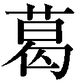
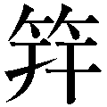

| 「泣き虫同心」事件帖 (PHP文芸文庫) | |
| 谺雄 一郎 | |
| 株式会社ＰＨＰ研究所 (2014) | |

「泣き虫同心」事件帖
谺 雄一郎
 目次
目次
泣き虫登場
（一）
「ぎょッ脅 かすねえ。何でえ子供じゃアねえか。狸 公 かと思ったぜ」
小 者 の八 助 が裏返った声を上げて飛び退 いたので、南 町 奉 行 所 の物 書 き同 心 小 田 桐 左 近 は危 うく前へつンのめりそうになった。
出先から八 丁 堀 への戻り道で、ちょうど栄 橋と称う 元 矢 之 倉 の小さな橋を東から西へ渡りかけた折である。
一月（旧暦）の末、新暦で言えば二月の末で、春とは名ばかりの夕まぐれ。寒風がぴゅうぴゅうと音を立て、柳の枯れ枝を大きく揺らしていた。
左近は今年二十六。四年前、やはり物書き同心だった亡父の跡を継いだ。
小者は奉行所から公式に認められているわけではないがいわば家来で、出 仕 の行き帰りに挟 み箱を担 いだり主人の身の回りの世話をする下 男 である。
八助は父の徳 助 とともに二代にわたって小田桐家に仕え、年は左近より二つ上。立場こそ違え兄弟同然に育った間柄で、とりわけ気ごころの知れたしっかり者の腰 巾 着 だ。徳助は左近の父貫 太 郎 が身 罷 ると、まるで後を追うように亡くなっていた。三年前の秋だった。
その八助がびっくり仰 天 して飛び上がったのは、無理もなかった。
薄暗い草むらでごそごそ音がするので提 灯 を片手にそっと橋下を覗 き込むと、四、五歳の幼い男の子が橋げたの蔭に潜 り込みかけている。
「どうした子供、そンな所にいたら水に落ちる。冷たいぞ。怖 くはないから出ておいで」
左近は優しく声をかけた。が、子供は竦 んだように動かない。
「さあこっちへおいで」
八助が抱 えるようにしてやっと引き出すと、子供はみるみる頬を歪 めてしくしくとしゃくり上げた。
左近はごくりと生 唾 を呑 んだ。
妙な性 癖 がたちまち頭をもたげたのだ。
何を隠そう、左近は泣き虫である。
つい最 前 も、夕暮の空を雁 が渡って行くのを目にしたとたんに、じんわりと目元が潤 んだ。
冬鳥の雁は秋越 冬 のために渡って来て、春繁 殖 地 へと帰って行く。
「あいつらの故郷はどこにあるンだろうなァ」
そう思っただけで、もうたまらなくなってしまったのだ。
それだけではない。
先日は上 役 の与 力 岡 戸 弥 右衛 門 からちょっとした注意を受けると急に怪しくなり、ぽろぽろと涙が溢 れ出た。
「おいおいそンなに泣くなよ。それほど強く叱 ったわけではないだろう」
弥右衛門どのは慌 てた様子で周囲を見回し、声をひそめてくれたが、どうにもこらえられなかった。
分っている。与力どのの言う通りだ。泣くほどのことではない。
物書き同心の仕事は奉行所内で差配与力の指示のもと、町 方 からの各種の訴えや事件の顛 末 、裁判の過程などを書面にすることで、左近はその日も弥右衛門の指示に従って、町方から持ち込まれた訴えの一つを浄 書 していた。
その途中で、打つべき傍 点 を忘れたことを指摘されたのである。
「おい、点を忘れとる、点を」
が、左近は何も叱られたから涙したのではなかった。
岡戸弥右衛門は几 帳 面 な人で、書面が隅から隅まできちんとしていないと気が済まない。文字遣 いにも厳格で、自己流の崩 し方などしようものなら雷が落ちる。それでいてそう後に引く人ではなく、怒 鳴 った後はけろりとしている。
同僚にはうるさがって敬遠する向きもあるが、左近は心ひそかにいい上司を持ったと思っている。弥右衛門は人一倍弱虫で泣き虫の左近に小言を言う時は、出来るだけ衝撃が大きくならないよう努めてくれる。
鬼 瓦 のような顔つきとは裏腹に、そンな心やさしい上司に余計な気を遣わせてしまう自分が情けなくて、つい胸が込み上げてしまったのだ。
──寒風がぴゅッと頬を撫 で、またしても涙が滲 んだ。しかし、今度は哀 しさからではない。大気の冷たさが目に沁 みたのだ。
「あれえ旦 那 、また泣いておいでなンですかい」
八助が呆 れたような声を発したが、言われるまでもなく、この性癖には我ながらいささか辟 易 している。
俺 らはどうしてこうも泣き虫なのかなあ。
ぐいと目元を拭 って苦笑したのは、子供に見られたらさすがにみっともないと思ったからだった。
左近はいっぷう変わった体型をしている。
左腕が右腕より二寸（約六センチ）ほど長いのだ。
そのせいで普通の着物を着ると、左の手が袖口からにゅっと飛び出す。
幼いころは、よくそれをよその子供たちに揶揄 われた。
「うるせえやい。あの弓の名人鎮 西 八 郎 為 朝 だって左手が長かったンだぞ」
泣きながら言い返したものだが、いかんせん肝 心 の弓に才のない身では説得力を欠いた。言うまでもなく為朝は、その強 弓 一発で襲い来る平 家 の軍船を沈めたと云う伝説で知られる七百年前の英雄だ。
母はそんな我が子を憐 れんで左袖を長く裁 った着物を作ってくれたが、左右の釣り合いの取れない異 形 は隠しおおせなかった。
とは言え、泣き虫はそれが心の傷になったのではない。
幼いころはわけもなく悲しくなって布 団 をかぶることもしばしばだったが、ひとしきり泣くと不思議に心が落ち着いたものだ。
長じては親や周囲から、男児は涙なぞ見せるものではないとたびたび諭 されたせいもあって、子供のころのようにはわあわあ泣き喚 かなくなった。それでも何かにつけて胸に迫ると、涙は勝手に溢れ出す。
ただしそれも時によりけりで、相手がわんわん泣いているのに一滴たりとこぼれないこともあるから妙と云うか、虫がいいと云うか。
考えてみると、それはたいてい相手が本気で泣いているのではない時で、どうやら左近の涙は、嘘 泣きには自動的に拒否反応を示すように出来ているらしかった。
体質かも知れない。
それでいいではないかと、左近は口には出さず、ひとり得 心 している。
「涙ってのァな、人間さまだけの特権よ。泣きたい時は泣けばいい。恥ずかしいのは人さまの憐れみを期待して流す涙さ。俺らの涙は断じてそれにあらず」
そンなことよりも、
「俺らに取り柄 はあるのかなァ」
そのことを思うと、いつもとぼンとしてしまう。
物書き同心は文字を書くのが仕事だから、いくら手 蹟 が良くてもそれだけでは取り柄にならない。
痩 せても枯れても二本差しの武士なのだから、剣の腕ぐらいは人並みにと思っているのだが、正直言ってやっとう にはからきし自信がない。
道場へはわりと熱心に通うほうなのに、いまだに目 録 すら戴 けない。
目録とは、ひと通り道場で流派の技を身に着けましたよと云う認可書で、剣の道はそこからが本番となり、さらに中 伝 、免許、免許皆 伝 へと続く。山にたとえると目録は三合目か四合目で、師範代を務めたり道場を持ったりするのは、いずれも免許以上の人たちだ。
「お前、左腕が人より長いのだから、それを生かすような工夫をしたらどうだ」
師や師範代からはよくそう示 唆 されるけれど、うまく行ったためしはない。
まあ奉行所の内 役 が剣の腕を振 う機会などはまずないのだから、そう深刻になるには及ばない。が、武士たる者、やはりいざという時に敵にうしろは見せたくない。
しかしそれはいまのところ願望と云うか憧 れと云うか、せいぜい心がけの域にとどまって、道場ではいつもぼンくら扱いされているのだった。
背は高くも低くもない。
目鼻立ちは取りあえず整い、まずまず好男子のうちと自 負 しているのだが、美男かと問われれば、とてもとてもそンな自信はない。
したがって、そちらも取り柄のうちには入らない。
幼少のころは少々不 格 好 に見えた不揃いな腕の長さは、大人になってからさほど気にしなくなったけれど、鼻筋はもう少し細くていいし、目も笹の葉のように切れ長で鋭いほうが、男としてはかっこいい。
左の頬に小さな黒子 があって、何でもこれは泣きぼくろと呼ぶのだそうだ。
亡くなった母は、
「それはね、あなたの善良さと優しさの象徴 ですよ。恥ずかしいものではありません」
よくそう言っていた。その母は左近が十二の時に胸を病んで亡くなった。
いずれにせよ、二十六歳にしていまだに嫁の来 手 がないのは、泣き虫左近の名があまりにも喧 伝 されているせいだろう。
「涙が出そうになったらね、ごくんとひとつ唾 を呑むんです。それで止まる筈 ですよ」
八助以外、組屋敷にはおさんどんの婆 さんがいるばかりだが、そのお常 からはしじゅうそう諭される。
お常は左近が十五の時から組屋敷へ住み込んでいて、早くに母を亡くした左近にとっては、母代りと云うより祖母代りだ。何ごとにもしゃきしゃきしていて、とても間もなく古 稀 （七十歳）を迎える年には見えない。
「若旦那のいいところはね、正義感が強いことです」
婆さんはいつもそう言って励 ましてくれるのだが、他に言いようがないのが本 音 なンじゃないのかなと思わぬではない。
が、まあ俺の取り柄と言えば、せいぜいそのあたりが関の山だ。
それで十分ではないかと開き直って、やっと心の平 衡 が保たれていると云うわけだった。
（二）
子供の涙を目にしたとたん、左近はぐっと胸が詰まって声も出なくなってしまった。
いちばん苦 手 なのは人に泣かれることで、それも相手が子供となると、どうしていいのか分らない。
「ご自分はすぐ泣くくせに変でござんすよ」
遠慮のない八助にはよく揶揄われるが、苦手なものは仕方がない。
と言うよりも左近には、自分が泣き虫だけに人に泣かれるとたちまち慌ててしまう癖 がある。
この時もそうだった。
「どうしたんだいったい、こんな時刻に。お前、どこの子だい」
八助は、どこからそンなやさしい声が出るのかと思うほど穏 やかに接している。
子供はしゃくり上げるばかりで手に負えなかった。
顔も手足も泥だらけで、よく見ると擦 り傷もあちこちにあるようだ。
捨て子かな、家のない子かな。一瞬そんな思いが走ったが、その割にちゃんとした物を身に着けている。迷 子 かも知れないが、それにしては脅 え方が尋 常 でない。
「父ちゃん母ちゃんはどこにいるンだ」
八助がなだめるように聞くと、
「分らない」
子供はようやく言葉を発した。
「ふむ、お前の名は」
どうやらほッとして問いかけたものの、喉 に啖 がからんだような変な声になる。
「太 郎 吉 」
子供は両目をしきりに擦 り立てながら、懸命に答えている。それを見るとまたしても胸が潰 れそうになり、へたり込みたくなってしまう。
「いくつになる」
「五つ」
居ても立ってもいられないのをこらえて、左近は子供を覗き込んだ。
「なあ、父ちゃんと母ちゃんはいるンだろう？」
ぎょっとしたのは、八助がそう問いかけた時である。
ひくひくと肩を震 わせていた太郎吉が、思いがけない言葉を洩 らしたのだ。
「母ちゃんが逃げろって言った」
ン、何だって。
聞き取れないほど小さな声だった。
「逃げろって。なぜ？ どうしてそう言ったンだ」
「悪い人が追いかけて来たから」
要領は得ないが、脅えているわけはそれで分った。
母 子 の身に何事かが生じたのだ。
この子は、何者かの手を逃れてここまで来たに違いない。母親とははぐれてしまったのだろう。ぶるぶると震えているのは寒さのせいもあるかも知れないが、おそらくは恐怖のせいだ。
愕 然 としながらも、左近は素早く周囲に視線を走らせた。
太郎吉の言う悪党とやらが、この様子をどこかで窺 っているかも知れない。
ならばそやつを引っくくった方が話は早い。と思ったのだが、実は左近には人を引っくくった経験がない。同心は同心でも内役だから仕方がない。
情けないことに、その悪党が目に入ったらどうしようとどぎまぎする。
幸か不幸か、それらしい影はどこにも見当らなかった。
「おい八助、この辺に自 身 番 はないか」
左近は急にしゃっきりして小者に声をかけた。相手が八助なら何も怖くはない。威 張 った声が出せる。
外回りではないので細かい地理には疎 かった。
「へえ、 番だとこの先の山
伏
井戸ンとこまで行かねえとありやせんが、自身番ならすぐ近くにありやすぜ」
番だとこの先の山
伏
井戸ンとこまで行かねえとありやせんが、自身番ならすぐ近くにありやすぜ」
山伏井戸は浜 町 堀 近くに湧 く江戸では知られた名水で、一時水質が悪くなったのを山伏の祈 祷 によって旧に復したと云うのでその名がある。
番と自身番はよく混同されるが実は別物で、前者が武家地にあって費用を近隣の武家屋敷が負担するのに対し、後者は各町の木戸口に置かれたいわば町方の自治会事務所である。
「どうなさるンで」
長い顔をした小者は、剽 軽 な目玉をくりくりさせた。
「子供が震えてるのが分らねえのか。暖めてやるんだ」
「あ、そうか。よしきた。合 点 だ」
八助は脱 兔 のごとく駆 け出した。
太郎吉を抱えて後に続くと、一丁（約百十メートル）ほど先の番屋で老 爺 がひとり、火を起していた。
自身番は現代で云えば、交番と区役所の出張所と火の番を兼ねる。ふつう夜間には家 主 二人、番人一人、店番二人が詰める定めになっているが、世は泰平。いる筈の町 役人たちはまだ来ていないらしい。このまま来ないつもりかも知れない。怠 慢 は今も昔も小 役人どもの特権だ。
「どうしなすったンですえ」
眉 をひそめる老爺に、
「この子に見覚えはないか」
と尋 ねたが、老爺は首を振った。
太郎吉は、身元の分りそうなものをいっさい身に付けていなかった。
「迷子ですかえ」
ふむと左近は不 得 要 領 に応じた。何とはなしに、このまま事情を打明けるのは止めておいたほうがいいと思ったのだ。
外回りではないから馴 染 はないし、町役人を頼っても、太郎吉がこの後どんな扱いを受けるか分らない。
涙は止まったが、太郎吉は今度は顔を紅 潮 させてふうふう言っている。熱を発したのだ。
「外回りの旦那におつなぎしますかい」
老爺がおずおずと申し出たが、顔は明らかに迷惑だと言っている。
さてどうするか。
八助を見ると、およしなさいよと目が言っている。
こう云う場面で左近は、いつもおろおろしてしまう。情けないなあと思うのだが、どうにもならない。世 馴 れた小者が頼りである。左近はすぐに肚 を固めた。
「よし子供は俺らが預かるよ。今夜のことはなかったことにしてくンな」
老爺の小 狡 そうな目がたちまち笑 みに崩 れたのを見て、
「やはりな。八助の忠言はいつだって当っているのだ」
左近は口には出さず頷 いた。
物書き同心は奉行所では内役で、めったに外出しない。
巻 羽 織 に銀 杏 髷 、雪 駄 の裏 金 をちゃらちゃら言わせて颯 爽 と外回りに出て行くのは定 町 廻 りと臨時廻り、隠 密 廻りの三 廻りで、町を往 けば妖 艶 な年 増 女から可愛 い娘たちまでがきゃあきゃあと騒ぐ。若い同心にとっては憧れの的 だ。
それに比べたら、内役は陰気と云うか地味と云うか。
恰 好 よく羽織の裾 を帯に巻き込むことも出来ないし、髷だってごく普通。十 手 にしてからが、つまりは無用の長 物 なのだ。
一男子として、いつかは三廻りのような華々しい活躍をと思わないではないが、物書き役が外回りの同心に抜 擢 された例は寡 聞 にして聞かない。
それに廻り方は仕事が派手やかな分、腕に覚えがなければならないし、人の生き死に、それも無 惨 な犯罪現場と云った辛 い場面にしじゅう立ち会わねばならない。
泣き虫の自分では、きっと四六時中ぽろぽろと涙をこぼす羽 目 に陥 るだろう。
「旦那には似合いやせん。無理でござんす」
八助はあっさりと断言している。
ま、そうずばりと急所を突かれると少しは何をッと思わないではないが、股 肱 の臣 の言 は的を射ている。夢は夢で終るからこそ夢なのだ。
太郎吉との出会いは、その左近が珍しく奉行所から外出した折だった。
訴えを浄書する過程で、不明な点が出たり確認を要する事項が生じると、左近はこのところちょくちょく外出する。
大方の同心は小者に命じて訴 人 を呼び出すのが通例だが、左近は自分から出掛けることにしていた。
「なぜそんなことをする」
同僚からは白い目で見られているが、元来が外へ出るのが好きなのだ。終日薄暗い奉行所の用部屋に籠 っていては、尻に黴 が生える。
が、実を言えば理由はそれのみではない。
そうした訴え主のもとへ自ら足を運んで詳 しい事情を聞き知ると、書面ではとても分らない人情の機 微 に接することが出来る。町方の同心は外回りであれ内役であれ、常に庶民の感覚に寄り添わねばならないと云うのが左近の考えで、
「うむ、それもいいだろう」
有 難 いことに与力の弥右衛門どのは、その思い付きを温かく見守ってくれている。
弥右衛門は、亡父貫太郎とは立場を超えて心通わせた友 垣 同士だった。
今日はそンな外出先からの戻り道。遅くなったので奉行所へは寄らず、八丁堀へ直帰する途中であった。
（三）
太郎吉はこんこんと眠り続けている。
八助におぶわせて組屋敷へ連れ帰ると、お常は目を丸くした。
「おお、おお、可哀 想 に。こンなに汚 れて。擦り傷をいっぱいこさえてますよ」
急いで湯を沸 かし、婆さんが太郎吉の躰 を拭っている間に、八助は医者の得 庵 を連れてきた。裏長屋に住まう藪 医者である。
「風 邪 を引いたンじゃな」
得庵は簡単に診察を終え、擦り傷に軟 膏 を塗 り込むと、煎 じ薬を服 ませるようにと言い置いて、早々に引き揚 げてしまった。
「お腹 が空いてるでしょうに」
お常が薬を煎じるとともに重 湯 を作ったが、太郎吉はひと匙 ふた匙口にしただけで、たちまちうとうとし始めた。
熱にうなされてか、
「母ちゃん」
一度だけ譫 言 を発したが、そのまま深い眠りに落ちて行く。
「よほど疲れてるンだねえ」
年寄りの目に涙が滲む。
「この坊主、いったいどこから逃げてきたンでござんしょうねえ。たった五つの子だ。そう遠くではねえと思うンですがねえ」
「うむ」
八助の見解は理にかなっているが、そうかどうかはまだ決め付けられないと左近は独 りごちた。
とにかくいまは、ひと晩様子を見るほかはない。詳しいことを問い質 すのは明日になってからだ。
ぐっすりと寝入る太郎吉を見詰めていると、
「若旦那ッ、ぐっと唾を呑んで。泣いちゃアいけません」
突然お常に怖い顔で睨 まれて、左近は慌てて唾を呑み込んだ。
ついさっきまで婆さんだって涙ぐんでいたのにと思ったが、例によって涙 腺 が緩 みかけていたのは確かで、さすがに祖母代りの婆さんはよく見ている。
が、それはそれとして、このいたいけな子供はどんな怖い目に遭 って来たのだろうか。そして母親は。安 否 が気になるが、目 下 はどうしてやりようもない。
翌朝、目を覚ました太郎吉は、お常に重湯を口に入れて貰 っていた。
まだ顔が熱っぽい。
南町奉行所はお城の辰 巳 （東南）、数 寄 屋 橋御門内にあり、八丁堀からはほンの十四、五丁（約一・六キロ）の距離である。
いつもの通り、主人の出 仕 の支 度 を手伝った八助が、
「出来るだけ早く戻るからな。いい子にしてるンだぞ」
声をかけると、太郎吉は潤んだ瞳 を向けてこくりとした。こう云うところが八助はうまい。左近には頭で分っていても、そのひと声がすらすら出ない。
だが子供に笑いはなかった。心を開かせるには、まだ時を必要としているようだった。
お番 所 （奉行所）では、特に何事もなく一日が暮れた。前日直接問い質してきた訴え状のはっきりしない点を、きちんと書面に書き入れて提出すると、与力どのは満足そうに頷いた。
「あっしァ、ちょいと栄橋まで行って来やすよ」
朝、奉行所まで同道すると、すぐに袖 を翻 して出て行った八助は、夕刻になっても戻らなかった。
橋を中心に太郎吉を目撃した者がいないかどうかを探 索 し、四方に足取りを辿 りに向ってくれたのだが、まだいい結果が出ないのかも知れない。
もたもたしていると、
「どうだ左近、うちへ寄って行かんか。愚 妻 がお前にしきりに会いたがっておる」
与力どのから声が掛ったので、
「いえ、本日は残念ながら先約がございまして」
左近はそそくさと退出した。
敵さんの狙いは先刻分っている。またどこぞの娘 御 と見合いをしないかと云う誘いなのだ。
妻 女 のお静 さまは八丁堀きっての世話焼きで知られ、左近の縁談がこれまでいっこうに調 わないのは自分の沽 券 にかかわるとむきになっていて、これはどうだあれはどうだとしきりに話を持ちかけてくる。
が、縁談が調わないのは別にお静さまのせいではない。問題は左近にある。そもそも左近には、まだ世 帯 を持とうと云う意思がない。
弥右衛門が困ったような顔をしたが、仕方がない。おそらく与力どのは帰宅早々、奥方どのから冷たい視線を浴びせられるに相 違 ない。
気持は有難く受け止めたいが、ここは一番、三十六計逃げるが勝ちだ。
お番所の門を飛び出すと、左近はくるりと後ろを振り向いて、
「申し訳ありません。ご勘 弁 を願います」
まだ用部屋にいる筈の弥右衛門に向って、ぺこりと頭を下げた。
組屋敷は八丁堀のいちばん南寄りにある。比 丘 尼 橋から京橋を東 下 して、伊 勢 桑 名 十一万石 松平越 中 守 さま上 屋敷の手前を右折する。
八助はまだ戻っておらず、太郎吉も眠っていた。
「ずっと眠りっぱなしなのかえ」
額 を触 ると、まだ熱が少々あるようだった。
「いいえ、さっきお薬を服 んだら、また眠っちゃったンですよ」
お常によれば、太郎吉は昼間何度も目を覚まして、
「母ちゃん、母ちゃん」
と泣いていたと云う。
お常は敢 えて事情は聞かず、ただひたすらあやしてくれていたようだ。
寝顔に見入っていると、
「母ちゃん」
太郎吉が不意に口走った。目覚めたのかと思ったが、譫言だった。楽しい夢ではなく、怖い夢か悲しい夢を見ているようだった。
「早く逢 わせてやりたいねえ」
お常が袖口で目 頭 を押さえると、
「必ず見つけてやるからな」
左近は胸が痛くなってやっと声を絞 り出したが、当てはない。
「八助のやつ、いったいどこまで行きやがったのかなァ。飛び出したら最後、あいつァいつだって鉄砲玉だ。待ってる身にもなれってンだ」
つい苛 々 と、八つ当りせずにはいられなかった。
「おお寒い」
八助が両手を袖口に隠して、頬をぶるぶる震わせながら立ち戻ったのは、暮 六 ツ（午後六時）を大きく過ぎていた。
額にじっとりと汗を滲ませている。
左近は向かっ腹を立てたことを後悔した。
「どうだったえ」
懐 から手 拭 いを出して汗を拭 かせ、膝 を乗り出すと、
「それがですねえ......」
忠実な小者は八の字眉毛をさらに下げて、眉 間 に皺 を寄せた。
大した成果は案 の定 あがらなかったようだ。
「やはり分らんか」
腕組みして溜 息 を吐 くと、
「けどですね......」
八助は、転 んでもただでは起きない男だった。
「どうも太郎吉は、栄橋まで真 っ直 ぐ逃げてきたンじゃアないようですね。橋を軸にして、半円を描くようにあちこちで目撃されているンでやすよ。どれも子供が用 水 桶 の陰にいたのを見ただの、後ろを振り返り振り返りしながら軒 下 を這 うように走っていただのといった類 いなンでやすがね」
「ふうン。で、その半円てのァ東の方か西の方か」
左近は気 負 い込みつつも、一方で八助の探索が、なぜこンなに時間を要したかが分った気がして感動した。
律 儀 な男は、太郎吉が目撃された場所を、丹念に時刻を追って押さえて行ったに相違ない。でなければ、それほど広範囲に目撃証言を発掘できるわけがない。
「東でさ」
しっかり者の小者は苦労の跡を微 塵 も見せず、あっさりと答えた。
「てえことは......」
「へえ、元矢之倉から両 国 方面へかけてでござンすね」
「両国か」
「へい。ただ今日辿った足取りは、横山町の裏道あたりまでが精一杯でござンしてね。太郎吉が実際両国から来たのか、それとも神 田 川の柳 原 土手方面から来たのかは、申しわけねえが、まだはっきり致しやせんので」
元矢之倉から見ると両国は丑 寅 （北東）の方角、柳原土手は真北に当る。
太郎吉が逃げて来たのは、いったいどちらの方向からか。
その距離が遠方へ伸びれば伸びるほど捜 索 の範囲はまた広がり、方角の特定は容易でない。
幼い子供が精一杯の知恵を働かせて、あちらを回りこちらに隠れて難を逃 れようとした様 を思い描くと、それだけで鼻先がつンとする。どれほど辛 くどれほど怖い逃 避 行 だったか。
八助はぺこりと頭を下げたが、それ以上は望む方に無理がある。そこまで分っただけで上出来と云うべきだった。
「ご苦労だったな」
労をねぎらうと、左近はこんこんと眠る太郎吉に目を遣 った。後は太郎吉の心を何とか開かせ、その記憶から何が取り出せるかだが、名案は浮ばない。
八助と意見を交わしたのは、遅い夕 餉 を済ませた後だった。
独 楽 遊び
（一）
翌日は公休日であった。
朝から数 寄 屋 橋のお番 所 へ出向いたのは、八 助 に尻を叩 かれたためである。
太 郎 吉 の熱は下がって質問はどうやら可能と思われたが、敢 えて後回しにした。
もしも母親が無 事 難を逃 れていれば、我が子の捜 索 願 をどこかの自 身 番 へ出しているに違いない。それならそれで手間は省 ける。
江戸は広いから即日届けが奉行所にまで達するのは稀 だが、すでに二日が経 っている。届いていなくても、外回りの同 心 たちの耳に入っている可能性はある。それを確認したほうがいいと八助に奨 められたのだ。
黒 渋 塗 りの門を入ると、およそ六尺（約一・八メートル）幅の青い伊豆石の敷石が式台まで続き、両側に敷き詰められた那 智 黒 の玉 砂 利 が、打ち水に濡れてきらきらと光っていた。
破 風 造 りの玄関を入ると、
「どうした。今日は公休だろう。精が出るな」
上 席 与 力 の石 束 新 左 衛 門 に声をかけられていささかへどもどしたが、むにゃむにゃ言ってやり過ごした。この上席与力どのはどうも苦手だ。言葉のはしばしに棘 があり、鋭い視線にいつも油断のならない光がある。
弥 右衛 門 どのも、
「あまり付きあいたくない御 仁 」
と言っている。
左近にはこの上席与力どのは、どこかしら弥右衛門どのの足をすくおうと、虎 視 眈 々 としているように思われてならなかった。
正面の戸棚の上にずらりと種 子 島 銃が並ぶのは、奉行所の同心がかつては鉄砲組に属していた名 残 りである。
むろん左近は一度も撃 ったことがなく、触 ったこともない。飛び道具はどうも性 に合わない。大好きなお番所の中では最も苦手な場所だ。
そっと外回り同心の用部屋を覗 くと、
「ん？ 行方 不明の子供？ そンなのァいくらでもいるが、ここ二日？ いや聞いてねえな」
瀬 川 と云 う熟練の臨時廻り同心が、怪 訝 な面 持 ちで見返った。
奉行所には外回りとして定 町 廻りと臨時廻りが六人ずつ、それに隠 密 廻りが二人いる。うち隠密廻りは町奉行直属として一つ格上で、老練な同心の多い臨時廻りは精鋭の定町廻りを補佐後援している。
瀬川同心が知らないのなら、届けはまだ出ていないと見てよかった。
「どうした。何かあったのか」
「あ、いや、大したことではないのです」
左近は言葉を濁 して、怱 々 と用部屋を後にした。
太郎吉母 子 の被 った災難がまだどんなものか分らない以上、下 手 に外回りの同心たちを騒がせるのは、かえって面倒を大きくする危険がある。
が、心はしんと冷えた。
捜索願が出ていないということは、すなわち母親が未 だ難を逃れていないことを意味している。
まさか殺されたンじゃアあるめえな。帰りしなに急いで覗いた捕物帳に、しかし、それらしい記載はなかった。捕物帳は、奉行所に備え付けられた記録簿である。
「それだけが救いだが......」
母子の陥 った境 遇 に思いを馳 せると、暗 澹 とする気持を抑 えられなかった。
「旦 那 ァ」
後方から声が掛ったのは、奉行所を出て御堀沿いを北へ一 石 橋へと回り、楓 川に架 る海 賊 橋に差しかかった折である。
一石橋は御堀の水が日本橋川へ入るとっつきで、橋の名はむかし永 楽 銭 の通用を禁じた際に、ここで銭一貫 文 と玄 米 一石 を交換した故事に因む 。楓川は八丁堀から江戸橋へと抜ける掘 割 で、海賊橋は北端の本 材 木 町 と坂 本 町 とを結んでいる。
声の主は八助で、本 郷 の湯 島 天 神 からの戻り道だった。
「おお、どうだったい」
「へい、ちゃんと貼 り付けて来やしたよ。尋ねる方 には、それらしいお札 は見当りやせんでしたがね」
雑 踏 する江戸には迷 子 が多く、参 詣 人 の多い神社仏閣や人通りの多い場所には、迷子石なる石柱が立っている。奇 縁 氷 人 石とも云い、片面が尋ねる方 、片面が教える方で、迷子を探す者は尋ねる方に子供の特徴等を記した札を貼り、心当りのある者は教える方に知り得た事実を記して同じように貼る。
この辺りでは、湯島天神の境 内 と一石橋際 のそれが知られている。が、一石橋は太郎吉が逃げて来たと思 しい方角からは外 れていた。それに先ほど左近が見て来た限りでは、そちらにそれらしい書付けは見当らなかった。
本郷は栄橋からは乾 方 （西北）に当り、方向としてはこちらも多少ずれるけれど一石橋ほどではない。著名な迷子石として湯島天神を選んだのだった。
「うんそれでいい。が、まあ当てにはならねえな」
左近はちらりと眉 根 を翳 らせた。泣き虫とはとても思われない男らしい眉だが、本人は気に入っていない。
「げじげじ眉毛じゃねえか」
鏡を見るたびにそう思う。
何かが分れば町役人を通じて連絡が入る筈 だが、太郎吉母子の境遇が迷子石程度で片付くとは思われなかった。
ともあれ後は、組屋敷へ戻って太郎吉から話を聞き出すのみだ。
昨日までの風がやんで、ちらほらと花を付けだした梅の木が、町 屋 の板塀から顔を覗かせている。
暖かな春はすぐそこだが、可 憐 な花に目が留 ると、
「俺 ら梅は好きだが、あの枝と幹は何とかならねえのかな」
突 如 無茶苦茶な思いが胸をよぎって、左近は苦笑した。
くねくねと曲っているのが性 悪 な年 増 女のように思われて、どうにも気に入らなかったのだ。
「いったい何があったンだえ。ゆっくりでいいから話してごらん」
戻り道で求めた大福を二つに割って与えると、太郎吉はどう答えていいか分らないかのように視線を泳がせた。
八助を真 似 て出来る限りのやさしい声で話しかけたのだが、我にもなく声がうわずる。
大福は現代のそれとは違い、焼鍋で蒸 し焼きにしたもので、ほかほかと湯 気 が立っている。行商が、天 秤 棒 に吊るした籠 に火鉢を入れて売り歩くのだ。
太郎吉は、やっと普通の食事が摂 れるまでに回復していた。
「さあお食べ。餡 ンこが美 味 しいよ」
お常 婆 さんが脇から言葉を添えたが、太郎吉は餅 を手にしたまま涙ぐみ、ようやく口を開いたのは、おずおずとそれを口に入れた後だった。
「父ちゃんはどうしたンだえ」
記憶の生々しすぎる母親のことは辛 すぎて口にし難 いのかも知れないので、左近は遠巻きに話を聞き出すことにした。
「宇都宮へ行った」
「宇都宮って、下 野 （現栃木県）のかえ」
「うん」
たった五つの子が本当に下野を知っているかどうかは定かでないが、あどけなさは微笑を誘った。
「宇都宮のどこへ行ったのか知ってるのかい」
「お爺 ちゃんのとこ」
「お爺ちゃんのとこって、太郎吉は行ったことがあるのかえ」
「ない」
「じゃ会ったことは」
「ない」
「お爺ちゃんの名は？」
「知らない」
「ふうむ」
嘆 息 のほかはない。父親は何用あって彼 の地へ赴 いたのか。
事はどうやらその留守に生じた模様だが、それはどんな事情に依 ったのか。五歳の子供には酷 な質問だった。
「父ちゃんの名は？」
左近はそろそろと話を進めた。太郎吉はまたしても、しくしくと泣き出している。両親を思い出したのだろう。
おいおい泣くなよ。お前が泣くと俺らまで泣けて来ちまうぜ。子供と一緒に泣くなンて、いくら泣き虫左近でもさまにならない。
ひとしきりしてやっと涙を噛 み殺した太郎吉は、ぽつンと言った。
「幸 吉 」
「ふうん、父ちゃんは幸吉つぁんか。仕事は何ンだえ」
「反 物 屋さん」
「反物屋？ 店があるのか」
「ううん、ない」
太郎吉は強く首を振った。どうやら父親は担 ぎの反物商、つまり店を持たずに 籠 に詰めた商品を担いで売り歩く行商人らしい。
「こりゃ手掛りになりやすね」
八助が小声で囁 く。
反物の行商なら卸 し元がある筈で探しようがあると云うわけだが、八 百 八 町 に反物を扱う店がどれほどあるか。行商は新品ばかりを扱うのではなく、古着を解 いて売り歩く者もいる。それを思えば、行き当るのは犬も歩けば棒に当る式に等しい。
「じゃ太郎吉は、父ちゃん母ちゃんとどこに住んでいたンだえ」
左近は、こんがらがった糸を一本一本解きほぐすかのように話を進めた。
「長屋」
「どこのだい」
「分らない」
町名を知らないと云う意味だろう。
「ふうむ。では近くに有名なお寺か神社はなかったかい」
「旦那、有名たって子供に分りゃあしませんぜ」
八助が口を挟 む。なるほどそれはそうかも知れない。案 の定 太郎吉は、
「知らない」
あっさり答えて大福をまたひと齧 りした。しゃくり上げたままである。
「では近くに大きなお蔵 とか橋とかはどうだい。覚えていないかい」
左近は聞き方を変えた。
八助の調べでは太郎吉は両 国 方面から逃げてきた可能性がある。蔵と言ったのは川向うに広大に広がる幕府御米蔵を、橋はむろん両国橋を念頭に置いたのである。
くりくりした目を上げた太郎吉が口にしたのは、
「川」
のひと言だった。
「川？ どンな川だ」
「大きい川」
「どれほど大きい」
「舟が通る」
しめた、と左近は意気込んだ。千 石 船 が入るなら大川（隅 田 川）だし、その船 溜 りでも知っていようものなら見当はつく。
「どンな舟だえ。大きな舟か小さな舟か」
が、左近はたちまちしょぼンとせざるを得なかった。可愛 く小首を傾 げた太郎吉はややあって、
「分ンない」
辛そうな目を向けた。涙が今にも溢 れ出しそうに盛り上がっている。
「若旦那、そンなに問い詰めたらこの子が可哀想ですよ」
たまりかねたお常が太郎吉を抱きしめたが、辛いのは左近も同じだった。
何とか手掛りを見付けねばならない。いまや胸 裏 を占 めるのは、太郎吉の身の上もさることながら母親の消息である。まだ命があるのなら、一刻も早く救い出してやりたい。
太郎吉との問答だけでは住いの特定が困難なのはもはや明らかだが、諦 めるわけには行かない。母親の命運は太郎吉に懸 っている。
大きな川とは大川を意味する可能性が高いが、それを言うなら柳原土手のある神田川にも舟は行き交う。江戸では指折りの川である。子供の目にはとてつもない大河に映ったとしても、何ら不思議はない。
思案投げ首した左近は、ふいに肝 心 なことを聞き落しているのに気が付いて、ぴしゃりと額 を叩いた。
（二）
「なあ太郎吉、お前の母ちゃんの名は何と云うンだい」
何よりそこから聞き始めるべきだったのに、それを忘れていようとは。
これだから物 書 き同心は頼りにならない。
「おさと」
太郎吉は幼い顔を上げた。
「ほう、おさとさんか。優しそうな名だな。綺 麗 な人か」
「うん、綺麗で優しいよ」
瞳にやっと光が灯 る。しめしめ、いい兆 候 だ。
が、聞きづらいのはこの先だ。母子の身に何が起ったのか。
左近はしばらくの間、無心に大福を頬張る太郎吉を柔らかな視線で見守っていたが、ついに意を決した。そこを聞かない限り前進はない。
「なあ太郎吉、一昨日のことだ。覚えていることを全部教えて欲しいンだ。何があったンだえ」
途 端 に左近はひゃっと目をつむった。太郎吉の表情がさッと曇 ったのだ。大福を口にしかけたまま凍 りついている。つぶらな瞳にみるみる涙が盛り上がり、躰 がぶるぶると震 え出す。お常が急いで抱 え込み、左近を睨 みつける。
子供は婆さんにしがみついて激しくしゃくり上げている。
やはり駄 目 か。太郎吉は話したくなくて答えを拒 んでいるのではない。答えたいと思っても、その前に心が閉ざされてしまうのだ。
「いや、いい、いい。答えなくていい。こいつァ小 父 さんが悪かった。嫌なことを聞いたな。勘弁しな」
慌 てて矛 を収めたものの、こうしている間にもおさとと云う母親の身が案じられる。左近は初めて焦 りを感じざるを得なかった。
「この子はそれほど怖 い思いをしたンですよ」
お常が沁 々 と言うと、
「許せやせんね。そンな思いをさせたやつは」
八助が目を怒 らせた。
幼い心に刻み付けられた深い傷をどう癒 してやったらいいのか。左近は途 方 に暮れた。
親と云うものは、こンな時どう対処しようとするのだろうか。自分が太郎吉なら言葉はいらない。父か母がただしっかりと抱きしめてくれればいい。が、太郎吉は他人の子だ。子を持たない上に、子供と触 れ合った経験すらろくにない自分はどうすればいい。頼りは酸 いも甘いも噛み分けた老 婆 としっかり者の下 男 だが、そのお常はしくしくとしゃくり上げる太郎吉を、ひたすら抱きしめて頭を撫 でている。
婆さんはやがて、太郎吉に添 寝 して子 守 唄 を口ずさみはじめた。
ねんねんころりよ おころりよ 坊やはいい子だ 寝ンねしな......
しゃがれた低い歌声に哀 調 が籠 る。
「これァどうも手間が掛りそうだな」
深い溜 息 を吐 くと、
「けど母親はどうします？ 放っといていいンですかい」
八助がひそひそ声で言った。思いはどちらも同じであった。
左近は、懐 から取り出した小さな独 楽 を所在なげにいじっている。
独楽は子供のころからの唯一の趣味だ。
寂 しい時悲しい時そして嬉 しい時も、左近は一人で独楽と遊んでいる子供だった。
「外でお友達と遊んでいらっしゃい。男の子がそンなに家の中に閉じこもってばかりではいけませんよ」
病 床 から半身を起してか細い声で叱 った母上の優しい声は、まだ耳元にこびりついている。
友達と云えば、左近には八助がいるばかりだった。
活発な八助はよく外へ飛び出して行ったが、左近は一緒に出掛けてもいつの間にかひとり家へ戻り、庭で独楽を回していた。左腕の長い体型が苦になったのではない。病床にある母をいつも視 野 に入れておきたかったのだ。
左近は下 軸 を親指と人差し指で強くひねって宙で回すと、浮き上がった独楽を掌 に受けた。
回転する上 面 の幾 重 もの色模様を見詰めているとそれだけで心が洗われ、美しさにうっとりとして来る。大人になった今も感動は少しも変わらない。
左近は、大小さまざまな独楽を百個ほども持っている。
好みは上面が何重にも彩 られた江戸独楽である。
形状にはお国柄があって、雪深い地方では雪の上で回せる独楽もあると聞く。
長崎奉行所へ赴 任 していた亡父の友人が土産 に持ち帰ってくれたのは、大きな団 栗 のようなずんぐりとした独楽で九州地方独特のものらしい。
左近の宝物の一つである。
「わあ」
寝ていたと思った太郎吉が、小さく感嘆の声を上げた。
掌の上で回る独楽を、不思議なものを見たとでも言いたげに、つぶらな目を瞠 って見入っている。
「うむ。独楽は好きか」
左近は胡坐 をかいたまま、ゆっくりと太郎吉に向き直った。
「うん」
「回したことはあるか」
「うん父ちゃんと。でもそンなに綺麗なのじゃない」
「そうか。ではやってみるか」
夕 餉 の四 足 膳 の上を片付けて左近が手本を見せると、太郎吉は懸命に独楽回しに挑戦した。初めは失敗ばかりだったのが、少しずつ成功すると目を輝かせてまた挑む。物事に熱中する子供を見るのは心楽しい。
それよりも嬉しいのは、太郎吉が重く閉ざした心を僅 かながらも開きかけているかに思われることだった。
じたばたしても始まらない。
余計なことを持ち出して再び心を閉ざさせてしまったら、すべては水の泡 となる。ここが我 慢 のしどころだ。
左近は自分に言い聞かせた。八助がその調子だと言いたげに、掌 で煽 り立てている。
やがて十中八九回せるようになったのを見てにっこり頷 いてやると、幼な子の目に誇らしげな色が浮ぶ。
「さあさあもう寝 みなさい。あまり夢中になってたらまた熱が出ちまうよ。独楽はまた教えてもらいなさい」
お常に声をかけられると、太郎吉は素 直 に従った。
「明日も教えてくれる？」
「おお、教えるとも。今度は紐 を使って回すのを教えよう」
「うん」
嬉しげに頷いて布 団 へ入った枕元で、お常がまた子守唄を歌い出した。
「母ちゃんが歌ってくれたのと同ンなじだ」
「そうかい。太郎坊のお母ちゃんはもっと上手だったろう」
「うん。でもお婆ちゃんも上手だよ」
「おや有 難 うよ。お世 辞 が上手だね。さあもう何にも心配しないでよく眠るんだよ」
「うん。......母ちゃん、逃げられたかなァ」
背中でぼンやりと遣 り取りを聞いていた左近は、ハッと身を固くした。太郎吉が母親の消息に初めて触れたのだ。
振り返りたくなるのを必死にこらえて聞き耳を立てる。
「あいつ、悪いやつなンだ。母ちゃんをいじめたンだよ」
太郎吉はぽつりぽつりと訴えるように、お常に語りかけている。
「そうかいそうかい。何てェやつだろうね。ひどいやつだねえ」
お常が布団の上から太郎吉の躰をゆっくりと叩いてやりながら調子を合わせている。躰を回しかけた左近をお常が目で制した。
独楽を弄 びながら素 知 らぬふりを装 ったものの、全身が耳になる。
「さあさあもうお寝み。そのお話は明日、左近の小父ちゃんにしてあげなさい。小父ちゃん喜んで独楽を教えてくれるよ」
老婆が小声で囁くと太郎吉の声は消え入るように小さくなり、やがてすやすやと寝息を立て出した。
台所で片づけをしていた八助が戻って来て、
「どうかなさいやしたか」
きょとンとして声を低めると、
「うん」
左近は顎 をしゃくって居間へ戻った。
「婆さんのお蔭で、明日はうまく行くと話を聞き出せるかも知れねえよ。さすがに年の功だぜ」
お常が相 好 を崩して空 笑 いしている。
物事ってのはね、何でも急いじゃアいけません。特に小さな子供を相手にするには、せっついちゃアいけませんよ。ゆっくりゆっくり。でなけりゃア出るものも出ませんてさ。皺 くちゃの顔がそう教えているかのようだった。
（三）
「八助、おめえ済まねえがな、小 田 桐 左近は風 邪 発熱のため、まことに申し訳なきことながら本日出仕を控えさせていただきますと、岡 戸 さままで届けちゃアくれねえか」
「へいッ」
翌朝早く、左近は八助を与力のもとへ使いに出すと、早々に朝 餉 を済ませた。
ずる休みをとやかく言っている場合ではない。股 肱 の臣も主人の肚 の内は先刻承知だ。
はしっこい小 者 は、たちまち組屋敷を飛び出して行った。
太郎吉に語りかけたのは八助が戻った後である。行き詰まった時の最後の砦 は八助だが、左近は何とか自力で挑戦してみることにした。
独楽を先に教えようか、話を先にするか、少々迷ったが話を先に聞くことにした。楽しみは後に残してやったほうがいい。
「今日はな、紐を使った独楽回しを教えてやるぞ。だがその前にちょいと小父さん、お前と話がしたいンだ。構わないかえ」
太郎吉はちょっと頬を強 張 らせたように見えたが、
「うん」
すぐに頷いた。
子供ごころに何を聞かれるかを敏感に悟 っている。が、反応は昨日までとは微妙に異なっている。それが嬉しかった。
「聞きたいのは母ちゃんのことだ。無事にいるのは間違いねえが、それなら早く探し出してやりたい。太郎坊のことをきっと心配しているからな。分るかえ」
左近は慎重に言葉を選んだ。
「うん、分る」
太郎吉は一瞬不安げに瞳を瞬 かせたが、存外素直に頷いた。
出足は悪くない。
お常が傍 らで心配そうに見守っている。八助は台所の板敷からそっと様子を窺 っている。気配りの利 く小者は、極力子供に圧迫感を与えまいとしているのだ。
「なあ太郎吉、母ちゃんはなぜお前に逃げろなンて言ったのかなァ」
左近はそろりと探りを入れた。ここで太郎吉が何と答えるか。そのひと言が勝負の分れ目だ。うまく答えが出れば駒は先へ進むし、そこで止まってしまえば元の木 阿 弥 だ。左近は精一杯、瞳の色を和 らげた。
「悪いやつが追っかけて来たから」
「ふうむ。では、その悪いやつとはどンなやつなんだえ。名は知っているか」
左近は瞬間、失 敗 ったと臍 を噛んだ。また畳 みかけてしまった。名を聞くのは後にするべきだった。
だが太郎吉は、
「うん。お屋敷にいるやつだよ」
悪 漢 の名には触れず、あどけなく答えた。
一点の曇りもないつぶらな瞳が、ぱっちりとこちらを向いている。どうやら昨日までの恐怖は一応拭 い去られている気配だ。
「お屋敷？」
「うん、母ちゃんと行ったンだ」
「行ったって、なぜ行ったンだ。母ちゃんに御用でもあったのかい」
「知らない。父ちゃんが戻って来るまでここにいるンだと言ってたよ」
「母ちゃんがかい」
「うん」
さてこれはどう解するべきかと、左近はとつおいつした。
太郎吉の話から類推すると、母子は父親の幸吉が宇都宮へ向った後、いずれかの屋敷へ預けられたか引き取られたと受け取れる。が、事はそう単純なのだろうか。ならばおさとは、なぜ太郎吉に逃げろなどと言ったのか。
屋敷うちで何事かが生じたのは明らかだが、それは果してどんな事情だったのか。幸吉が宇都宮へ赴いたのは何ゆえだったのか。
謎は深まるばかりだが、この場は慌てず騒がずだ。
少なくともこれは、まだ外回りの同心につなぐべき事案とは思われない。多忙な外回りたちは、死人でも出なければ滅多に事件にかかずらわったりしない。現状ではまず突っ返されるのが落ちだ。それに内 役 とは言え、自分も八丁堀同心。これしきを処理できなくて何とする。左近は自分を叱 咤 した。
その気 負 いが後でとんだ疫 病 神 になって跳 ね返って来ようとは、この時、想像すらもしなかった。
子供の説明は断片的でまとまりがない。まだ五歳なのだから仕方がない。が、輪 郭 はしだいに見えて来た。
「お屋敷と云うのは、おさむらいの屋敷かえ」
ひときわゆっくりと質問を重ねた。
「ううン違う」
「そこにおさむらいはいなかったのかえ」
「うん、いない。怖い人がいた」
さむらいではない怖い人とは、やくざ者の意だろうか。
お常が袂 から蜜 柑 を取り出して剥 いてやると、
「ありがとう」
太郎吉は無邪気な頬を綻 ばせた。覚 束 ない小さな手でひとほろずつ口に運ぶ子供を見ていると、またしても胸が詰まる。そろそろ八助の援軍が欲しくなって来たが、左近は込み上げる弱気をぐっとこらえた。
「母ちゃんと太郎坊は、そのお屋敷のどこにいたンだえ」
勇を鼓 して聞くと、
「お台所のそばの小っちゃなお部屋」
手にした蜜柑に目を落したまま答える。
下 女 部屋のことか。
「ほお、するとそこで母ちゃんは何をしていたンだえ」
「お手伝い」
「お掃 除 とか、おさんどんのかえ」
「うん」
「で、怖い人はどこにいたンだい」
「周り」
「いつもかえ」
「うん。おいらがお庭へ行こうとしたら、駄目だって叱られた」
「ふうむ。それで？」
「お部屋へ戻ってろって。出ちゃいけないって。怖かった」
見張りだろうか。となると、母子は引き取られたのでも預けられたのでもなさそうだ。では人 質 か。それなら、おさとが逃げろと言ったのも頷けなくはない。
左近がぐいと膝 をにじらせると、
「若旦那ッ」
お常がきッとなって睨みつける。太郎吉が、蜜柑を口に運ぶ手をぎょっとしたように止めている。
危ない危ない。どうやら左近の顔がよほど怖かったようだ。
「済まん済まん。小父さん、怖い顔をしたか。勘 弁 しな」
ここで口を閉ざされたら身も蓋 もない。子供を相手にするのは難しいな。熟練の外回り同心なら、こんな場合どう対応するのだろうか。いや俺らの顔が怖いのなら、彼らの顔はもっと怖いだろう。外回り同心の顔は、悪党向けではあっても子供向けではない。俺らのほうがまだましなはずだ。左近はぽりぽりと小 鬢 を掻 いた。
ふうっと深呼吸して一 拍 措 くと、改めて太郎吉に穏 やかな目を向ける。
「なあ、そのお屋敷ってのは誰のお屋敷だい？」
「分ンない」
「どんな人がいた？」
「ええっと、意地悪なおばさんと嘉 助 さんて人......」
「嘉助さんてのは？」
「番 頭 さん」
「番頭さん？」
「うん、母ちゃんに怖い顔したンだよ」
「その嘉助がか」
「うん」
「なぜ怖い顔をしたのかな」
「ええっと......」
宙を見上げたのは、懸命に答えを探しているに相 違 ない。
「母ちゃんが言うことを聞かなかったから」
太郎吉はやっと適切な答えが見つかったと言いたげに、蜜柑をひとほろ口にした。
「どンなことを言われて聞かなかったのか、太郎坊は知ってるのかえ」
「えっと......。よく分ンない」
頬が悲しげに歪 んだのは、答えの出せない自分が子供心に情けなくてならないのだろう。
「ではこう言ったらどうかな。怖い顔をした時、番頭さんは何と言っていた？ 何か覚えていることはないかえ」
左近は薄紙を剥 ぐように問いを重ねた。
「うんとね、声はよく聞えなかったけど、母ちゃんは泣いておいらを抱きしめてくれたよ」
「それは嘉助がいなくなった後なンだね」
「うんそうだよ。母ちゃん、父ちゃんがきっと迎えに来てくれるから、それまでの辛 抱 だって」
瞳がまたじわりとうるんでいる。子供なりに波立つ胸を懸命に抑えているのだろう。
お常婆さんがそっと太郎吉を抱き寄せる。目 顔 で今はもうその辺でと言っている。そうだなと左近は頷いた。言われるまでもなく、聞いている自分のほうがいささか辛くなっている。聞き出さなければならないのはむしろこの先だが、それはこの際、後回しだ。八助も目でそう言っていた。
「では話はこのくらいにして、独楽を回して遊ぶとするか」
意を決してぽんと膝を叩くと、左近は太郎吉を促 して庭へ出た。
片割れ月
（一）
暮れなずむ大空に鳶 が一羽、高々と大きな輪を描いている。
風は止んでいるが、冷えびえとした空気が肌を刺す。
「わたしは何と云 うおっちょこちょいなンだろう」
同じころ──。
太 郎 吉 の母おさとは溢 れる涙を拭 おうともせず、ひとり茫 然 と空を見上げていた。
室 町 の呉服商境 屋 善 右衛 門 の向 島 の寮 である。
ややもすると膝 から下が崩れ落ちそうになり、勝手場の門 口 の柱で身を支えるのがやっとだった。
宙の一点に太郎吉の姿が幻となって浮んでいるのだが、焦 点 が合わない。
あとからあとから脱力感が押し寄せる。
詰まらぬことに動転して、かけがえのない可愛 い我が子を広い江戸の町へ一人で抛 り出す羽 目 になったのは、三日前である。
「あの人にどう詫 びたらいいのか」
亭主の幸 吉 は今、家族の幸せのために辛 い旅に出ている。
その留守に、自分は何ととんでもないことを仕出かしてしまったのか。
この寒 空 に、あの子はどこでどうしているか。
「迷 子 札 を着けておくべきだった」
太郎吉はいつも目の届く所にいるので、必要とは思わなかった。今にして思うと、それが千 慮 の一 失 であった。
いい人に助けられていればいいが、そうでなければ飢 えてどこかで行き倒れているかも知れない。
悔 んでも悔みきれない自責の念が津波のように襲いかかって、胸は今にも張り裂けそうだった。
「神さま仏さま、鬼 子 母 神 さま不 動 明 王 さま、どうかあの子の命を、太郎吉の命をお救い下さい。代りにわたしはどうなったっていい。あの子だけはお助け下さい」
懸命に手を合わせ、神仏に祈るしか手立てはない。
こらえてもこらえても涙は勝手に溢れ出し、もはや袖口では拭うのも間に合わない。
「みんな嘉 助 さんが悪いンだ。あんないやらしい言い方をなさるから」
つい人のせいにしたくなるのだが、それが逆 恨 みにすぎないことは自分がいちばんよく分っていた。
六日前である。
「おさと喜んでくれ。室町の境屋さんからいい仕事を頂いたよ」
担 ぎの反 物 商 をしている亭主の幸吉が、満面の笑みで本 郷 の長屋へ駆 け戻ったのはその日の夕暮れどき。おさとは初め、亭主が何を言っているのか分らなかった。
室町の境屋と云えば江戸でも指折りの呉服太 物 商 で、主人の善右衛門は一 介 の担ぎ商から身を起して、今の身 代 を築いたと云う立志伝中の人物だ。
「私もあやかりたいものだよ」
幸吉はよくそう言って尊敬の念を口にしていたが、駆け出しの担ぎ商には敷 居 が高く、出入りはなかなかままならなかった。
その善右衛門が、思いがけない声をかけてくれたのだと言う。
「境屋さんは、どうやら日ごろから私の仕事ぶりを見てくれていて、この男になら委 せられると思って下すったようだよ。ほら見てくれ。私を見込んでこんな大 枚 の金を預けてくれた。これで、青梅 縞 の仕入れの談 判 をして来てくれと仰 言 るンだ」
取り出した胴 巻 には、三十両の小判が光っていた。
取引先への手付金と旅費だった。
おさとは目を丸くした。まるで富くじに当ったような気分だった。
青梅縞は武 州 青梅特産の織物で、作られる量が少ないところから、反物商の間では大変な奪い合いになっている。
境屋はその仕入れの交渉を、
「お前さんになら安心して託 すことが出来る。先さまの気持を動かすのは、何と言っても人柄だからねえ。うちの者では頼りなくていけない。これまで私は、お前さんの誠実な仕事ぶりを蔭からじっくり見させて貰 ってたンだよ」
そう言って委 ねてくれたと云うのである。
「よかったねえ、お前さん。地 道 にやって来たお蔭だね」
「うん。おてんとさまはちゃんと見ていて下すった。お前にも苦労をかけたが、これで私にもやっと運が巡ってきた。境屋さんは、この取引がうまく行けば他の仕入れの一部をさらに私に委せ、儲 けの二割を戻してくれると仰言ってるンだ。これで念願の居 店 を持てるようになるかも知れないよ」
夫婦が手を取り合って有 頂 天 になったのは当り前で、あれほど歓喜にむせんだのは、太郎吉がおぎゃあと元気な産 声 を上げて生まれた時以来であった。
その夜の食卓には、久し振りに取れ立ての鰤 の刺身が載った。幸吉が帰りがけに祝いのしるしとして求めてきたのだ。
十日ぶりの夫婦の営 みはひときわ激しく、おさとは数え切れないほどの絶頂にあえいだ。
幸吉の興奮はさめやらず、三度求めてなお愛 撫 を続け、
「お前さん明日は早立ちだろ。帰ってきたらまたすぐに出来るじゃアないか。ほどほどにしとこうよ」
甘く囁 いて制 御 しなければならないほどだった。
その歓喜が一夜にして、文字通りたったひと晩きりであっさり暗転しようとは。
その時を思い起すと、おさとは瘧 のように身を震 わせるほかはなかった。
「父ちゃん、行ってらっしゃアい」
「じゃお前さん、気を付けてね」
幸吉が満面の笑みに送られて勇 んで長屋を出たのは、翌朝まだ夜も明けやらぬ頃である。
が、禍 福 はあざなえる縄のごとし。好 事 魔 多しとはよく言ったものだ。
「お、おさと......」
幸吉が泥まみれの哀 れな姿でよろめくように立ち帰ったのは、出掛けてまだ一 刻 （約二時間）もしないうちだった。
「ど、どうしたンだえ、お前さん。怪 我 してるじゃないか」
仰 天 して夫を抱き起したおさとは耳を疑った。
「う、奪われた。金を奪われた」
「な、何だって。どこで、誰に」
何が何やら一瞬理解出来なかった。
「わ、分らねえ。お茶の水を抜けようとした時に、いきなり後ろから襲われたンだ」
青梅へは内藤新宿を経て、青梅街道へ入るのが道筋である。
お茶の水はその通り道で、昼なお暗い藪 があちこちに散在する。
追 剥 が出るとの噂 は聞かぬでもなかったし、安全を期せば多少遠回りでも他の道を選ぶべきだったろう。
が、一 刻 も早く青梅へ行き着きたいとの思いが先に立ち、危ない道を敢 えて辿 ったのは無理からぬところだった。
幸吉によれば、賊 は音もなく忍び寄ると、あッと声を上げるいとまもなく襲いかかり胴巻を抜き取ったのだと言う。
「二人組だ」
幸吉は必死に賊の跡 を追った。が、夜明け前の闇が最も深くなる暁 暗 の中に、二人組はたちまち行方 を晦 ました。
いま思えば、その時もっと冷静になって知恵を働かせていれば、時間も稼 げたし急場をしのぐ工夫だってついたかも知れない。
が、夫婦は惑 乱 しただけだった。
取った行動は悪あがきでしかなかった。
「おさと、家に今いくらある」
奉行所への届けもしないまま、涙で顔をくしゃくしゃにして意気消 沈 していた幸吉が、むくりと身を起したのはその日の午後である。
「いくらってお前さん、掻 き集めたって五両ちょっとにしかならないよ。いったいどうしようって言うんだい」
いつの日かきちんとした居店を構えられるようにと、爪 に火を点 して貯 めた金だった。
「そ、そいつで三十両作る。出してくれ」
お届けをしなかったのは奪われた現場に目撃者がおらず、狂 言 と疑われるのを避けたのと、事実を境屋に知られるのが怖 かったためである。
「こンなことが知られたら、二度と仕事を回して頂けなくなる。せっかく出来るようになったお出入りも差し止めになってしまう」
頼みにならない男、狂言を仕組んだかも知れない男。悪評は燎 原 の火のごとく、江戸じゅうの問 屋 筋 に広がるだろう。
そうなれば担ぎ商としての生 業 はしづらくなり、店を持つと云う夢なぞ永遠に諦 めなければならなくなる。
夫の目は血走っていた。
「どうやって。何をしようって言うンだえ。まさかお前さん、博打 でお金を作ろうてンじゃあないだろうね」
「それだ、それしかねえ。分ってくれ、おさと」
「い、嫌だよお前さん、それだけはやめておくれ。博打にはいっさい手を出さないと、一緒になる時あれほど誓ったじゃアないか」
「あの時はあの時だ。今はそれを言ってる場合じゃアない。今度きりだ。この場さえしのげれァ二度と手を出さない。どこだ、金はどこだ」
幸吉は家じゅうを引っ掻き回したあげく、おさとが神棚に隠してあった金を見つけ出すと、脱 兔 のごとく夜の町へ飛び出して行った。
あの時わたしは、なぜ命に代えても亭主を止めなかったのか。
後悔は先に立たない。
その夜、幸吉が襦 袢 一枚の寒々とした姿で悄 然 と長屋へ舞い戻ったのは、もう九ツ（午後十二時）に近かった。
不安はたちまちのうちに的 中 したのだった。
（二）
田舎にいるころ──幸吉は一時だけだが、博打に狂った時期がある。
勝ったり負けたりを繰り返し、ついに四十両の借 財 を作った。
その金は、素 封 家 である実家の親が立て替えた。
おさとは幸吉の家の下 女 で、密 かに二世を契 っていた。
借財の肩代りに際し、親の出した条件はおさととの仲を清算し、よそからしかるべき嫁を迎えることだった。
「冗談じゃない。私はおさとを離さないよ。私の女房はおさとだけだ」
ふた親が二人を引き離そうとすると、幸吉はそう言って頑 強 に抵抗した。
「な、江戸へ行こう。二人でやれば何とかなるさ」
密かに駆け落ちまで口にした。
嬉 しかった。たとえ口先のみであろうとも、そのひと言を聞いただけでおさとは満足だった。
「若 旦 那 さま、あたしのことなンかどうでもいいンです。どうか大旦那さまや大奥さまのお気持を汲 んで差し上げて下さい。若旦那さまにふさわしいお嫁さんをお迎えになって下さい。わたしは遠くからお幸せを祈っています」
十九になったばかりのおさとは、泣いて幸吉を説得した。本心でなかったのは言うまでもない。
おさとには、大恩ある主人夫婦を裏切ることはどうしても出来なかった。
どんなことをしても若旦那さまの身持ちを正さなければならない。それがわたしの責務だと思った。
そもそも下女の身でありながら、若主人の幸吉と好き合ってしまったこと自体が大きな裏切りなのだ。
大旦那さまや大奥さまが安心できるよう、若旦那さまを説き伏せなければならない。そのためなら命なぞ惜 しくはない。わたしが死ぬことで若旦那さまが親孝行出来るのなら、それでいい。
思い詰めたおさとは、村の溜 池 に身を沈めようとして足を踏み入れかけた。
辛 うじてそれを押し留めたのは〝慕 情 〟と云う名の欲である。
別れるのはいいにしても、幸吉がこの世にある限り死にたくはなかった。愛する人の姿を遠くからでも永遠に見ていたかった。
そのおさとが、
「ね、逃げましょう。江戸へ行くンです。向うで二人だけの幸せを見つけましょう」
一転して自ら駆け落ちを口にしたのは、お腹 に小さな命が宿っていることに気付いた時である。
この子のために。それまでおさとのいっさいを支配していた観念は、その瞬間に消し飛んだ。幸吉に否 やはなかった。
おさとは村外れから幸吉の両親に深々と頭 を垂れて詫びを言い、手に手を取って暗い夜道を駆けた。
以後、国元とはいっさい音信を取っていない。六年前のことである。
「博打には二度と手を出さない」
幸吉が誓いを立てたのは、その折のことだ。
この期 に及んで、幸吉が奪われた金を博打で埋 めようなぞと浅はかなことを思いついたのは、昔執 った杵 柄 あってである。
おさと自身、それでうまく行くのならと一瞬心が揺らいだのは否めない。
江戸の博打場がそれほど甘くはないことを、わたしたちはとうに知っておくべきだった。臍 を噛 むとはこのことだった。
「一度は憑き に憑いて、一気に三十両を手にしたのだよ」
戻った幸吉は、めそめそと泣きながら愚 痴 をこぼした。
「だがこンなに憑いているンならあと五両、せっかくだからお前が出してくれた元 手 も取り戻したいと思ったンだ」
もとよりおさとが出したのではない。幸吉が無理やり持ち出したのだ。そう詰 っても後の祭りだった。
わずかな欲をかいたばかりに、幸吉の憑きは落ちた。目の前に積まれていた三十両分の駒 札 はみるみる減り、ついには着物から帯、煙草 入れに至るまで奪われ、すっからかんになっていた。博打とはそう云うものなのだ。
からりと晴れた寒空に片割れ月が皓 々 と映 えていた。
人生は一寸先が闇である。
「おさと、俺ァ宇都宮へ行って来る」
「えッ」
虚 脱 して蹲 っていた幸吉がぽつンと洩らしたのは、夜が白々と明け初 める頃である。驚 愕 のひと言だった。
宇都宮は幸吉の故郷である。
三十両の金は、素封家の実家にとってはさしたる金ではない。
が、すぐに同意は出来かねた。
「そンなこと言ったって、お前さん。大旦那さまや大奥さまには飛んだご不孝をしっぱなしなンですよ。今さらそンな。わたしには合わせる顔がありません」
「じゃどうしろッてンだ」
「しッ。太郎吉が起きるじゃないか」
愛 しい我が子は、何も知らずにすやすやと寝息を立てている。
幸吉は苛 々 とそっぽを向いた。
癇 癪 を起されると、おさとには代りになる手立てがない。
しかしおさとは怖かった。
もしも幸吉が舞い戻ったら、大旦那さまや大奥さまは、大事な息子を二度とわたしのもとへ戻さないのではないか。いや幸吉に限らない。どうなるか分らないのは太郎吉だって同様だ。
幸吉にはおゆうと云う妹がいる。今年二十 の筈 だから、もう婿 を迎えたかも知れない。が、そちらに子が出来たとしても、胤 はあくまで婿のものだ。
血統を重んじる旧家にとって男 系 の男子がどれほど格別の値打ちを持つか、田舎育ちのおさとは嫌と言うほど知っている。
生んだ女が誰であれ、太郎吉は跡取り息子の血を享 けた、たった一人の内 孫 である。
そんな子がいると知れば、大旦那さまは断々固として太郎吉を奪い取りに来るのではあるまいか。
そうした事態を幸吉は露 ほども想定してはいないらしい。所 詮 はそれだけ育ちのいいお坊ちゃまなのだ。
嫌だ。幸吉を失うのも我慢できないが、いまさら太郎吉を奪われることなど絶対に耐えられない。と言って、それを口にすれば、大旦那さまや大奥さまにまたしても楯 を衝 くことになる。
おさとは泣いた。声を殺して泣いた。
この人が悪いンじゃない。悪いのは人の懐 を掠 めた盗 っ人 だ。
がしかし、宇都宮へは行かせたくない。ではどうすればいいか。
涙はもう涸 れ果てていた。
人の世は公平に出来ている。山もあれば谷もある。だが谷底へ落ちたままあがきようのない人生もあるのではないかとおさとは思う。
貯めた五両などはどうでもいい。三十両を奪われたのだって、夫に悪いところはどこにもない。それはまさに奇 禍 だった。
罰 が当ったのだ。ついに当ったのだと、おさとは自分を責めた。大旦那さまと大奥さまを裏切った罰がとうとう天から下ったのだと。
幸せな六年だった。神さまは、こんな恥知らずのわたしにこの歳月を与えてくれた。その幸せがいつまでも続くと思ったのは、とンでもない思い上がりだったのだ。
そンな傲 慢 さを、神は決していつまでも許しては下さらない。こうなることは故 郷 を立ち退 いた時にもう定まっていたのだとおさとは思った。
「幸と不幸はね、五 分 と五分」
亡くなった母はいつも口癖のように言っていた。
母が言いたかったのは、だからいっときの不幸を嘆いてはいけません、幸せは誰にも必ず巡って来るのだからと云うことだったろう。
その母がこの世にあれば、六年前の駆け落ちは決して許さなかったに違いない。人を裏切れば必ず酬 いがある。
亡き父母はともに、下男下女として幸吉の両親にひとかたならぬ恩義を受けた。
その娘が一人息子と手に手を取って出 奔 したと知った時、主人夫婦の思いはいかばかりだったろう。飼犬に手を噛まれるどころか、心 の臓を食い破られた思いだったのではあるまいか。
いくら太郎吉がお腹にいたとは言え、わたしは何と身勝手だったのか。いまさらながら主人夫婦の哀 しみが胸を衝 く。
その痛みを、今度はわたしがまさに思い知らされようとしている。
しかも幸吉の両親は、太郎吉の出生をいまだに知らないままだ。
これほどの不孝がいったいどこにあるか。
そうだ......とおさとは頷いた。
言い募 る幸吉の顔は涙の中に滲 んでいた。
声はいつしか間 遠 になり、来 し方が走 馬 灯 のようにぐるぐると脳 裡 を駆け巡っていた。
おさとは心を決めた。
そうだ。二人を奪われたなら自分は死ねばいい。ひとり静かに死んでいこう。そして、夫といとし子の幸せを雲の上からしっかりと見守るのだ。それでいい。逢いたくなったら、わたしはそッと雲の上から下りてくればいい。
二人には見えなくても、わたしにはきっと二人の姿が見える。声だって聞えよう。もしかすると、父 子 はわたしの思い出を語っているかも知れない。
それに耳を傾けよう。それでいいではないか。
「お前さん、分ったよ。故郷の大旦那さまと大奥さまに、おさとが心からお詫びしていたとお伝えしておくれ。くれぐれもね」
絞 り出すように宇都宮行きに同意したのは、もう朝日が昇る頃だった。
（三）
おさとが太郎吉を連れて向島須 崎 村 にある境屋の寮へ入ったのは、その日の夕刻である。
寮とは別荘のことで、広い田園地帯である向島には、大名の下 屋敷や富 裕 な商人の寮が点在している。
境屋の寮は大川に架る吾 妻 橋（大川橋）を渡ってすぐ、水戸藩蔵 屋 敷 の北方、土手越しに大川を見はるかす景 勝 の地にあった。
それに先立って、幸吉は重い足を引き摺 りながら室町へ向った。
境屋は、日本橋に程近い江戸の目抜き通りに店を構えている。
六年ぶりの生 家 での金策に不安はなかったものの、宇都宮へは二十七里 と十六丁（約百十キロ）。実家は御城下からさらに在 へ入るから、急いでも往復七日はかかる。
青梅までの道のりはざっと十三里（約五十二キロ）。三日もあれば、商談を済ませて戻ることが出来る。
時間差を考慮すると、預かった金を失ったことをもう隠してはおけなかった。
室町から戻った幸吉は、
「おさと、境屋さんは心よく日 延 べを許して下すったよ。その代りお前と太郎坊を、私が戻るまで境屋さんにお預けしなけりゃならなくなった。済まないが承知してくれるかえ」
喜 色 を浮べながらも、また涙に暮れた。
夫によると、主人の善右衛門はさすがに渋 面 を作ったらしい。当り前だろう。
いくら富裕な商人でも、三十両と云う金は決して小さくない。
一両あれば、一家四人がひと月遊んで暮らせるのだ。
「困りましたな」
善右衛門は溜 息 をついたと云う。
が、出された条件は望外のものだった。
善右衛門はこう言ったと云う。
「幸吉さん、私はお前さんが狂言を働いているとはゆめ思いません。だが目撃者もない以上、お奉行所へ届け出てもお取り上げは難しいでしょう。お前さんの言う通りだ。それにだいいち届け出たところでお宝が戻るわけではない。私としては一日でも早く青梅縞が欲しい。しかし急に代りの者をと言っても心当りはない。かと言って、もう一度三十両出すほど私もお人好しにはなれない。いいでしょう、では八日だけ待ちましょう。三十両を用立てることが出来たら、その足ですぐ青梅へ向って貰います。よろしいですか」
幸吉が滂 沱 の涙で温情を謝したのは当然すぎるほど当然である。七日で戻るつもりが、一日ゆとりが出来たのだ。
そしてその際、境屋が条件としてもうひとつ加えたのが、おさとと太郎吉の向島行きだったのである。
善右衛門は、にこりともせずにこう告げたと云う。
「幸吉さん、私も商人 だ。三十両は今となってはお前さんには借金だ。借金には担 保 が付きものです。どうでしょうな、お前さんが青梅から戻るまで、おかみさんと坊やを私に預からせちゃくれませんかな。向島の寮で下女として使わせて貰います。よろしいですかな」
申し出は至 極 納得出来るものだった。いくら境屋が幸吉を信頼しているとは言え、担保も取らずに解放すれば、一家がいつ江戸から姿を消すか知れない。そうなれば三十両は丸損である。
状況は、幸吉が無事青梅へ発 った以降も変わらない。事態がこうも変化すれば、商人としてこれ以上の危険は冒 せないのは当り前だった。
気は進まなかったものの、おさとに異 存 を言い立てる余地はなかった。
「それで済むンならお前さん、願ったり叶 ったりじゃアないか」
「いいンだな。じゃア承知してくれるンだな」
心の奥に宿した決意はちらとも見せずに励ますと、幸吉は手放しで喜んだ。
これでお金は何とかなるだろう。が、これが今 生 の別れになるかも知れないと思うと、切なさが胸に込み上げて張り裂 けそうだった。
その不安を幸吉は微 塵 も感じていない。事ここに及んでも、まだ世の中は自分に都 合 よく回ると信じている。それがこの人のいい所なのだ。育ちのせいか邪気と云うものがまったくない。涙に濡れた目で頬 笑 み返すより仕方がなかった。
「お前さん......」
黄 昏 に消えて行く夫の背中に思わず声をかけたが、言葉は続かなかった。錐 を揉 み込まれるように胸が痛んだ。
「七日だ、七日待ってくれ」
振り返り振り返りして小走りに去って行く夫を見送りながら、おさとはつくづく運がないのだと思った。
幸吉にではない、わたしにないのだ。
思い返せば幸吉は、わたしと云う女と夫婦になって何がよかったのだろう。おさとは沁 々 と思わずにはいられなかった。
親とは疎 遠 になり、今また思いがけない苦難を背負う。あのまま国元にいれば、幸吉は素封家の当主として一生を安楽に過ごしたろう。それを妨 げたのは誰でもない、このわたしなのだ。
「こンな女と好き合ったばっかりに」
何という罪深い女なのか、わたしは。
「どうしたの母ちゃん、なぜ泣いてるの」
幸吉の姿が見えなくなると、太郎吉が腰にしがみついて来た。
「ああごめんよ。父ちゃんがいなくなると淋 しくてさ。でもそうだねえ、母ちゃんには太郎吉がいるものねえ。父ちゃん、早く帰って来てくれるといいねえ。きっとすぐ戻るよ。それまでの辛 抱 さ」
おさとはしっかりと幼い我が子を抱きしめた。躰 の温 みがひとつに溶 け合うと、この子にだけは誰にも手を出させるものか。どんなことをしてもこの子だけは守ってみせる。おさとは暮れなずむ空に潤 んだ目を据 えた。
四日前のことだった。
後悔は先に立たずと云う。が、これほどの後悔は後にも先にも経験がない。
駆け落ちの時ですらこンな思いはしなかった。ここ数日の出来事を振り返ると、まるで悪い夢にでも取り憑かれているかのようだ。
そもそもの過 ちは、わたしが人を信じる素 直 な心を持ち合わさなかったことである。わたしは何と愚 かだったのか。
「太郎吉、逃げるンだよ。ここを出るよ」
耳元で囁いたのは先おとといの昼過ぎ。ほンのいっとき周囲に人目が途絶えた折である。きっかけは番頭が洩らしたひと言で、嘉助はいけ好かないにやにや笑いを浮べていた。
「おさとさん、明日は旦那さまが寮に来るからね。頼んだよ」
須崎村へ移った翌日の夕まぐれであった。
小男で頭の禿 げあがった嘉助はいつも嫌味な薄笑いを浮べていて、その目がちらちら動くたびに、ただでさえ好色そうな顔がいっそう助 平 たらしく見える。初めて顔を合わせた時から虫が好かなかった。
が、救いがたかったのは、実はわたしのひねくれた根 性 である。
そもそもここへ来ると決まった時、わたしは無意識のうちに身構えていた。
境屋がいかに温情溢れる言葉をかけてくれたにせよ、未知の人をそう簡単に信じていいものかどうか。少なくとも甘えられる相手ではない。そこへ赴 く以上、隙 を見せてはならない。一代で名を成 したような人には、どこかに脂 ぎった面があるものだ。
すべては思い込みに過ぎなかったが、おさとは頑 なに自分にそう言い聞かせていた。
それだけに番頭のひと言はぐさりと来た。
さしたる根拠もなく人を判断することが、どんな結果を招 来 するか。おさとはいまつくづくと悔まざるを得ない。
「はい。何どきごろお見えでいらっしゃいますか」
「夕刻になるだろうよ」
「は？」
「ははは。おぼこじゃあるまいし。そう驚くことはないだろう。夜がそンなに怖いかね」
「いえ、あの......」
「じゃ頼みましたよ。分ったね」
軽 薄 な言い方ではあった。が、それしきのことにわたしはなぜあれほどうろたえてしまったのだろうか。
番頭が急に取り澄ました顔をしたのも、胸のざわつきに拍 車 をかけた。
夜のお相手......まさか。境屋さんはわたしに何をしようとしているのか。
根拠らしい根拠もないままに、ぞッと総毛が立った。
伏 線 がないではなかった。
ここへ来てからと云うもの、おさとは何となく居 心 地 が悪かった。
下 女 頭 のおかつはろくに口を利 いてくれないし、寮の者たちはどことなし母 子 の一挙一動に目を光らせているような気がした。
最初にぎょッとしたのは、厠 から出て来ると、いつの間にかおかつが扉 の外に立っていたことである。
次に入るつもりで待っていたのかと思い、
「お先にご無礼しました」
手 水 で手を洗っていると、
「ふん」
顎 を突き出して、さっさと廊下を引き返してしまった。
昼間、太郎吉が半べそをかいて庭先から戻って来たのも、そのひとつだった。
怖いおじさんが、こっちへ出てはいけない、下女部屋へ戻っていろと叱 ったのだと言う。
涙ぐむ太郎吉に、
「ここではわたしたちはよそ者ですからね。勝手なことをしてはいけません。お部屋でおとなしく折り紙でもしてらっしゃい」
そう諭 したものの、子供がちょっと庭へ出たにしても、それがいったい何だと言うのだ。たった五歳の子が逃亡を企 てるとでも言うのか。美しい庭に悪さをするとでも言いたいのか。根が気 丈 なだけに腹が立ってならなかった。
境屋さんはわたしたちを見張らせているのか。それとも寮の者がいらぬ忠義立てをして、必要以上にわたしたちに目を光らせているのか。
番頭のひと言は、そんなもやもやが溜 っていたところへ折 悪 しく重なったのである。まさに悪魔の囁きであった。
金 助 長屋
（一）
翌日──。
風はびゅうびゅうと吹き荒れた。
どこかで手 桶 でも吹き飛んだらしく、がらがらと無 作 法 な音がする。
野 良 犬 が激しく吠 え立てている。風に向って虚 しい抵抗をしているのだろう。
「まったくよく吹きやすねえ。春一番てェやつですかね。そろそろ梅見の季節でござんすよ」
乱れる髷 に手を遣 りながら、八 助 が頭のてっぺんから声を出すと、
「うん......」
小 田 桐 左 近 は長 羽 織 の裾 をはためかせたまま両腕を組み、肩をすぼめた。そうしていないと、羽織が丸ごと風に持って行かれそうなのだ。
数 寄 屋 橋のお番 所 から八 丁 堀 への戻り道である。
まだ日はあるが、夕暮が急ぎ足で近づいている。
八助は諸道具を入れた風 呂 敷 包みを背負っている。普段なら挟 み箱を担 ぐのだが、風の抵抗が強いので今日だけ包みに替えたのだ。
巻き上がる風には二、三日前とは違う暖かさが感じられるが、本物の春はまだ遠い。
「太郎坊の話からは、どうも手掛りが掴 みづらいですね」
「うむ」
左近の口数はいつになく少ない。
あれから──泣き虫の物 書 き同 心 は、勇を鼓 して再度太 郎 吉 に質問した。
が、さしたることは聞き出せなかった。相棒に援軍を求めたが、うまくは行かなかった。
外回りの同心と違って、物書き同心には尋 問 の経験がない。効率のいい質問のいろはを知らないのが口 惜 しいところだ。
ただひとつはっきりしたのは、太郎吉が大きな橋を渡って逃げて来たという事実である。そこから類推すると、母 子 のいたお屋敷とは、どうやら大川の向う側にあるらしい。その橋は両 国 橋なのか吾 妻 橋なのか、それとも別の橋なのか。決め手はさっぱりない。
水路が縦横に巡らされた江戸の町には、橋が山ほどある。一説には三百四十一もあるのだそうだ。
それでも大きな橋と云 えば、大川に架 る五つの橋だ。しかし千 住 大橋や新大橋、永 代 橋では方向が違いすぎる上に遠すぎる。
「どれかと云やァ両国橋ですかねえ。でなきゃ吾妻橋だ。この二つのどっちかなのは、まず間違いありやせんぜ」
左近もおおむね同調しているのだが、川向うは広く、該 当 しそうな建物は無数と言っていいほどある。捜 し歩くとなると雲を掴 むに等しい。
「太郎吉を連れてって記憶を辿 らせるてェのはどうですかねえ」
その手は考えているが、となると一日や二日ではとても足りない。
太郎吉の様子からして、八助に委せ 切るにはまだ不安がある。
お番所から暇 を頂くにはまた風 邪 がぶり返したとでも言うほかはないが、与 力 どのの渋い顔を思い浮べると、さらなるずる休みは気が引ける。
だいいち留守をしているところへ妻女のお静さまに見舞いにでも来られたら、どう言いわけするか。
迷子の身元探しなぞはむろん職 掌 外 で、役所をずる休みしてそンなことにかまけていると知られたら、馘 首 を覚悟せねばならなくなる。
太郎吉は日が経つにつれ、また元気をなくしかけていた。
昨夜も寝 言 で、
「父ちゃん、母ちゃん」
眠ったまま目尻を濡らしていて、左近は何度も唾 を呑 み込んでは、自分の性 癖 を抑 え込まなければならなかった。
人を信じるのは易 しいようで難しい。おさとはつくづくそう思う。
いったん生じた行き違いはなかなか正しようがない。
嘉 助 がやって来て、
「今夜だよ」
顔を見るなり言った時、おさとは思わず身 震 いした。
粘 っこい視線がじろじろと躰 を這 い回っているようだった。
が、その折、番頭は何もいやらしい言葉を口にしたのではない。主人の来訪と云うごく当り前の事実を告げたに過ぎない。
気 色 悪さを感じたのはたぶん先入見のなせる業 で、勝手に弾 けたのはおさとである。
周囲に人目がないとふと気付いたのは、午 を少し回った頃だった。
嘉助は寮の者たちを集め、何やら庭先で指示をしていた。
「今なら逃げられる」
咄 嗟 にそう思ったのは、恐怖がひしひしと押し寄せて耐え切れなくなっていたためである。
いま思えばわたしはこの時、周囲がまるで見えていなかった。いい年をして世間知らずで、自分で自分をがんじがらめにしていたと言ってもいい。何かがぷつンと音を立てて切れたかのようだった。
夕刻、境 屋 が来てしまったらもう逃げられない。わたしは犯される。根拠もなくそう思った。
万にひとつそうでないにしても、どうせお金は幸吉が持ち帰る。それさえあれば境屋に文句はない筈 だ。そう思い詰めたのだ。
無 分 別 とはつゆ思わなかった。
「太郎吉おいで。逃げるよッ」
幼な子の手を引いて下 女 部屋を抜け出ると、おさとは裏木戸へ走った。
打合せを終えた寮番が戻って来たのは、それとほぼ同時であった。
「あッ何をしようッてんだ。どこへ行くんだッ」
後方からばたばたと追 手 が迫ると、
「太郎吉お逃げッ。後ろを見るンじゃないよッ」
手を離して我が子を先へ行かせた。
「母ちゃんッ」
立ち止まろうとする太郎吉に、おさとは必死に声をかけた。
「お行きッ、行くンだよッ。振り向かないでッ。母ちゃんもすぐ行くからねッ。捕まるンじゃないよッ。逃げるンだよォ」
歩 を緩 めたのは、追いすがる寮番たちを食い止めるためである。
小さな影が懸命に大川の土手を越え、枯れた真 菰 の中へと消えて行くのを見届けると、おさとは気抜けしてその場にしゃがみ込んだ。
それが──とんでもない勘 違 いの果てだったとは。
下女部屋に引き戻されると、
「おさとさん、あんた馬鹿なことをしなすったねえ。逃げたりしてどうする気だったンだね。ご亭主の立場が悪くなるだけじゃアないか」
番頭の嘉助は呆 れたように舌打ちした。
おさとはむっとして言い返した。
「そンなこと言ったって、わたしは夜のお相手をするなンて聞いてません。変なことなさろうとしたのは、そちらじゃアありませんか」
が、抗弁は虚しく撥 ね返された。
「誰がそンなことを言いました。とんだ心得違いですよ」
返答は思いがけないものだった。
「だって番頭さんが」
「おやおや、お前さんには冗談ひとつ言えないようですねえ。夜のお相手とはお伽 をしろってことですか。何を言ってるンですか。そンなこと、私がひと言でも言いましたか。言っちゃアいませんよ。よく思い出してご覧なさい」
愕 然 とはまさにこれだった。
確かに嘉助は、夜の相手をしろとか伽をしろとかは一度も言っていない。
おさとが勝手に思い込んだだけである。
するとわたしは、すすきを幽霊と見誤ったのか。鳥の水音を敵襲と思い込んだのか。
いい大人がからかわれ、そのあげくにうろたえて、まだ右も左も覚 束 ない幼な子を広い江戸の町へ放り出してしまったのか。
全身に戦 慄 が走ったのは、一 刻 （約二時間）ほどして太郎吉を追った寮番たちが手ぶらで戻って来た時である。
「あの子は、あの子はどうしたでしょう」
「それがどこにも見当りやせんので。まさか川にはまって流されたとも思いませんがねぇ」
返って来たのは冷たい視線だけだった。嘉助が眉 をひそめて、
「万一のことがなければいいが」
ぽつンと呟 いたとたんに、がたがたと震えが来た。
「そンな筈はありません。太郎吉は賢い子です。水ばたへ行ってはならないと一度教えると、何があろうと近付きませんでした。川に落ちたりはしていません」
そう言い募 ったのは母親としての勘に違いなかったが、ほかに手立てがなかったのだ。
根拠なぞどこにもありはしなかった。
（二）
その晩、境屋善 右衛 門 が寮へ顔を出すと、おさとは改めて己 の浅はかさに打ちのめされた。
事情を知った善右衛門は、
「何を仕出かしたのだ。余計なことをして」
たちどころに嘉助以下を叱 りつけた。
善右衛門は福々しい顔に笑みを浮べて、
「おさとさん、心配しなくていい。太郎坊は必ず見つけるからね。委せておきなさい」
すぐに寮の者たちを捜 索 に向かわせた。
初めて会った善右衛門は五十がらみ。小太りで大柄で眉が濃 く、左の頬に大きな黒い疣 があり、声 音 は柔らかくて、まるで絹 布 にくるまれるような心 地 よさを感じさせた。いかにも世 馴 れた大商人だった。
夜のお相手なぞはむろんなく、問い質 すのも変だからおさとも口にしなかった。
それだけに痛 恨 の思いは日増しに募る。
太郎吉の消息は相変わらず不明のままで、今日も善右衛門が寮へ顔を出すと、
「わたしも皆さんと一緒に太郎吉を探しに行かせて下さい」
お茶を運んだついでに頼んでみたが、
「それは止めておきなさい。うちの者がいま手を尽して探している。お前さんはここで、太郎坊とご亭主の帰りを待つほうがいい」
柔らかくたしなめられた。
「お奉行所へのお届けはどうなってるンでしょうか」
焦 燥 に駆られて尋 ねると、
「そちらも委せておきなさい。打つべき手は打っています」
善右衛門は濃い眉毛をちりちりとさせた。
その様子から、おさとははッと気がついた。境屋さんはやはり商人 なのだ、わたしを外へ出したらまた何を仕出かすか分らない、借金のかたはきちんと押さえておかなければ、と考えているのだなと思った。その言 は理にかなっていて抗弁のしようもなかった。
「あの人は無事郷里へ行き着いたろうか」
思いはあちらへ飛びこちらに弾け、虚脱した青白い頬に黒髪がひと筋 ふた筋散りかかると、おさとは思わず身震いした。
夫と顔を合わせた大 旦 那 さまと大奥さまは、どれほど驚かれたことか。
いや驚くなどと云うものではないだろう。何しろ六年ぶりの上に、わたしとの間には知らないうちに孫までいると云うのだから。
再会を喜ばれると同時に、ご両親はきっとわたしへの怒りを爆発させておられるに相 違 ない。幸吉はああ見えて一本気だから、決裂してまた生家を飛び出したりしなければいいが。
大旦那さまは、すんなりと三十両の金を用立てて下さるだろうか。
幸吉がわたしの元へ戻ることはもうあるまいが、叶 うことならもう一度だけ逢いたい。逢ってせめて別れの言葉を交わしたい。
無理な望みと分ってはいても、今のおさとにはそれだけが心の支えだった。
天高く翔 ぶ鳶 を見て、
「わたしも鳶になりたい」
小さく呟いたのは、鳶なら下界の太郎吉をたちどころに見つけるのではないかと思ったせいだが、大空はいつしか涙に霞 み、ぴいひょろろと云う甲 高 い啼 き声だけが、虚しく耳 朶 を打つのみだった。
独 楽 の技は奥が深い。
巻いた紐 を勢いよく解き放って回転を競う遊びから、宙に飛ばし掌 へ載せ、果ては薄い刃 の上を走らせる秘技まである。
まずは基本となる紐を使っての回し方を伝授した左近は、太郎吉がどうやらそのこつを覚えたと見るや、次々に高度な得意技を披 露 した。
長い左腕がこンな時には物を言う。
「それッ、これが末 広 だ。これがつばめ返しだ」
宙へ飛ばした独楽を扇 で受け、掌へ載せると、
「わあ、すごい」
太郎吉は小さな手を拍 ち、飛び跳 ねて喜んだ。
「あッそれ、もういっぺんやって」
何度もせがむかと思うと、
「おいらもやりたい」
子供には無理な秘技に挑戦したがった。
「うん、やってみな。だが手に載せるのは地面で回すのより、ちと難しいぞ。出来なくても泣くンじゃないぞ」
言いながら左近は自分が幼いころ、どうしてもうまく掌に載せられず、泣き泣き挑戦し続けたことを思い起した。
「お前、泣かずにすることは出来んのか」
父の貫太郎が呆れていたのを思い出すと、背中がむず痒 くなる。
独楽はあちらへ飛びこちらへ転げ落ちて、一度も掌には載らない。
「あッ、また駄 目 だ。もういっぺん」
太郎吉はもう小 半 刻 （約三十分）も飽 くことなく挑 んでいる。丸い二つの目がきらきらと輝いている。
好きなだけやらせておいてやりたいな。このまま二人でいつまでも遊んでいられればどんなに仕合せか。そしてこの場に、太郎吉の父と母がいれば。
が、のんびりしてはいられない。こうしている間にも、おさとの身にどんな危難が襲いかかっていることか。一刻も早く消息を把 まなければならない。
「おい幸吉さんよ」
左近は思わず虚 空 に呼びかけた。
「お前さん、何だって宇都宮くンだりまで出掛けたんだよ。それもどこかは知らないが、剣 呑 な屋敷とやらに女房と頑 是 ない子を置き去りにして。そりゃあんたたち夫婦には、きっと已 むに已まれぬ事情があったろうよ。でなけれァ太郎吉が救われねえや。だがどンな事情があるにせよ、妻子に辛 い思いや哀しい思いをさせるのァ男のすることじゃアねえぜ。いくら言いわけしても男は男、その責任からはどうしたって逃れられねえのだよ、幸吉さん。それともお前さん、妻子を預けたあとで何が起るのか、考えもしなかったと言うのかい」
左近はまだ見ぬ男の風 貌 を、脳 裡 に浮べて鼻を鳴らした。
一見実 直 そうだが、気の弱そうな男だ。本物がどンな顔をしているかは知らぬが仏だが、八つ当りするには恰 好 の顔であった。
弱虫の自分がいざその場に立ったらと思わぬではないが、弱虫だからこそ、いつも己に言い聞かせておかなければならないことがあるはずだ。
いっとき父母を忘れて独楽回しに熱中している太郎吉を見ていると、いじらしさが込み上げる。
それにしても、おさとと太郎吉が江戸に残された事情とはそも何なのか。五歳の子供のこま切れの話からは、まだいっこうに輪 郭 が見えてこない。
「どこかに似たような話はないもンですかねえ」
八助に言われて物書き役として過去に見聞した事件をあれこれ思い返してみたものの、ぴたりと来る例はとンと浮ばない。
想像を逞 しくすることは可能だが、いまそれをいくらしても役には立たない。
しょぼンと肩が落ちた。
寒 空 に鳶が一羽、大きな円を描いている。
「おめえはいいよな、一人でいるのが苦にならなくて。だがな人間さまは違うんだ。家族がいなけりゃ生きちゃアいけねえ動物なんだ。俺は何としても、太郎吉に家族を取り戻してやらにゃアならねえンだ。いま一度、もう一度だけだ。太郎吉に辛い思いをさせなくてはならない」
左近は目頭を払うと屹 ッと顔を上げ、太郎吉の小さな手を取った。母親のおさとが同じように、天高く翔 ぶ鳶を目にして涙ぐんでいようとは、夢にも思わなかった。
（三）
人間万事塞 翁 が馬。運はどこから巡ってくるか分らない。
「何だって？ それはほんとかえ」
手詰まりの状況に日が射したのはこの日、組屋敷へ立ち帰った途端である。
意外な話を伝えたのは、お常 婆 さんだ。
ひるどきのことと言う。
「もし、小田桐さまのお屋敷はこちらでございましょうか」
勝手口から掛った控え目な声に、
「はい、左様ですが」
年は取っても耳だけは達者なお常が外を覗 くと、四十がらみのくたびれた女がおそるおそる小 腰 を屈 めていた。
「どちらさまで......」
婆さんは一瞬、太郎吉の母のおさとが迎えに来たのかと思ったと言うが、それにしては年が行っている。だいいち太郎吉から聞いた面 立 ちとは似ても似つかない。
女は粗末な木 綿 の袷 に手拭いを襟 かけに代用し、髪も風に煽 られたのかばさばさで、乾いた膠 のような頬をしていた。
仰 天 したのは、後ろからちょこちょこと出て来た太郎吉が女の顔を見るや、
「あッ小 母 ちゃん」
裸足 で飛び出して女の腰にしがみついたことである。
「それァいったい」
左近が急 き込むと、
「お隣の小母ちゃんだよ」
傍 らにちょこなンと座った太郎吉が、嬉 しげに目を輝かせた。
「お隣の？」
「そうなンですよ。訪ねて来たのはね、本郷竹 町 の長屋のおせいさんと云う人でね。何とこれが、太郎坊の一家とは隣同士なンですってさ」
おせいによると、亭主は清 三 と云い畳 職 をしているのだそうな。
その清三が昨日、仕事帰りにふと思い立って湯 島 天 神 へ立ち寄った。そこで何げなく迷子石に貼られた札 を見ていて、おやと思ったのだと言う。
「紙に書かれた子供の名と特徴が、ばかに太郎坊に似ている。そう云えば、太郎坊の一家は数日前から長屋を留守にしている。出るときにおさとさんがしばらく留守にしますと言い置いて行ったが、訳を聞くと口を濁 して行先も言わなかった。で、心配してたらしいンですが、家へ戻っておかみさんに話し、まさかとは思うが念のためにと思って訪ねてくれたようなンですよ」
「ふうむ。そいつァ」
お常が差し出した迷子札は、確かに左近が認 めたものだった。
おせいが置いて行ったのだそうだ。
「何でもやっとくもンですねえ」
八助が頓 狂 な声を上げて手を拍った。
まったく世の中捨てたものではない。思わず太郎吉を抱 えて踊 り出したくなったが、左近はその衝動をやっとこらえた。
喜ぶのはまだ早い。これがおさとの行方 に結び付いてくれれば万 々 歳 だが、その保証はまるでない。
子供に糠 喜びさせるほど罪深いことはない。
「で、とにかく若旦那がお留守なので今は返事のしようがない、お番所から戻られたら改めて連絡をするからと言って、いったん引き取って貰ったんですが、それでようござンしたか」
お常のしわくちゃ顔が久し振りに輝いている。
「うんそれでいい。で、その長屋てのァどこなンだ」
左近は勢い込んだ。
「竹町の金助長屋って言ってましたよ」
長屋の名は、おそらく家主に因 むのだろう。
「よしッ。八助、行くぜッ」
「あ、若旦那、お夕飯は？」
お常が呼び止めたが、
「そんなのァ後だ。腹が減ったら蕎 麦 屋にでも駆け込まぁ。すぐ行くぜ。太郎吉、おとなしく待ってなよ」
左近は裾を陣ばしょりすると、たちまち組屋敷を飛び出した。
本郷の竹町は神田川の向う。昌
平
橋を渡って聖堂脇の坂を上がり、火消屋敷の
を右へ入れば目と鼻の先だ。組屋敷からは、一里（約四キロ）と数丁の道のりである。
風が少し収まって、鎌のように細い月がふんわりと夜空に懸 っていた。
走りながら左近は、ふと太郎吉が逃げてきた経路に思いを馳 せた。
ことによると太郎吉は神田川に見覚えがあって、その方向へ逃げながらぐるぐると道を経 巡 っているうちに誤って神田堀筋へ入り込み、栄 橋へ辿り着いたのかも知れない。そこへ通りがかったのが左近と八助だったのだ。
となると、太郎吉は大川の向う岸から、直線で見ても、少なくとも一里に余る道のりを逃れて来たことになる。あちらを巡りこちらを回っていたとすれば、実際の距離は倍近くあったと見ておかしくない。
たった五歳の子が。そう思うと、胸が千 切 れるほどにいじらしさが増す。
「竹町てのは確かこの辺でござんすよ」
本郷までを半 刻 （約一時間）足らずで駆け抜けた主従は、はたと足を止めた。
春とは云え夜はまだ冷え込むせいか、それほど遅い時刻でもないのに人通りはぱたりと絶えている。
さかりのついた野良猫が牝 を奪い合ってでもいるのか、ぎゃあぎゃあと騒いでいた。
「金助長屋てなァどこですかい」
とっつきの自身番屋で八助が尋ねると、店番の老 爺 は半丁（約五十五メートル）ほど先を指差した。
二つ目の角を裏 路 地 へ入った左側だと言う。
清三の家は奥から二軒目で、一番奥が太郎吉一家の住いらしかった。油 障 子 ごしに橙 色 の行 灯 の明りが洩 れていた。
「へッ、これはわざわざご足 労 をいただきやして」
左近が入って行くと、人の好 さそうな夫婦は慌 てて平 つくばった。
「いや、礼を言いたいのはこっちのほうだ。よくわが家を訪ねてくれた。さっそくだが、わけを聞かせちゃアくれねえか」
夫婦は夕 餉 を済ませて、渋茶を啜 りながら母子のことを語り合っていたらしい。
「お常さんからざっとの事情はお伺 いいたしました。よくもまあお助け下さいまして」
夫婦は口々に、まるで自分の子のことかのように礼を言い、何度も繰り返し頭を下げた。が、それよりも知りたいのは、母子が陥 った災難の手掛りだった。
「何か存じ寄りはないか」
「へえそれが......」
夫婦は申し訳なさそうに目線を下げた。むろん知らないのは二人の責任ではない。
落 胆 は隠せなかったものの、さかんに詫びる夫婦をなだめながら、収穫はなくもないと左近は独りごちた。
おせいによれば母子が家を空けた時、どこかの商家の手 代 が迎えに来ていたと言う。太郎吉の話にはなかったが、聞き方が悪かったか太郎吉が言いそびれたか、もしかすると体験があまりにも衝撃的すぎて、太郎吉の記憶には欠 落 している部分があるのかも知れない。
「どこの手代かは分らねえか」
「はいそれが......」
「でもあれは水を扱うようなお店 じゃアありませんよ。手が綺 麗 でしたもの。水を使えばもっとカサカサしてますよ。幸吉さんが反 物 の担ぎでしたから、その関係じゃありませんかねえ」
さすがにおせいは女で、目はしの利くところを見せた。男はとかくそのあたりには目が届かないものだ。
「ふうむ。反物屋か」
「ただおさとさんは、何で太郎ちゃんを連れてそンなとこへ行ったンでしょうねえ」
おせいが首を傾 げたが、左近はそれには答えず、いかにも腕利きの同心めかした顔で頤 に手をやった。
仮に川向うの屋敷を探すにしろ、これで少しは対象を絞 ることが出来る。
お番所に備えられた御府内の絵図には武家屋敷以外の家主の名は入っていないから、探すには所 詮 足を使わなければならないが、それでもこれは一歩前進だ。
左近は幸吉とおさとの素 性 を始め、夫婦が聞き知っていそうなことを逐 一 聞き質した。が、あまり深いことは分らなかった。
後で八助が、
「どうも幸吉とおさとは、自分らの素性を隠していた節 がありやすねえ。ことによったら駆け落ち者かな」
と呟いたが、案外その辺が当りかも知れないと左近は頷いた。
畳職の夫婦は当然ながら暮しには余裕がなさそうで、破れた衝 立 に仕切られた部屋の奥では、三人の子が一枚の煎 餅 布 団 に身を寄せてくるまって眠っていた。貧乏人の子だくさんである。
「もしよけれァ太郎吉はいましばらく俺 らが預かるがどうだえ。そのうち幸吉かおさとが戻るかも知れねえ。そしたらすぐにまた知らせてくれねえか」
左近が申し出ると、
「へへッ、そうして頂けるなら願ったり叶ったりでございます。同じ長屋のよしみ、出来ることなら太郎坊を引き取ってやりたいンでござんすが、どうもこの有様でござんして。ご夫婦が戻りましたらすぐにお知らせに上がりますです。申し訳のないことで」
貧しいが人の良さを丸出しにした夫婦は、米 搗 きバッタのように頭を下げた。
八丁堀へ引き返しながら、
「太郎坊の住いが分っただけでも何よりでござンしたね」
八助があっけらかんと言ったが、おさとの行方が知れなかったのはやはり無念と云うほかはない。
左近は太郎吉にどう伝えたらいいかと思うと、また気が重くなった。
名刀綱 広
（一）
男 体 おろしの風がぴゅうぴゅうと吹き抜けている。
遠くの山が白い綿 帽 子 を被 り、手足の先がじんじんと冷える。
この時季の宇都宮は雪こそ少ないが、気温が低く風が強い。
江戸への道は小 山 から古 河 、幸 手 を抜け、粕 壁 、草 加 から千 住 へ至る奥 州 街道である。
太 郎 吉 の父幸 吉 は懸命に道を急いでいた。
郷里での金策は結局うまく行かなかった。
六年ぶりに再会した両親は、頑強におさとと別れて故郷へ戻ることを求めた。三十両の代償がそれだった。しかも両親は、太郎吉だけは別途引き取ると主張した。
案 の定 と言うべきだったが、幸吉には青 天 の霹 靂 だった。
「お父っつぁんとおっ母さんは、いまさら俺らにおさとを捨てろと言うンですかい。とンでもねえや。お前さんたちがそれほど不人情とは思わなかったぜ。それにだいいち、おさとと太郎吉を引き離してどうしようてンだ。れっきとした母親がありながら、継 母 でも与えようてェんですか。そンなの俺 らが許さねえ。俺とおさとは心 底 好き合ってるンだ。あんたたちにはそれが分らねえのか」
幸吉は駄 々 っ子のように怒 鳴 りまくった。
思いもかけない両親の反応だった。
六年も故郷を留守にして急に金を出してくれと頼むのは虫のいい話で、いささか気恥ずかしかったのは事実だが、幸吉は両親が倅 の窮 地 を知れば、一も二もなく言うことを聞いてくれると高 を括 っていた。
が、親子と雖 も世間はそう甘くなかった。
おさとの渋ったわけが、今さらのように胸に沁 み入った。
「あいつァこれを心配してたンだなァ」
とは言え、両親もまったく譲 歩 しなかったわけではない。
「ではこうしよう」
父の平 左 衛 門 は渋柿を口いっぱいに頬張ったような顔をすると、こんな代案を持ち出した。
「お前が賊 に奪われたと云う三十両。それは他の者に、その境 屋 さんとやらまで利 息 を添えて届けさせる。お前はとにかく江戸へ戻ってはならない」
父が、突然舞い戻った倅の言い分をほとんど信じていないのは明白だった。
それだけではない。平左衛門はおさとと太郎吉は別途迎えに行かせるとも明言したが、それが口先だけでしかないのは火を見るよりも明らかだった。
「それなら俺らも一緒に江戸へ行く」
「いや、なりません」
押し問答は果てしもなかった。
情けなさに歯ぎしりする思いだったが、幸吉はやむなく一昼夜を生家で明かした。
夜中に何度も父の金箱からお宝を盗み出そうかと腰を浮せたものの、さすがにそれは憚 られた。
断念したのは必ずしも盗みが恥ずかしいと思ったのではない。どんな状況になろうとも、太郎吉には将来というものを残してやりたい。それには生家との確 執 を極力避けたかったのである。
今度の帰郷に幸吉は二 股 をかけていた。
一つは三十両を持って江戸へ戻り、おさとと力を合わせ、やがては夢をかなえて居 店 を持つ道である。もう一つは境屋への義理を果したら、妻子とともに生家へ戻っておとなしく家を継ぐと云うものだ。
太郎吉の将来を思えば後者がいいかも知れないが、それはあくまでおさとが側 にいての話である。恋女房と生 木 を裂かれるのなら、実家へ戻るのは真 っ平 御 免 だった。
だが、ではどうすればいい。頑 迷 な両親を説き伏せるのは容易でない。頼みにしていた母のおよねはおさとへの怒りが収まらないらしく、父に同調し続けている。
こうして時間を無 駄 にするうちにも、境屋との約束の時は刻一刻と迫る。
担 ぎ商だから脚 には自信があるけれど、どう気張ったところで江戸へ戻るには二日半はかかる。こンな窮地に立たされようとは夢にも思わなかったので、往 きにそれほど負担をかけずに来たことが悔 やまれた。
「おさとと太郎吉が、どれほど私の帰りを待ち侘 びていることか」
幸吉はひたすら隠 忍 自 重 につとめたが、江戸でとンだ椿 事 が出 来 していようとはおよそ思案の外だった。
両親との口論の途中では妹のおゆうまでが、
「あたし、下 女 が義 姉 になるなんて絶対に嫌ですよ」
偉 そうに口を挟んだ。
「何言ってやがる。おめえなんか女としても人間としても、おさとの足元にも及ばねえや」
啖 呵 を切ると、おゆうは畳 へ突っ伏して泣きじゃくり、母のおよねは幸吉をこっぴどく叱りつけた。
父も母もそして妹も、所 詮 は旧家のしきたりや面 子 に縛られているだけで、人間の値打ちなぞ何も分っていない。
「これじゃ六年前と同ンなじじゃアねえか」
悲しさを通り越して淋 しかった。
思い余って、奥座敷の刀箪 笥 から拵 え付きの相模 綱 広 の脇 差 を持ち出して生家を飛び出したのは、一昨日の午 過ぎであった。
相模綱広は相 州 （現神奈川県）小田原の刀 工 で、代々六十余州に知られた名人である。
初代は室町時代末期の天 文 年間（一五三二～五五）に天下に名を馳 せ、代を重ねて十二代に至っている。
幸吉が持ち出したのは十代綱広の作で、天 明 年間（一七八一～八九）に鍛 えられた名刀だ。
旧家である幸吉の家には、先祖伝来の刀 槍 や貸金の担 保 として手に入った業 物 がごろごろしていて、これはその一本だった。
「こいつなら叩 き売ったって三十両や四十両にはなる」
両親との談合は手詰まりのまま二進 も三進 も行かず、背に腹はかえられなかった。
ゆとりを持っておさととの約束の七日目に江戸へ戻るには、一昨日じゅうの出立がぎりぎりの条件で、もう時間がなかった。
「あッお待ちッ」
旅姿を整えて出て行く倅を目 敏 く見付けた母のおよねが、慌てて縁先から大声を発したが、幸吉は振り返りもしなかった。
「わ、若旦那さまッ」
子供のころから仕えてくれた作 男 の茂 爺 がおろおろ顔で追いすがって来たが、それも振り切った。
ひと足ごとに気が急 いた。
脇差は出入り先の本 郷 の刀剣商近江 屋 へ持ち込む腹づもりである。
一刻を争うので、千住へ着いたなら舟を雇って大川を下り、浅草下 平 右衛 門 町 の河 岸 へ乗り付けて本郷までひた走る算段だ。
途中、おさとと太郎吉が担保として預けられている境屋の寮を左岸に見ることになるが、まずは脇差を金に換えるのが先決だと肚 を極めている。
博打 で蓄 えをすってしまったので、往復の旅費は出掛けにおさとの櫛  かんざしを、これも知り合いの小 間 物 商に買い取って貰 って作っている。可能な限り旅費は節約しなければならないが、舟 賃 だけは万 やむを得ない。
それにしても心が躍 る。
早く愛 しい妻子に再会したい。
幸吉はふと、七日前の境屋善 右衛 門 との遣 り取りを思い起した。
番頭の嘉 助 が、
「旦那さま、もしも幸吉さんが八日で戻られなかった時にはどうなされますおつもりで」
忠義顔で口を挟んだが、
「ん？」
と目を細めた境屋は、
「ま、その時はその時です。言わなくても幸吉さんにはよく分ってますよ。ねえ」
小 賢 しい心配なぞは歯 牙 にもかけず、大商人は太っ腹に笑い飛ばした。
金は七日あれば間違いなく持ち帰れるのだから、念を押されるまでもない。
さすがは境屋さんだ。大いに見習わなくてはならない。
幸吉は浮き浮きしながら歩を進めた。
肌を刺す北風までが春風のようだ。
金を奪われたばかりに、おさとと太郎吉を預けなければならなくなったのは大きな誤算だが、それも青梅 での商談がまとまるまでである。
不調に終る不安などはまったくない。
日ごろから、物ごとはあまりむずかしく考えない性 質 だった。
（二）
幸吉は夜を日に継いだ。
奥州道は栗 橋 の宿 から武蔵 の国へと入る。
これと云って宿には泊らず、間 の宿で一 刻 （約二時間）ほどの仮眠を取っては、また道を急いだ。間の宿とは、本宿と本宿の間で旅人が休息するために設けられた小さな宿場である。
幸吉は一里 （約四キロ）走っては息を整え、腰に下げた草鞋 を何足も履 き替えながら一心不乱に歩を進めた。
幸手から杉 戸 、杉戸から粕壁へ。
ここまで来れば、千住へはもう七里（約二十八キロ）足らず。夜明けまでにはまだ少し間があるし、この分ならどうやら昼前には江戸へ入ることが出来る。
七日目には戻ると言ったおさととの約束が叶 う上に、八日と日を切った境屋との約 定 には十分すぎるほどの余裕がある。
「もうすぐ会えるぜ。待ってなよ」
皓 々 と照る月におさとと太郎吉の笑顔が重なると、五体に力が漲 った。
二人の喜ぶ顔を見たら、その足で青梅へ発 とう。故郷へは二度と戻るまい。
今度の仕事をし遂 げたら、また一からの出直しだ。おさとと一緒ならきっと夢は叶う。
だがしかし──天はいったい、どこまで一家の幸せを妨 げれば気が済むのだろうか。思いも掛けぬ災難が行手に立ち塞 がったのは、粕壁の宿を過ぎようとした折である。
「おい、ちょいと待ちな」
突然かかった鋭い声に、幸吉はぎくりと足を止めた。
ほかに旅人の姿はなく、声は明らかに自分に向けられていた。
またか。また盗賊か。
ぞッと背筋が粟 立 った。
「へいッ」
と答えながら、道 中 差 代りに腰にした綱広の脇差に手を掛けた。
もしも盗賊なら、今度こそ死に物狂いで追い払ってやる。
石造りの大きな常 夜 燈 の陰から現れたのは、あまり目付きのよくない三人連れで、一人が提 灯 を提 げていた。
幸吉はおやと思った。
盗賊なら提灯どころか顔を何かで覆 っているのが相場だが、男たちは素 面 をさらしている。明り持参の強盗とは聞いたことがない。
「何ぞ御用でございましょうか」
怪 訝 な顔で小腰をかがめると、
「うんおめえ、どこから来てどこへ行く」
でっぷりとした大柄な男が、黒光りする鉄の十 手 を抜いてちらつかせた。
どうやら土地の目 明 しとその手先のようだった。
「へえ、宇都宮から江戸へ戻る途中でございます」
余計なお世話だと思ったものの、夜 旅 をかけている以上あまり大きな顔は出来ない。夜間に宿場を素通りするのはよほどの急ぎ旅か、さもなければ後 ろ暗いやつで、誰 何 を受けるのはやむを得ない。道 中 手 形 は所持しているから、急ぎ旅の言いわけさえ立てば支障はない。
そう軽く考えたのが災いのもとだった。
五 郎 造 と名乗る目明しの追及は執 拗 で、じろじろと嫌な目付きで上から下まで睨 め回しては、ぴたぴたと十手を掌 に打ちつけている。
「これこの通り、道中手形もございます」
下 手 に出たのはむろんこんな所で道草を食ってはいられないと思ったためだが、目明しは一 瞥 しただけでにこりともせず、
「ふうん江戸は本郷の幸吉さんか。反 物 の担ぎ商とあるが、それにしちゃア 籠 を負 っていねえじゃアねえか。ま、ここでは暗くて話にならねえ。ちょいとそこまで付き合ってくンな」
ぐいと顎 をしゃくった。
「いえあの、私は先を急ぎますもので」
「何だと。来れねえッてのか」
五郎造が急に居 丈 高 に態度を変えたのは、その途端である。
二人の手先は、にやにやと薄笑いを浮べている。
「あ、親分さん、これは心付かないことを致しました。道中手形はこちらでございました」
幸吉は急いで巾 着 から一 分 銀 を一枚取り出すと、くるくると懐 紙 に包んだ。
街道筋には時折こうしたげじげじのような役人がいて旅人に嫌がらせをし、袖の下を毟 り取ると聞いたことがある。これがその手合いだなと思ったのだ。
一分は一両の四分の一。おさとの櫛 を曲げて作った大切な金を一文 だって無駄にしたくはないが、こうなっては仕方がない。
惑乱したのはその瞬間であった。
包み金を袖口へ入れようとすると、五郎造はげじげじ眉毛を逆 立 てていきなり幸吉の腕を捩 じ上げた。
「やいやいやい、てめえ俺っちを何だと思ってやがるンだ。俺たちゃ只 今 盗賊の詮 議 中だ。そんなンで逃 れようたァ怪しいやつだ。どうでも番 屋 まで来て貰うぜ」
幸吉はさッと蒼 ざめた。
思いもしない成り行きであった。
いったい何が起ったのか。さっぱりわけがわからない。
額 の瘤 がずきずきと痛む。
五郎造と云う目明しと二人の手先に行手を阻 まれたのは昨日の夜明け前で、おさととの約束の七日目はすでに過ぎ、今日は境屋との約定の八日目だ。
──幸吉はいま、懸命によろばいよろばいして街道を辿 っている。
「助けてくれッ。誰か、誰かいませんか。五郎造親分ッ」
ハッと正 気 づき、くぐもった声で必死に呼び立てたのは暗い小屋の中だった。
気が付くと幸吉は、細引き縄でがんじがらめにされ猿 轡 まで咬 まされていた。
崩れかけた屋根の隙 間 から明るい朝の光が細く射し込み、初めはどれほど気を失っていたのか見当もつかなかった。ただそこが、五郎造の言った番屋なぞでないのは明らかだった。
農具の、それもあまり使われていない置き場らしく、壊 れた鋤 やぼろぼろになった筵 が乱雑に放り出されている。
腕を捩 じ上げられた幸吉は、この小屋へ引き摺 りこまれた。関節を決められて声も出なかった。
畑地を抜け、藪 へ入り、しばらく来たように思う。入るなり十手で顔面を殴 られて気が遠くなった。
目から火花が飛んだことだけは覚えている。
目明しなどとは真っ赤な嘘。あいつらはやはり盗賊だったのだ。
「あとひと息。もうひと足で千住大橋は目の前だ」
そンな喜びに満ちた心の隙 に付け込まれたのである。
何と手の込んだ盗賊か。十手まで小道具に使うとは。
「ああ、おさとッ、太郎吉ッ」
もがけばもがくほど、縄は肉に食い込んだ。
約束の七日目に戻らなければ、二人は夫を父をどう思うだろう。
「誰も、誰もいないのかッ」
射し込んでいた日の光はやがて薄くなり、闇が再び訪れた。悶 えに悶えて元 結 が切れ、髪はざんばらになった。頭を激しく振ってようやく猿轡だけずらすと、幸吉はありったけの声で助けを呼んだ。
夜に入ると声が嗄 れて、掠 れたような悲鳴にしかならなかった。悔 し涙がどっと溢 れ出た。
暴れているうちに腰に下げた竹筒から水が漏れた。地面に流れ出したそれを必死に啜 って僅 かに渇 きを癒 した。
「こンな所で死んでなるものか。おさとッ太郎吉ッ、待ってろよッ。俺は死なないぞッ」
口に出して叫んだのは、自分に言い聞かせるためだった。
怒りと絶望と妻子への思いが交互に渦 を巻き、何度も意識を失いかけてはハッと目を覚ました。どこかでおさとと太郎吉の声がしたように思われた。
幸吉は泣いた。声を上げて泣いた。俺は何てついていないンだ。
このままでは境屋との約束にも間に合わない。
先を急ぐあまりに、夜旅をかけたのが裏目に出た。
神に見放されたとしか思われない。いったい俺がどンな悪いことをしたと言うンだ。あンまりじゃないか。実家から刀を持ち出したのがそれほど悪いか。
全身が総毛立ったのはその時である。
脇差がない。どこかで抜け落ちたのか。
縛られたまま小屋の中をごろごろと転がって探したが、ない。どこにもない。奪われたのだ。
あれがなければ、どうすればいい。もはや手立てはない。
「ま、その時はその時です。言わなくても幸吉さんにはよく分ってますよ。ねえ」
突如八日前の境屋の声が甦 り、とたんに幸吉は目の眩 むような惑乱に陥 った。
眼前をよぎったのは、おさとが奪われると云う突 拍 子 もない白 昼 夢 である。
がしかし......あの境屋さんがまさか、借金の担保に人の女房を奪うような、そンなさもしい真 似 をするはずはない。
「わあッ」
絶叫したのは、いまさらのように恐怖が全身を襲ったせいである。
魂 消 るような声だった。
生れてこのかた、これほどまでに激しい落 涙 は経験がない。
躰 から水分と云う水分がすべて失われるかのようだった。
（三）
「どうしただかね、こンなとこで」
傾きかけた表戸がごとごと鳴り、やっと救いの手が差し伸べられたのは一夜明けた翌朝、今朝早くのことである。
炭焼きの老農夫がようやく声を聞きつけてくれたのだ。
「ここが番屋だって。馬鹿言うでねえ」
わけを話すと老人は目を丸くした。五郎造なる目明しも土地にはいないとのことだった。
が、そンなことはどうでもいい。脇差はもとより、おさとの櫛 を売って作った僅かな旅費を入れた巾着も失われている。
江戸へはあと七里。一文無しでどう行き着けばいいのか。
いま一度宇都宮へ戻ろうか。だが宇都宮へは二十里（約八十キロ）もある。
境屋との約束はきょう一日だ。
実家へ戻ったりすれば、今度こそおさととは二度と会えなくなるだろう。それだけは死んでも嫌だ。
こうなれば、何としても境屋さんへ詫 びを入れるしか手立てはない。
下 男 をしてでも三十両をお返ししよう。下男の給金がどれほどかは知らないが、おさとならきっと力を合わせてくれる。
前夜の妄 想 などはもうどこにもない。
境屋さんならきっと分って下さると思うと、少しは気分が落着いた。
何はともあれ、一刻も早く向 島 の寮へ辿り着くことだ。
筍 の皮の経 木 に包んで風 呂 敷 にくるみ、腰に巻いていた握り飯は、暴れたためにぺしゃんこになってはみ出していた。
泥まみれのそれを近くの小川で洗い、ぽろぽろになった米粒をむさぼるように口にした。
情けなさにまた涙が溢れ出た。
「これを持って行きなされ」
老農夫は気の毒そうに自分の弁当を譲 ってくれた。
ざんばらになった髪を藁 しべでしばると、幸吉は小屋にあった竹棒を杖によろよろと立ち上がった。長時間縛られていた上に、あちこちに打ち身があって節 々 が痛んだが、幸い足だけはそれほどでなかった。
幸吉は心配げに見送る老人を振り返り振り返りし、何度も礼を言って教えられた方角へ足を運んだ。
老人は、その姿が豆粒のようになるまで見送ってくれていた。
ふらふらになりながらも千住の宿場へ辿り着いたのは、もう黄 昏 に近い。
老 爺 の譲ってくれた弁当が唯一の頼りだった。
ひりひりと痛む額の瘤には、手拭いを巻きつけてある。
竹杖にすがりつつ幸吉は必死に歩いた。
「どいてくれ、どいてくれ」
ぶつぶつと呟 きながら両眼を血走らせ、憑 かれたように歩を進める幸吉を見ると、街道を往く人たちは、怖ろしいものでも見るかのように道を空けた。
途中何度となく気が遠くなって崩 折 れかけたが、突きかけた膝 を辛 うじて伸ばして立ち上がらせてくれたのは、耳に谺 するおさとと太郎吉の励ましの声である。
「畜 生 、負けてなるものか」
一里が、二里にも三里にも思われた。
日のあるうちに千住大橋へと辿り着いたのは、執 念 と云うほかはなかった。
橋の北詰に船着き場があるが、舟を雇う金はすでにない。
石段を下りて、幸吉はざぶりと頭から水を被った。冷たいとも寒いとも思わなかった。そンなものは通り越して疲れさえも感じなかった。
水を被ると多少目の前がはっきりした。
境屋の寮へは大川の東岸を一直線だ。一里と十丁（約五キロ）の距離を、幸吉は飢 えた猪 のように駆けた。
が、焦 るばかりで躰は綿のように疲れ果て、足は思うようには動かなかった。
寮の明りが遠間に見えるあたりに辿り着いたのは、ほどなく五ツ（午後八時）の鐘が鳴るころである。千住を出てからすでに一刻（約二時間）が経っていた。
月は雲間に陰 っている。境屋の寮は常夜燈がか細く灯 るのみでしンと闇に沈んでいた。
「やっと着いた」
幸吉はほッと溜 息 をついた。
「境屋さん、境屋さん、お願いでございます。幸吉でございます。ここをお開け下さいませ」
大きく深呼吸して、檜 の板に割 竹 の張られた瀟 洒 な門を叩いた幸吉は、
「変だな」
首をかしげた。
中からは物音ひとつ返らない。
「お願いでございます。どなたかいらっしゃいませんか。おさとッ、太郎吉ッ、聞こえるかえ、私だよお父ッつぁんだよ。返事をしておくれッ」
疲労で声はしゃがれていた。
「うるせえなァ、今ごろ何だってンだ」
ようやく人影が見えたのは、二度三度と訪 いの声を上げた後である。
門脇の潜 り戸が開き、二人の男が顔を覗 かせた。
見たことのない顔で、お店 者 らしくなく眼付きが険 しい。
幸吉はぎょッとした。
一人は頬に傷 痕 がある。
が、耳を疑ったのはその後だった。
「幸吉だって。はは、だったら約束の刻限はとうに過ぎてるぜ。間抜けな面 は引っ込めな。おめえに用はねえ。帰りな、帰りな」
予期しない言葉であった。
「そ、そンな。また盗賊に遭 ったンです。それにお約束は今日じゅうです。まだ時間は残っています。どうか、どうか境屋さんへお取次ぎを」
「馬鹿言ってンじゃねえや。そんな言いわけが何度通ると思ってンだ。それに旦那はもうここにはいねえよ。店へ戻った。帰らねえやつを待ってたって仕方ねえからな。さあとっとと失 せやがれッ」
男たちは聞く耳を持たなかった。
何と云うことか。頭がこんがらがった。こいつらはやくざ者か。何だって境屋さんにこんなやつらが。懇 意 だったはずの店の者たちはどこにいるのか。店が乗っ取られでもしたのだろうか。
混乱すると云うよりは、またしても青天の霹靂であった。
「で、では......ではせめて女房と子供に。おさとと太郎吉は達者でおりましょうか。ひと目、顔だけでも」
幸吉は懸命に懇 願 した。が、それも空 しかった。
「るッせえな。女も子供もここにはいねえよ。旦那が連れてった」
「えッ」
思わず目がぱちぱちした。
「もっとも小僧のほうは行 き方 知れずだがな」
「行き方知れず......。そ、それはどう云うことでございますか、行き方知れずとは。太郎吉はどうなったンでございますか」
すがりついた幸吉はたちまち地面に突き倒された。
「はっは、知るもんけえ。おおかた大川にでもはまったのだろうよ」
哄 笑 が響いた。跳 ね起きた幸吉はまた蹴 り倒された。
「教えて下さい。いったい、いったい何が起ったンでございますか。おさとは、太郎吉はどうしたンでございますか」
泥まみれになりながら幸吉は掴 みかかった。最後は足へとしがみついた。
が、殴り倒され蹴り飛ばされ、幸吉はいいように弄 ばれた。
「るッせえや」
ぺっと唾 を吐きかけられると、気が遠くなった。
倒れていたのはしかし、ほンの数瞬である。のろのろと起き上がると、幸吉は怨 みのこもった眼で男たちの消えた寮の門を見 据 えた。
おさとと太郎吉がもうここにいないと云うのは本当なのか。
境屋はいったいどうしたと云うのか。男たちの口調では、店が乗っ取られたわけではないらしい。それは何を意味しているか。境屋にはもともと幸吉を待つ気なぞなかったということか。それとも今日になって急に気が変わったのか。私を信じていてくれたのではなかったのか。
驚 愕 と絶望がひしひしと押し寄せた。
勝手口へ回り、板戸を押したり引いたりしてみたが、錠 はしっかり下りていてびくともしない。ならばと黒い板塀を乗り越えようと試みたものの、攀 じ登る力はもう残っていなかった。
「おさとォ、太郎吉ィ」
いくら呼んでも答えはなく、寮内はしンと静まり返っている。奥からは男たちの哄笑が微 かに聞こえて来る。
「ち、畜生ッ」
溢れる涙で視界がぼやけた。
こうなれば、室町の店へ押しかけるしか手立てはない。おさとが移された先はおそらくそこだ。室町までは一里九丁（約五キロ）。急いでもこの躰だ。一刻（約二時間）はかかるだろう。が、まだ今日のうちだ。
大川の川 面 を滑 るように、五ツ（午後八時）を告げる梵 鐘 の音 が響いてくる。浅 草 寺 の鐘である。
それにしても、まだ信じられない。今日いっぱいは待つはずの境屋は、いったいどうしたと言うのか。おさとを連れ去ったのは、ただ単に預かり場所を変えただけなのか。太郎吉が行き方知れずとはどうしたわけか。
すべてがこんがらがって、何が何やら分らない。
唯一の方法は、何が何でもおさとに会って真相を確かめることだ。
ふらふらとよろめきながら暗い吾妻橋を渡った幸吉は、同じ橋を六日前、幼い我が子がひとり恐怖に戦 きながら、人波を縫 って渡って行ったことなど夢にも知らなかった。
吹き上がる冷たい川風が腫 れあがった顔に沁み、頭の芯 がずきずきと痛む。
ややもすると遠のきそうになる意識を懸命に引き戻しながら、幸吉は一歩一歩室町への道を踏みしめた。
こぼれ花
（一）
「た、大変でございます。幸 吉 さんが、幸吉さんが」
物 書 き同 心 小 田 桐 左 近 の八 丁 堀 の組屋敷へ、金 助 長屋のおせいが町 駕 籠 で駆けつけたのは、その夜も更 けて九ツ（午後十二時）に近い。
八 助 が寝ぼけ眼 で勝手口へ出た。
むろんおせいに駕籠に乗るような金はなく、今夜は同じ長屋に住む駕籠舁 きを叩 き起し、わけを話してただで乗せて貰 って来たのだと云 う。
「どうしたってンだ」
寝巻のまま眠い目を擦りながら起き出した左近は、おせいの注進を聞くと、かっと眼を見開いた。
この夜──清 三 とおせい夫婦の安眠を破ったのは、家 主 の金助老人である。
半 刻 （約一時間）あまり前だった。
「何ですか、家主さん。こンな真夜中に」
がしかし、夫婦は同行した見知らぬ番 太 の話を聞いて、いっぺんに目が覚めた。番太とは自 身 番 の番人の通称で、金助と一緒にいたのは馬 喰 町 の番太だった。
馬喰町は両 国 橋の西方、神田川に架 る浅 草 橋の南西、旅 人 宿 が軒 を連ねている。金助長屋からは東南東におよそ二十丁（約二・二キロ）の距離である。
話はこうだった。
五ツ半（午後九時）を過ぎた頃である。火の用心の夜回りに出た番太は、用 水 桶 の脇で倒れている旅姿の男を発見して目を剥 いた。
髪はざんばらで顔も衣類も泥だらけ。鼻血を出した痕 があり、袖 は千 切 れかかっていた。息はあるが完全に意識を失っていた。
急いで仲間の番太を呼び自身番へ担 ぎ込んだものの、男は目覚める様子がない。
そこで懐 を探ってみると、本 郷 の金助長屋の住人幸吉と記した道 中 手 形 が見つかった。死んでいるわけではないし、深夜のことで外回りの同心を煩 わすにも忍びない。
で、取る物もとりあえず本郷へ走り、家主の金助老を叩き起して急を告げたと云うわけだった。
「亭主は家主さんと一緒にすぐ馬喰町へ向いました。わたしはとにかく小田桐さまにご一報しなけりゃと」
駕籠で来たにもかかわらず、おせいは息を切らせていた。
幸吉が戻ったのは喜ばしいが、怪 我 をして気を失っていようとは。
不吉な思いが胸をよぎった。
「太郎ちゃんを起しますか」
綿 入 りの半天を羽 織 って起きて来たお常 が心配そうな目を向けたが、
「いや......。今は起さなくていい。とにかく俺 らも馬喰町へ行こう」
少し考えてきっぱり言うと、
「行っていただけますか」
おせいはぱっと瞳 を輝かせた。
左近がどんな反応を示すかと息を詰めていたらしい。
「じゃアあっしはひと足お先に」
話なかばで袷 に着替えて支 度 をしていた八助が、ぺこりと頭を下げた。
「うむ、そうしてくれ」
機転の利 く小 者 が袖をまくり上げて走り出すと、左近はおせいと駕籠屋を待たせておいて、急いで寝 間 へ戻って衣服を整え、刀を腰にぶち込んだ。普段は手にしない十 手 も懐へ入れた。
出掛けに太 郎 吉 の眠る部屋を覗 くと、すやすやと健康そうな寝息を立てていた。
幼い右手に、左近から貰った小ぶりな江戸独 楽 をしっかりと握っている。
風 邪 はどうやら癒 えたようだった。
じっと見詰めているといじらしさがまた胸に込み上げて来て、左近は慌 ててごくりと唾 を呑 んだ。
「太郎吉を頼んだぞ」
「言うには及びませんよ」
お常がおまじないの石 火 を切った。
しきりに遠慮するおせいをもう一度駕籠に乗せると、左近はえっほえっほと云う掛け声とともに闇を疾 走 した。
月は雲間に隠れ、足元を照らすのは駕籠先のぶら提 灯 だけだった。
──得 体 の知れない靄 が頭の中でぐるぐると渦 を巻いている。
幸吉は夢を見ていた。
七色の靄の中に、おさとと太郎吉が吸い込まれて行く。
「ま、待ってくれ」
声を限りに叫んでいるつもりなのに、自分の声はまったく聞こえない。
一方で、
「急げ、急げ」
と云う別の声がしきりに頭上で木 霊 する。
ふと靄が途切れると、そこは美しい花々が咲き乱れる広い原っぱだった。無数の蝶 が楽しげに舞い戯 れている。
「何ンて綺 麗 な所なんだ。もしかしてここがあの世って所かな。するてェと、おさとと太郎吉は現 世 へ戻ったことになるのかな」
ああ良かったと幸吉は胸を撫 で下ろした。
その途端だった。
轟 と凄 まじい風の音が鳴り響いたかと思うと、花園はあっと云う間に掻 き消えた。
空は一転かき曇り、辺りはまた深い靄に包まれた。
ごろごろと遠 雷 が轟 き、ぴかりと稲 妻 が走ると、一人の男の巨大な顔が急速度で迫って来た。
「あッ境 屋 さんッ」
紛 うかたなく境屋善 右衛 門 の顔だった。真っ赤な口 腔 をくわッと開け、普段はにこにこと穏 やかな笑 みを湛 えている双 眼 が、真っ赤に充血して嚇 ッと見開かれている。
「も、申し訳ありません」
幸吉は思わず平 つくばった。
「金を、金をまた奪われました。お預りした金は身を粉 にして働いて必ずお返しいたしますので、いま少し、いま少しのご猶 予 を」
だが善右衛門の巨大な顔は、委 細 構わずのしかかって来る。口から紅 蓮 の炎まで噴 き出している。
「あッ」
次の瞬間、幸吉は躰 が浮き上がるような感覚を覚えたかと思うと、真 っ逆 さまに真っ暗な奈 落 の底へと墜 ちて行った。
「父ちゃん、父ちゃん」
どこかで子供の声がする。
「あッ太郎吉だ。太郎吉だなッ。どこだ、どこにいるッ」
声を返したのに届く気配はまったくない。
「父ちゃん、父ちゃん」
声は一方的に響いている。
幸吉はもどかしさに胸をかきむしった。
「父ちゃん、死んじゃったの？」
太郎吉が涙に濡れたあどけない目を向けると、左近はまたうッと胸を詰まらせた。八丁堀の組屋敷である。
「そンなことはない。まだ意識が戻らぬだけだ。死んだりはしないから安心しな。そのうちきっと気が付くよ」
幸吉を連れ帰って一夜が明けている。空はどんよりと曇っていた。今日もまた公休日であった。
前夜──馬喰町の自身番へ駆け付けると、八助と家主の金助、それに清三が難しい顔で待ち受けていた。初対面の金助は清三から左近のことを聞き知っていたらしく、繰り返し家主としての礼を述べた。
家主と店 子 は親子同然と云う常識にはどこか嘘 っぽい響きがあるが、酸 っぱいものでも口にしたような顔をした六十がらみの年寄りは、見た目ほど嫌 味 な人物ではなかった。
幸吉の身にいったい何が起ったのか。現状では何ひとつ分らない。こうなると女房のおさとの安 否 がますます気になるが、いかんともしがたいのが口 惜 しかった。
当番で番屋に詰めていた地元の家主の一人が、気を利かせて医師を呼んでくれていた。
八丁堀の裏長屋の得 庵 よりはよほど信頼の措 けそうな医者で、すること為 すことにめりはりがあった。
幸吉はこんこんと眠っている。
着いた当初は荒い息をしていたが、治療の甲 斐 あってか、それはやがて治まった。
「どうも頭を打っているようなのでな。安心は出来ないが、幸い脈はしっかりしている。安静にして、そのうち目を覚ましたら様子を見ることじゃな」
玄 斎 と云うなまず髭 の医師は丁 寧 に症状を説明すると、薬箱から取り出した煎 じ薬をおせいに手渡した。
（二）
幸吉を連れ戻ったのは、自身番の連中の表情がいささか迷惑げに見えたためである。
文句のひとつも言いたかったが、左近はぐっと腹の虫を抑 えた。余計なことは言いなさんなと、八助が目くばせしていたせいだ。
八助は、幸吉の危機一髪を救い、わざわざ長屋まで知らせてくれた親切な番太たちに、しきりに礼を言っている。なるほどこンな時にはこんな挨 拶 をするものなのかと左近はばかに感心した。
幸吉を連れ帰りたいと言うと、玄斎はちょっと渋い顔をしたが、
「まあ駕籠に乗せてゆっくり運べば問題はないでしょう。ただしくれぐれも言っておくが、間違っても揺すってはなりませんぞ。よろしいですな、駕籠屋さん」
駕籠舁きの権 太 と助 十 に怖 い顔で指示を出した。
「へッ、へい」
権太と助十はおどおどと顔を見合わせたが、左近が、と言うより八助が頷 くのを見て、
「合 点 で」
胸を叩いた。小者のほうが頼もしげに見えたのだろう。同じ長屋の住人として、動かした場合の幸吉の容 態 が心配でならない様子だった。
運び先を組屋敷にしたのは、これもしっかり者の小者の知恵で、長屋では対応しきれまいと思った上に、八丁堀の方が僅 かながら近かったせいである。左近はああとか、ううとか言っただけだった。
組屋敷には何より太郎吉がいる。一刻も早く父 子 を会わせてやりたい。その思いは強かった。
権太と助十は、まるで腫 れ物に触 るようにそろそろと駕籠を進めた。愚 痴 ひとつこぼさない。いいやつらだなと心が和 んだ。
途中で八助が、
「あっしァひと足先に戻って、お常さんに受け入れの支度をして貰っときますよ」
ひと声残して走り出したのは、あまりの足取りの遅さに業 を煮 やしたせいに違いない。
組屋敷へ着いたのは、もう丑 三 ツ 時 （午前二時）を過ぎていた。
出来るだけ声を低くしたのだが、ざわざわとした気配に気付いたのか、目を覚ました太郎吉が両目を擦 りこすり起きて来て、
「父ちゃん」
幸吉を見つけると声を上げてしがみついた。
「父ちゃん、起きてよ、父ちゃん」
反応のない父親にむしゃぶりつく太郎吉をなだめなだめ引き離した左近は、自分がひどく無情なことをしているように思われてならなかった。
「父ちゃん、死んじゃったの。ねえ死んじゃったの。母ちゃん、母ちゃんはどこにいるの。どうして帰らないの」
太郎吉はお常の胸に顔を埋 めて咽 び泣いた。
「父ちゃんはね、死んだりしませんよ。太郎坊を置いて死ぬもンですか。母ちゃんもそのうちきっと戻りますよ。太郎坊は男の子でしょ。泣くんじゃありません」
お常に諭 されると、太郎吉はしくしくとしゃくり上げながらも懸命に涙をこらえていた。
男の子のくせにべそをかいているのは俺も同じだなと、左近はまるで自分が叱 られているような気分だった。
「旦 那 、お目々が真っ赤ですぜ」
「うるさいッ」
八助に揶揄 われて、ぐいと腕を組んで天 井 を見上げたのは、そうでもしないと本当に目から汐 が吹き出しそうだったからだ。
金助と清三夫婦、権太と助十は、幸吉を左近に託 すと、
「また参ります。ご厄 介 をかけますが、くれぐれもよろしくおたの申します」
と言って、本郷の長屋へ戻って行った。
いい大人が情けないところを見られなくてよかったと、左近は詰まらぬところで胸を撫で下ろした。
だがしかし、一夜明けても幸吉の目覚める様子はなく、不安は膨 らむ一方であった。
幸吉がようやく覚 醒 の兆 しを見せたのは、その日の昼少し前である。
「あッ目を覚ましましたよッ」
交代で付き添っていたお常婆 さんの声を耳にすると、仮眠していた左近は大急ぎで枕元へと走った。八助も台所から飛んで来た。が、目覚めたと云うのは婆さんの早とちりで、瞼 が引き攣 れるように動いただけだった。
太郎吉は、暗いうちに一度起きてしまったせいか、まだ眠りこけていた。
「幸吉ッ、幸吉ッ、しっかりしろ。太郎吉もここにいるぞ」
耳元で声を励 ますと、幸吉はちりちりと睫 毛 を震わせたが、朦 朧 としているらしく瞼は再び重く塞 がった。高熱のせいで息が荒い。
何やらしきりに口を動かしているのだが、何を言っているのかは聞き取れない。夢を見ているのかも知れなかった。
額に乗せた濡れ手 拭 いを交換したお常が、
「ひどい熱だよ。さっき乗せた手拭いがもうこンなに乾いてるよ」
眉をひそめると、
「これァあまり無理に起さねえほうがいいかも知れませんぜ」
八助も言ったので、左近はふむと腕を拱 いた。
悪いほうに考えたくはないが、これはことによるとことによる。万々が一の最悪の事態も覚悟しなければならないかも知れない。
しかしそれは、同時におさとの消息を辿 る手掛りが、またしても失われることを意味している。
気分が塞がって途 方 に暮れざるを得なかった。
お常が神棚に灯 明 を点 し、一心に念仏を唱 えている。神棚に念仏はそぐわないが気持は分る。左近も祈る思いだった。八助が盥 の水を替えに走る。
「頑張るんだ幸吉。頑張れよ。太郎吉とおさとの運命がおめえにかかってるンだぞ。目を開いてくれなけれァ俺ら助けてやりたくてもやりようがねえんだぜ」
幸吉は何度も瞼をひくつかせ、懸命に目を覚まそうとしているかに見える。
「父ちゃん、父ちゃん」
いつの間に起き出したのか、太郎吉が呼びかけると、ひくつきはしだいに大きくなった。もしかすると幸吉には、可愛 い倅 の声だけは届いているのかも知れない。
こいつァ脈がありそうだ。
「おいこれァ太郎吉の呼びかけがいちばん効くのかも知れねえぜ」
傍 らのお常と八助に耳打ちすると、
「ほんとだよ。瞼が動いてるよ。父子はやっぱり父子だねえ。幸吉つぁん、分るかいッ、太郎坊だよッ」
婆さんが歓喜の声を上げた。
急に希望が湧 いて、後ろから太郎吉を抱きかかえ、
「さあ太郎吉、もっと呼ぶんだ。お父 つぁんを呼んでやりな。地獄の閻 魔 さまから父ちゃんを引っぺがして、この世へ呼び戻してやるンだ」
左近はひときわ声を高くした。
梅一輪 一輪ほどの 暖かさ
でもわたしに春は来ない。
そのころ──。おさとはどことも知れない土蔵の中で、がくりと首をうなだれていた。髪は乱れ、唇が渇 いて目には力がない。
「お前さん......」
頭上よりはるかに高い観 音 開 きの小窓からどんよりと曇った空が見える。まるで今のあたしの心のようだ、とおさとは思った。
約束の七日目、そして八日目になっても幸吉はついに戻らなかった。
予想しなかったわけではない。幸吉はやはり、国元の両親に江戸へ帰ることを止められたに違いない。そうとしか考えられない。覚悟していたこととは言いながら、いざ現実となると例 えようもなく心が沈む。
それにも増しておさとを打ちのめしたのは、人を信じ、頼ることの難しさである。
昨日の夕刻、寮に現れた境屋善右衛門は、
「おさとさん、ご亭主はどうしたのでしょうな。約束を破る人とは思わなかったが、こうなればもう致し方ありませんな。お前さんには私の言うとおりにしてもらいますよ」
憮 然 として吐き捨てた。
まだ六ツ（午後六時）を過ぎたばかりだったので、
「もう少し、もう少し待ってやって下さい。幸吉はきっと戻ります」
懸命に言い立てたのだが、取り付く島はなかった。
「いや今戻らなければもう戻りませんよ。待つだけ無 駄 ってものですよ」
驚くと云うより唖 然 とした。
前日までの人格者ぶりは微 塵 もなく、冷たい口調はまるで別人であった。
悪魔がついに正体を現したのだった。
（三）
「あ、何をなさるンです」
善右衛門がくいと顎 をしゃくると、
「しばらく大人しくして貰います」
おさとはあッと云う間に後ろ手に縛り上げられた。黒い布で目隠しをされ、どンと背中を突かれた。嘉 助 であった。
「どうなさろうッてンです」
必死の抵抗は、女の身にはあまりにも空しかった。躰は男たちの手でがっちりと押さえられていた。
「これこれ、そう手荒にしてはいけません。優しくしておあげなさい」
くつくつと笑う善右衛門をきッと見返ったが、目隠しをされていては睨みようがなかった。人を小 馬 鹿 にするような嗤 いであった。
「場所を移って貰います」
臭 い息が耳元にかかると、絶望が胸を貫いた。善右衛門かと思ったが、息の主は嘉助だった。
運命はもう分りすぎるほど分っていた。心ばかりか躰まで冷えた。
「お前さん......」
境屋はやはり、ひと癖 どころか、ふた癖も、み癖もある男だった。
舌を噛 んで死んでしまおうか。身を捩 って抵抗すると、
「舌を噛まれては面倒だ。猿 轡 を咬 ませなさい」
嘉助の無情な声が響き、あッと云う間に口中に布切れが押し込まれ、上から手拭いが巻き付けられた。
駕籠で向 島 を出たのは六ツの鐘を聞いて半刻（約一時間）ほど後である。
幸吉が向島へ辿り着いたのはそれからさらに半刻もしないうちだったのだが、むろんおさとは知る由 もなかった。
縛 めが解 かれたのは、土蔵へ放り込まれた後である。
室 町 の店の土蔵だろうか。たぶんそうだと思いはしたが、目隠しのまま運ばれたので確信は持てなかった。
縄を解く前に善右衛門は、嘉助とひそひそと言葉を交わしていた。
「旦那さま、ここへ抛 り込んでおいてほんとによろしいので。お急ぎにはなりませんので」
番頭の声はぬめるようだった。
「まあまあ慌てるもンじゃありません。おさとさんには、ここでゆっくりご自分の行 末 を考えて貰いますよ」
善右衛門はおさとへ向き直ると、
「ねえ、おさとさん、これからどうするのが自分にとっていちばん賢明なのか、納得いくまで考えて下さいな。無 理 強 いはしませんよ。だが結論は分っていることだ。私はいつまでも待ちますよ」
うなじを逆 撫 でするような薄気味の悪い笑いを残した。
広い世間には自分の知らない世界がある。
つくづくそう思わずにはいられない。
甲 羅 を経た人間には底知れぬ闇を抱 く者がいる。
善右衛門がまさにそれだと、おさとは思い知った。
あの穏やかな風 貌 の下に、これほど無 慈 悲 で人もなげな顔が隠れていようとは。
人間はやはり信じてはいけない存在なのか。
あまりのことに呆 然 たるを得ない。
境屋の言わんとする意味がどこにあるか。おぼこ娘ではないおさとには、もはや嫌と云うほど分る。納得ずくで慰 みものになれと言うのだ。
あの有 徳 人 ぶった男の本 音 は、案 の定 そこにあったのだ。安 易 に人を信じたら痛い目に遭 うと云う勘は、決して外 れていなかった。
何と下 劣 な。おさとはきっと眦 を上げた。
嫌だ。誰が納得ずくで慰みものなどに。それなら今この場で操 を蹂 躙 されるほうがまだましだ。そうなればあの納 まり返った顔に爪を立て、掻き毟 ってやることも噛み付くこともできる。が、放っておかれては蛇の生 殺 しだ。おさとは悔 しさに唇 を噛んだ。
「死にたい......」
切実にそう思う。だが死ねない。幸吉のことはもう諦 めているが、太郎吉の無事を確認するまでは。
いま一度、もう一度だけあの子をこの手に抱きしめたい。いま望むのはそれだけだ。信じられるのは夫と我が子との絆 だけだった。
幼い我が子はどうしているだろう。この寒空にたとえ逃げおおせても、飢 えて路 傍 に行き倒れたのではあるまいか。いやそンなはずはない。世の中、捨てる神あれば拾う神ありだ。太郎吉はきっと生きている。
そう思ったのは、縛めと猿轡を外された時、
「太郎吉は、太郎吉の消息はまだ分りませんか」
必死の思いで聞くと、
「ああ小僧か。小僧なら吾 妻 橋を渡ったらしいことまでは分ったがな、その先はまだだ。まあ今探してるから、そのうち知れるだろうよ」
嘉助が事もなげに答えたせいである。
言うまでもなく、まだ探しているなどとは口先だけの大嘘に違いないが、そのひと言は我が子の無事を確信させた。
逢いたい。ひと目逢うまでは死ぬに死ねない。
土蔵の薄暗がりに頑 是 ない無 邪 気 な笑顔が浮ぶと、
「太郎吉......」
おさとは耐え切れなくなって、わっとその場に崩れ伏した。
「おい八助、おめえご苦労だがな、馬喰町の玄斎先生まで使いに行っちゃアくれねえか」
左近が小者に声をかけたのは、同じ日の昼下がりである。
幸吉は太郎吉の呼びかけの甲斐もなく、まだ眠りから覚めなかった。
「もう一度、患者を診 てやってくれるようお願いしてみて欲しいンだ」
わざわざ往診して貰うにはいささか遠距離だが、裏長屋の得庵ではどうも心もとない。それなら昨日診てもらったことでもあるし、玄斎のほうが頼りになると考えたのだ。
「合点だ」
八助が手を引っ張るようにして医師を連れ戻ったのは、一刻（約二時間）ほど後である。どんよりとした曇り空が一層暗さを増し、冷え込みがきつくなっていた。
「ふうむ」
幸吉の脈を取り、胸に手を当てたり耳を押し当てたりしていた玄斎は、なまず髭を扱 き、難しい顔で眉 を寄せた。
「とにかくこれは、熱を冷 ますのが先決じゃな。命に別状はないと思うのだが、だいぶ頭を打っているのでな。ことによっては、目覚めても記憶を失っているようなことがあるかも知れん」
「何ですって。それじゃアおさとの行方 の手掛りが失われてしまう。どうにかならんのですか」
左近が目を三角にして詰め寄ると、
「そう申されてもなあ。出来る限りのことはするが、今はとにかく時を待つよりほかに手はない」
玄斎は渋い顔で、
「もしも他の医者に診せたいと言うのなら、それでも儂 は構わんよ」
逃げるように言った。
町医者なンてやつは、どいつもこいつも。昨日はちょいと頼りになると思ったのに。玄斎も得庵も藪 に変わりはない。
自分の要求の無茶さ加減は棚に上げて、左近は向かっ腹を立てた。
「若旦那、そう無理を言うもンじゃアありませんよ。では先生、まず熱を冷ますのが先なンですね。熱ざましは頂けますか」
年の功でお常がその場を繕 うと、
「うむ。ではこれを一日に三回服 ませてな。煎じたらいったん冷まさないと口には入らんよ。ゆっくり服ませてやって下されや。あとは汗をかいたら放っておかず、丹念に拭 ってやることですじゃ」
玄斎はやっと機嫌を直して引き揚げて行った。
深刻な顔で無意識に懐の独楽をいじっていた左近に、
「ねえ旦那、物は相談ですがね」
八助が語りかけたのは、医師が帰ってしばらくしたのちである。
お常とともに父親の枕元にじっと座りこんでいる太郎吉を見ていると辛くなるだけなので、左近は居間へ戻っていた。
「あっしァひとつ、江戸じゅうの担 ぎと居 店 の反 物 屋にちょいと聞き込みをかけてみようかと思うんですがね。どうでしょうね」
左近はふむと首を傾 げた。
簡単に言うけれど、ひと口に反物屋と言っても江戸は広い。大 店 だけでも十や二十では利かない。まして担ぎ商まで加えるとなれば、少なく見積ってもざっと二、三百にのぼる。とてもひとりの手に合う数ではない。と言ってこれ以上は役所を休むことも出来かねる。
外回りの同心なら町々の町 役 人 に手配し、岡 っ引 と云う名の手先を駆 使 することも可能だが、内 役 の物書き同心ではそれもままならない。おさとの行方を知るには、もはや幸吉の回復を便 々 と待っているわけには行かなかった。もどかしさに胸が灼 けていたので提案は渡りに船だった。
「やってくれるか。少しでも手掛りが欲しいンだ」
気のいい小者はぽンと両手を拍 って、
「ようがしょう。犬も歩けばってやつですよ。鬼が出るか蛇 が出るか」
気楽に引き受けると、
「で、何を聞いて回りやす？」
頓 狂 な目を向けた。
「うん、まずは幸吉が懇 意 にしていた反物商の焙 り出しだ。次にァ担ぎ屋仲間が何か耳にしている噂 はないか、聞き込んで貰いてえ」
いかに探索には不 馴 れな物書き同心でも、その程度の要点は察しがつく。
「合点承知だ。でもそれなら明日からってこともねえ。早けれァ早いほどいいですよ。さっそくこれから当りをつけてみやしょう」
「うむ、ご苦労だがそうしてくれるか」
「まかせといてくンねえ」
もう夕暮が近付いている。
八助はお常に冷や飯で大きなおにぎりを二つほど作って貰うと、それを腰に巻いて勇 んで出て行った。
「おじちゃん、行ってらっしゃい」
太郎吉が無邪気に小さな手を振った。
それがまさかとんだ災難を呼び込む契 機 になろうとは、神ならぬ身の露 ほども思わぬことだった。
小 浜 橋
（一）
江戸で反 物 と云 えば、まずは日本橋駿 河 町 の越 後 屋 である。
のちに『三 越 』として名を馳 せるこの店は、貞 享 元 禄 （一六八七～八）のころに伊勢の人三 井 八 郎 右衛 門 が開創し、現金掛け値なし、すなわち正 札 販売を掲 げてまたたく間に江戸きっての大 店 となった。
が、担 ぎ商としては駆け出しの幸 吉 がそンな大店に出入りしているとは思われない。
八 助 が最初に飛び込んだのは、同じ界わいでも橋の南側に当る呉 服 町 の反物問 屋 井 筒 屋 であった。当てがあったのではなく、どうせすぐに結果が期待できないのなら、手近な所から手を付けようと思い立ったのだ。
内 役 同 心 の小 者 と岡 っ引 きとでは風 情 が違い、間違えられる筈はないが、敢 えて身分は告げなかった。相手が勝手に岡っ引と思い込んでくれれば、それはそれで好都合だ。
八 丁 堀 からはひと足で、奉行所への行き帰りによく看板を目にしている、中どころの店である。
「ああ、担ぎの幸吉さんですか。知ってますよ。お取引は少ないですがね。実直ないい人ですよ。そう言えばここンとこ、とンと顔を見ませんね。どうかしましたか。御用の筋 でございますか」
もう閉店間際だったが、応対に出た忠 助 と云う番 頭 は怪 訝 そうに首を傾 げた。案 の定 、こちらを岡っ引かと思ったようだ。
「いやそうじゃアねえンだ。ただちょいと野 暮 用 があってな。行方 を捜 してるンだよ」
口を濁 したのは、下 手 をして、おさとの身に余計な危難が及んではいけないと気を遣 ったのである。この件に万一井筒屋がからんでいたりしたら、とんだ藪 蛇 になる。
馴 れない聞き込みに、これァどうも生 易 しい仕事じゃねえやとへどもどしていると、
「それなら幸吉さんは確か本 郷 の竹 町 にお住いですよ。振 い付きたくなるような、えらい別 嬪 のおかみさんがいましてねえ」
忠助は、福 助 みたいな顔をえへへと崩して揉 み手した。
竹町なら言われなくても分っている。知りたいのはその先なのだが、このままでは話が滞 る。うまくねえぞ。独 りごちた八助は、
「へえ、おかみさんはそンなに別嬪なのかえ」
咄 嗟 に話の接 ぎ穂 をつけた。
「それァもう。あンな別嬪さんは吉 原 にだってそうはいませんよ。こう何て言うか、しっとりしていてそれでいて芯 がありましてね。色白の瓜 実 顔 に髪は烏 の濡 羽 色 。目元がけぶるぐらい睫 毛 が長くって、唇 が、吸い付きたくなるほどぽってりとしてて。ご亭主にとっちゃアあれァ宝物でしょうね」
番頭は涎 の垂 れそうな顔をした。どうやらお喋 り好きらしい。
「ふうん羨 ましい男だな、幸吉てのァ」
「ほンとですよ。あたくしなら家ン中へ隠しておいて、金庫みたいに錠 をかけて一歩だって外へ出したりァしませんね」
「へえ。するてェとおかみさんは、今どこかよそへ行ってるのかえ」
我ながらうまい突っ込みだと思ったが、
「いえ、そう云う意味ではありませんので。それくらい大切にと云う意味で」
梯 子 はあっさりと外 された。
「あッそうか。こいつァ俺 らの早とちりだ。ところで幸吉さんは他にァどこの問屋へ出入りしているか、ご存じかえ」
八助は話を本 筋 へ戻した。
「さあ。出入り先となると五軒や六軒では利 きますまいよ。十軒はあると思いますよ」
「十軒か。じゃ仲のいい担ぎ屋仲間てェと誰でしょうね」
「さてね、仲のいいね......。それは分りませんが、うちへ出入りの担ぎ商なら何人かお教えは出来ますが」
「済まねえ。手数を掛けるが、そいつをちゃちゃっと書き出してやっちゃアくれねえか」
すかさず頼み込んで懐 紙 に書き出して貰 うと、八助は井筒屋を飛び出した。
夜の帳 がすっかり下りていた。
番頭が妙な顔をして見送っていたが、構うことではなかった。
握り飯を頬張りながら、近いところで通 町 の柏 屋 、本 町 の加 納 屋 、室 町 の境 屋 、ついでに念のため駿河町の越後屋と四軒の店を回ったが、どこもすでに大戸を下ろしていて井筒屋以上の収穫はなかった。
夜はとっぷりと更 け、五ツ半（午後九時）をとうに回っていた。
雨の落ちる気配はないが、月は厚い雲に覆 われている。
「これ以上は今夜は無理だな。後は明日にするか」
妙な連中に突然行 手 を阻 まれたのは、鼻歌まじりに八丁堀への道を取って返し、間もなく楓 川に架 る越 中 橋へ差しかかろうとした折である。
橋を渡った正面には、橋名の由来となった伊勢桑 名 十一万石松 平 越中守の上 屋 敷 が鬱 蒼 と静まり返っていて、門前の常 夜 燈 の火はすでに落ちていた。
男たちは橋の手前の町屋の横丁から、ふらりと姿を現した。豆 絞 りの手 拭 いで顔を隠した遊び人ふうの三人組である。
人通りはまったくなく、川沿いの柳が枯れた枝をそよがせていた。
「おいッ余計なことに嘴 挟 むンじゃねえぞ」
突然ドスの利いた声で凄 まれた八助は、ぴょんと跳 び上がった。
「何でえ何でえ、おめえたちは。余計なこととは何のことだ」
すぐに幸吉がらみだなとぴんと来たものの、口には出さなかった。豆絞りたちも細かいことは口にせず、
「痛い目に遭 いてえか」
乱暴にどンと肩を突いて来た。
腕 力 にはからきし自信がないが、向う気だけは人に負けない。
「やい、てめえら、俺を誰だと思ってやがるンだ。八丁堀同心小 田 桐 左 近 の身 内 と知ってのことか。そこをどきやがれッ」
「なにッ八丁堀だと」
ごろつきどもは一瞬怯 んだが、
「構わねえ、やっちまえ」
大男の号令一下、たちまち獣 のように襲いかかって来た。
「あッ畜 生 、何をしやがるッ」
精一杯腕を振り回し、足を蹴 り上げ、懸命に抵抗したものの多勢に無勢。袋 叩 きにされると、八助はどぼンと楓川へと突き落された。
あぷぷッあぷぷッ。生 憎 泳ぎは得意でない。
「だ、旦 那 ァ」
これが最後か。水を呑 んで浮き沈みしながら必死に四 肢 をばたつかせる八助を尻目に、ごろつきどもはさっさと闇に姿を消した。
「八つぁんは遅いねえ。どこまで行っちまったんだろうね」
「うん、あいつは鉄砲玉だからなあ。まあそろそろ戻るだろう。構わねえから先に寝てな」
お常 に声をかけると、左近は羽 織 だけ掛けてごろりと横になった。が、どうにも胸 騒 ぎがしてならない。この不安はいったいどちらに起 因 するのか。おさとかそれとも八助か。
もう四 ツ（午後十時）を回っている。普通に考えれば、世 馴 れてしっかり者の八助が災難に巻き込まれるとは考えにくい。
が、夜の町は物 騒 だ。何が起るか分らない。
寝つけぬまま展 転 としていた左近は、
「小田桐さま、小田桐さま、起きて下さい。一大事でございます」
切 迫 した声 音 にぎょッと身を固くした。
声は表の木戸門からだ。板戸がどんどんと叩かれている。
「どうしたッ、何事だッ」
がばと跳 ね起きて脱 兔 のごとく飛び出すと、
「へいッ、八助さんが大変なンでッ」
「八助がッ」
声の主
は、楓川の小
浜
橋
際
の
番の番人だった。越中橋より一つ北側の橋である。
話を聞いて血の気 が引いた。
八助が川で溺 れ、仮 死 状態で見つかったと言う。
「川ン中でばしゃばしゃやって、助けてくれと云う声が聞えましたンで慌 てて救い上げたンですが、水をだいぶ呑んだようで。助けた時にァ気を失っておいででやした。顔を見たら小田桐さまンとこの八助さんだ。番屋でいま相棒が水を吐 かせておりやすが、あっしァ取る物もとりあえず、ご注進に上がりやしたわけで」
気のいい八助は奉行所への行き帰りや他
出
の折に、よく近くの
番や自身番へ声をかける。それで顔見知りだったようだ。
当らなくていい胸騒ぎが当った。
左近は寝 ぼけ眼 で起きて来たお常に後を頼むと、韋 駄 天 走りに番屋へと向った。
（二）
生きてろよ八助。死ぬンじゃねえぞ。夜 分 に一人で出掛けさせた俺が悪かった。自分を怒 鳴 りつけたくなるが、後悔は先に立たない。
小浜橋の辺りは新 場 と称 ばれ、日中は肴 店 の市 が立つ賑 やかな場所だが、日が落ちると人通りの絶える寂 しい場所だ。土地の者は新場橋とも呼んでいる。
左近は走った。涙を流すゆとりもない。
何があったのか。自分から川にはまるほど八助はどじではない。予期せざる何事かが起ったのだ。襲われたのか。だとしたら誰に。
心臓が早 鐘 を打つ。馴れない疾 走 のせいではない。
「八助ッ」
大声で忠義な小者の名を呼びながら番屋へ飛び込んだ左近は、棒立ちになった。
板敷に敷かれた煎 餅 布 団 の上で、八助が横ざまに縮 こまっている。髪も衣類も水 浸 しで顔色は真っ青だ。眼を閉じているのは意識がないのか。
土 間 に大量の水の痕 がある。番太が吐かせてくれたに相 違 ない。少量の米粒が混じっているのは、お常が持たせた握り飯を水と一緒に吐いたのだろう。吐 瀉 物 はすでに番太が片付けたらしかった。
「八助、八助ッ、おいッ、目を覚ませ。死ぬンじゃねえッ」
左近は必死に胸を押し、頬を張った。
やがて、またごぼッと水を吐き出した八助の胸が少しずつ上下し出す。
「あッ気が付きやしたよ、旦那。八助さんが生き返りやしたッ」
心配そうに覗 き込んでいた若い番太が、喜 悦 の声を上げた。
両の目が薄 っすらと開いている。
「おおッ」
無二の小者はどうやら一命を取り止めたらしい。
左近は急に力が抜けて、枕元にすとんと腰を落した。
「八助ッ、おいッ、俺だ。左近だッ」
姿勢を立て直して声を張ると、
「ああ旦那。俺 ら......助かったのか」
八助は掠 れた声でぼんやりと呟いた 。
「だ、旦那、俺らァ......」
「いい、今は話さなくていい。少し休むんだ」
さっきから、番太が火を起して躰 を温めてくれている。
「有 難 うよ。済まねえが、もう少しここで休ませてやっちゃアくれねえか」
「ええ、そりゃあもう。お医者を呼ばねえでもいいですかえ」
年かさの番太が親切に言ったが、
「いや、どうにか顔色が戻って来たようだ。医者は当面必要あるまい」
左近は八助の様子をうかがいながら答えた。
それよりも駕
籠
を呼んで一刻も早く組屋敷へ連れ帰り、濡れた衣服を着替えさせて暖かい布団にくるんでやりたい。が、こう遅くては
駕籠の調達も覚
束
ない。
本郷から権 太 と助 十 を呼ぶ手もあるが、あまりにも遠すぎる。
ぜいぜいと云う胸鳴りがどうやら収まったのは半刻（約一時間）近くも経ってからだった。濡れた着物は毒なので、代りに羽織を巻き付けてやった。
固く絞って七 輪 の脇に吊 るした衣類からは濛 々 と湯 気 が立っている。少しずつ乾いているようだが、ようやく起き上がった八助は手 焙 りを抱 え込んで、まだぶるぶると震えている。歯がかちかちと鳴って喋 るどころの騒ぎではない。
手拭いでごしごしと躰を擦 ってやると、やっと血 色 が戻って来た。
「あ、ありがとうござんす」
いったい何ごとが生じたのか、質 したいのは山々だが、それは今でなくてもいい。すべては組屋敷へ戻ってからのことだ。
「だ、旦那、もう大丈夫で。ご心配をおかけしやした」
まだ震えが少々残る八助が気 丈 に立ち上がると、
「うむ、だが、ちょいと待て」
左近はするすると献 上 の帯を解 き、着ていた袷 を股 肱 の臣に着せかけた。水に浸 かった身で外へ出たら、羽織だけでは寒すぎる。夜の風はまだ冷たい。
「こンな。勿 体 ねえや」
八助は慌てて押し戻し、ぐすんとしゃくり上げたが、
「おいおい、泣くのは俺らが専門だぜ。いいから着て行きな。俺ァ羽織があれァ寒くはねえ」
構わず着せかけた。
自分は襦 袢 に直接帯を締めて、
「さあ帰ろうか」
八助に肩を貸し、番太に丁 重 に礼を言うと、暗い夜道を踏み出した。
安 堵 が胸いっぱいに広がったが、その時、留守宅でとンでもない事態が出 来 していようとは、まさか思案の外だった。
小浜橋から組屋敷へ。ほンの六丁（約六百六十メートル）ほどの道のりを主従はことさらにゆっくりと歩んだ。
「すンません、旦那。どじ踏ンじまって」
震えはどうやら収まったものの、八助の足元はまだ覚束ない。
左近は湿 り気 の残る小者の衣類を下 緒 でからげて大刀の鞘 へくくり付け、柄 を握って肩に担いでいる。
「うむ。何があったンだ」
道々いきさつを聞いた左近は耳を疑った。
「何だと。それならおめえ、幸吉の一件がらみとしか思えねえな。で、連中の中に見覚えのある野郎はいなかったのか」
「へえ、どれも見たことのない面 で」
「だが、やつらはおめえを知っていた。てェことは、おめえが幸吉のことを聞き歩いたことを承知してやがったンだな」
「そうとしか思われやせん」
「早い話が、おめえが聞き歩いた店の中に、おさとを人 質 にしているかも知れねえ人でなしがいるてェことだ」
「へい、そうなりやすね」
向う気の強い小者の瞳に猛然たる闘志がしだいに蘇 えるのを見て、左近は危 うく嬉 し涙をこらえた。
これならどうやらひと安心だ。
「おめえが今夜歩いたのは......」
「へい。井筒屋に柏屋、加納屋、境屋、それに越後屋で」
「その中に少しでも怪しげな店はなかったか。金 的 は必ずそのうちのどこかに違いないンだが」
「さてね」
八助はしばらく首を捻 っていたが、
「ああ思い当らねえ。ただ井筒屋だけは外してよかろうと思うンですがね」
悔 しげに首を振った。左近も悔しくてならなかった。
この窮 地 をどう切り抜けるべきなのか。今すぐに出来るのは何だ。何から手を付ければいい。
あたふたするうちに心は極 まった。
「よし。だったら明日から残る四つに目を光らせようじゃあねえか。やつら必ず尻 尾 を出すぜ」
当り前の結論を間 髪 容 れず決断できないのが哀 しいところだが、左近としては精一杯の知恵だった。
「その前に幸吉が目を覚ましてくれれァいいンですがね」
そうなればむろん一 気 呵 成 である。
やつら、太郎吉一家ばかりか俺の大事な八助にまで手を出しやがって。もう我慢がならねえ。
かつて経験したことのない怒りが胸をどンどンと突き上げると、左近は八助と一緒にくしゃンと大きなくしゃみを飛ばした。
異変に気付いたのは、いままさに組屋敷へ入ろうとした折である。
閉まっているはずの木戸門の扉が、微風にゆらゆらと揺れている。
あれ、婆さん閉め忘れたのかな。
ふとそう思って、内側から閂 をかけて門を閉じ、勝手口へ回って台所へ入り、
「おい、いま戻ったぜ。八助は無事だったよ」
声を掛けた左近はあッと目を剥 いた。
土間でお常が荒縄でぐるぐる巻きにされ、猿 轡 を咬 まされてもがいている。
「お、お常さんッ」
八助がよろばいながら走り寄る。
「ば、婆 さん、怪 我 はねえかッ」
急いで猿轡を外し縄目を解くと、
「わ、若旦那ッ、幸吉さんと太 郎 坊 がッ」
「二人がどうしたッ」
「さらわれたんですよォ」
お常は身を捩 って悲痛な声を上げた。
「な、何だとッ。いったい誰がそンなことを」
「分りゃしませんよ。つい小 半 刻 （約三十分）前に、いきなり頬 ッ被 りしたやつらが入って来やがって。目を覚ましたばかりの幸吉さんと太郎坊を」
「目を覚ましたって。幸吉がかッ」
「他に誰がいるってンですか」
お常は叱 り飛ばすように言うと、
「そいで、あたしが重 湯 を作ってやろうと台所へ立ったところへ、三人組が入って来たンですよォ」
何と云うことか。物ごとはひとつ平 仄 が合わなくなると、全体にガタが来るものだが、これはまるで、もぐら叩きと言うべきだった。
（三）
組屋敷を襲ったのは、人数から見ても、八助を楓川へ抛 り込んだのと同じ連中と見て、十中八九間違いない。その八助が九死に一生を得たと思ったら、今度は幸吉と太郎吉を奪われた。
すべては、八助が幸吉について聞き回ったことに端 を発している。
俺が幸吉の回復を待ちきれず、余計な行動をうかうかと命じたのがいけなかったのだ。左近は唇を噛 んだ。
それにしても賊 どもは、どうしてこの組屋敷を嗅 ぎ付けたのか。
八助が襲われたのは店へ顔を出したためにしろ、幸吉と太郎吉がここにいることを、やつらはなぜ知ったのか。
謎が解けたのは、はッと顔色を変えた八助が、
「そいつァ俺らの責任だァ」
地 団 駄 踏んで泣き喚 いたからである。
「俺ら、やつらに襲われた時に、八丁堀の小田桐左近の身内だとつい叫んじまったンですよォ」
そうか、それでばれたのか。それなら得 心 が行く。
そうと知った連中はただちにこの屋敷をうかがい、主人が留守と知って一気に襲撃をかけたに相違ない。何と悪知恵の働く連中か。
がしかし、だからと言って誰が八助を責められるか。どれほど沈 着 でも、突然暴 漢 に襲われたりすれば、誰でもそれぐらいは口走る。
敵が一枚上 手 と云うほかはない。
「おめえのせいじゃアねえよ。ついてなかったンだ」
左近は正直な小者をなだめると、
「で、目を覚ました幸吉は何か喋らなかったのか。おさとをどこへ預けたとか」
急 き込んでお常に尋ねた。
もしも幸吉が何か手掛りを口にしたのなら、すぐにも後を追うことが出来る......と思ったのだが、答えは無情であった。
「それどころじゃありませんよ。本人だって、まだここがどこだか分ンなくて茫 ッとしてたンですから」
「そうか」
世の中、そうは甘くはない。
お常によると、幸吉と太郎吉は、縛られた上に猿轡をされて駕籠に押し込められたと云う。
「だったら駕籠屋を当れァ行方が分るかも知れやせんね」
八助は意気込んだが、左近は不 得 要 領 に腕を拱 いた。
為 すべきことは決まっているように思われるのだが、いざとなると踏ん切りがつかない。
江戸に駕籠屋がどれだけいるか。問題の店が日本橋周辺のどこかだとしても、賊どもがその近辺で駕籠を調達したとは限らない。僅 かながらだが、町駕籠でない可能性さえある。それに八助はまだ病 み上がりだ。駕籠屋を探しているうちに時間はどんどん過ぎるだろう。得 策 とは思われなかった。
「それにしても幸吉と太郎吉は、いったいどこへ連れ去られたのだろうな」
ぽつンと呟いたのは、黙っていると、どんどん頭が硬直して来るような気がしたからだ。
八助は居 間 の火 鉢 のそばで、布団にくるまったまま身を起している。まだ顔色が青白い。大丈夫だと言い張るのを叱りつけて、無理やり床 を取らせたのだ。下 帯 を始め、濡れた衣類は、すべて乾いたものに替えさせてある。
「おさとのいる所でしょうかね」
「それなら不幸中の幸いなのだがな」
「でもまさかやつら、幸吉と太郎坊を手に掛けたりはしないでしょうね」
「ふむ」
と左近は顎 をひと撫 でした。
「だが、それならわざわざ拐 かしたりはすまい。殺 めるのなら、ここでとっくに殺めているさ。さらったにはそれ相 応 のわけがあるはずだが、それが何かてェことになるな」
あまり自信があるわけではないが、それだけは確かなように思われた。
「そうか。なら、少しは安心ですね。太郎坊、うまくおっ母さんに逢 えるといいがなァ」
八助の声は次第に細くなり、躰が斜 めに傾いている。今になって疲労がどっと出たのだろう。やがて八助はことンと横に倒れて、ぐうぐうと鼾 をかき出した。
左近はつと立ち上がるとお常の部屋を覗き、疲れ切った婆さんが、これも軽い鼾をかいてぐっすりと寝入っているのを見届けると、居間へ戻って八助に掛けた布団を直した。
左近はいま、幸吉と太郎吉を乗せた駕籠はどの道を辿 ったのだろうかと考えている。
いくら内役でも、大まかな地理は頭に入っている。
お常によれば、襲撃があったのは左近たちが戻る小半刻（約三十分）前だ。
小浜橋の
番屋からおよそ六丁（約六百六十メートル）の距離を、左近は八助に肩を貸しながら、とりわけゆっくりと歩いて来た。
もしも賊が越中橋から海賊橋の方角へ向ったのなら、時間的に見て必ずどこかで鉢 合 わせしたはずである。
日本橋方面へは楓川を挟んだ両側と、その北側にさらに二筋の道が並行して走っている。その二本目が江戸を南北に貫く幹線道路、室町通りである。
川沿いを通ったのなら、主従の目を逃 れるのは難しかっただろう。
番屋からの帰途、怪しげな駕籠には行き会わなかったし、深夜とあってか、往還には野 良 犬 と野良猫のほかには行き交 う者もいなかった。
「当り前だな」
左近は独りごちた。
組屋敷の主人の留守の理由が、越中橋での狼 藉 を知ってそちらへ向ったためと承知しているのなら、馬鹿でない限り、鉢合わせの危険のある方面への逃走は避ける。
では、やつらはどこを通ったのか。日本橋方面とは異 なる方角へ去った可能性はあるか。それは考えられなかった。
賊は八助の名乗りを聞くまで、組屋敷と幸吉の関連には気付いてはいなかったはずで、拉 致 先 を咄嗟に別途講 じたとは想定しにくい。
「そうか」
はたと膝 を打ったのは、しばし思いを巡らせたのちである。
「やつら、松 屋 橋か弾 正 橋へ回りやがったな」
江戸の町々には木戸があり自身番や
番があって、深夜、怪しげな遊び人たちの伴
走
つきの駕籠が通れば、たちまちおいこらと誰
何
されるのは必
定
だ。そしてその可能性は当然ながら、行程が伸びれば伸びるほど増大する。
が、同じ楓川沿いでも南方に架る二つの橋からは、少し遠回りにはなるものの、日本橋への道筋一帯に町屋が広がり、人目を避けようとすれば方策はいくらでもある。途中に広い武家屋敷や大名屋敷はないから迂 回 を余 儀 なくされることもないし、近道もし易い。悪ずれした連中にはお手の物である。
「この見立てが正しいとすれば......」
左近はつるりと顎を撫でた。
幸吉と太郎吉が連れ去られた先は九 分 九 厘 、日本橋周辺。つまり四つの店のいずれかの敷地内と断定していい。ただし、おさとの行方は相変わらず不明のままだが......。
「畜生め、こうなったら俺らも意地だ。どうあっても行方は突き止めて見せるぜ」
いつの間にか暗い夜空に、鎌のような月が冷えびえと映 えていた。
与 力 屋敷
（一）
「旦 那 、こンなに早くどちらへお出かけで」
八 助 が寝ぼけ眼 を擦 りながら声を上げたのは、夜が白々と明けそめたころである。頬に血の気が戻っている。
左 近 はまんじりともしないまま一夜を明かした。
「うむ、ちょいと岡 戸 さままで行って来るよ」
声を低めたのはお常 を起さないように気を遣 ったのだ。いつもならとうに起きているはずのお常はまだ起きていない。老いの身には前夜の狼 藉 がよほど応 えたのだろう。
「与 力 さまへですか。叱 られませんかえ」
不安そうに眉 を寄せる小 者 を目にすると、胸が泡立った。
八助は大切な主人が勤めをしくじることにならないかと心配してくれているのだが、左近の心中はそれどころではなかった。
八 丁 堀 同 心 の組屋敷まで荒された上に敵の正体はさっぱり明らかでない。単独で事件を処理するには、時間も力もなさすぎる。いまさら上 役 の与力どのにすがるなど、情けないのを通り越して屈 辱 と言うほかはないが、事ここに至っては口を拭 ってはいられない。ひと晩熟考したあげくの苦 渋 の決断であった。
「うん、お叱りは覚悟の上さ。だが組屋敷を襲われて黙っていちゃアかえって大目玉を食らうだろうよ」
「あ、そうか。......じゃ俺 らもご一緒に」
「いやおめえは躰 を休めておけ。岡戸さまにァ俺らひとりで十分だ」
左近は心細さを押し隠して雪 駄 をつっかけた。当然のことながらいくら八助がしっかり者でも、同行したところで役に立つわけではない。
腰をさすりさすり起き出したお常が石 火 を切ってくれた。前夜打った腰が痛むようだ。年寄りにひでえことしやがって。怒 りがまた込み上げたが、案に相違して泣き虫の癖は出なかった。憤怒は涙を忘れさせるのか。
「無理しねえでくれよ。婆 さんに寝込まれたら、俺らお手上げだからな」
左近はひと声かけると、身を切るように冷たい朝 靄 の流れる露 地 先 へと足を踏み出した。上 席 与力の石 束 新 左 衛 門 の底意地の悪い狐顔が脳裏をよぎったが、いちいちかかずり合ってはいられない。
風が耳元でひゅうと鳴った。
「あらあら、どうなさったンです、こンなに早く」
与力屋敷は、同じ八丁堀でも同心組屋敷より北方にある。
岡戸邸は左近宅から三 筋 先で、門構えは同心組屋敷のように粗 末 な木戸門ではなく、瓦 を載せた堂々たる武家門である。
こつこつと門 扉 を叩 くと、若党の参 平 が耳 戸 から顔を出した。
内玄関へ通ると、妻 女 のお静 さまが年の割に若々しい鈴を転がすような声で笑いながら出迎えてくれた。すでにきちンと髪を整え、衣服を改めている。
「まだお寝 みでしょうか」
おずおずと尋 ねると、
「もう、とうに起きているわ。何事だ。さっさと入れ」
奥から弥 右衛 門 のがらがら声が飛んで来た。
与力どのは朝が早い。
「年のせいだな」
本人はいつもそう言って笑っているが、つまりはそれだけ勤勉なのだ。
左近はと云 えば、こンな冷え込む朝は出来るだけ長く床 の中でもぞもぞしていたいほうなのだが、今日ばかりは格別だ。夜明けとともに推参したのは、弥右衛門の早起きを百も承知だったからである。
事の経 緯 を耳に入れると、
「ふうむ。それは容易ならぬことだな」
弥右衛門は太い眉をひそめた。
「外回りの方々のお力を借りたほうがよろしいでしょうか」
意見を求めると、
「馬鹿者ッ」
案 の定 、雷が落ちた。
首をすくめた左近に、
「考えてもみよ」
弥右衛門はずずッと、熱い湯気の立つ渋茶を啜 った。
「いまさら外回りに助 力 を頼んで何とする。だいいち、その程度の事件では人死にが出ているわけでなし、外回りはお取り上げにならんかも知れんぞ。それに今になって言うのなら、なぜこうなる前に申し出なんだのかと僻 目 で見られるのは必 定 じゃ。それだけではないぞ。外回りに助けを求めれば、事が大きくなってお前の組屋敷が荒されたことも公 になる。それが石束どのやお奉行の耳に入れば、お咎 めは免 れぬ。そうなったら、いかがいたす所 存 なのじゃ」
「覚悟の前にございます」
眼をいからせた左近は、はったと弥右衛門を睨 め据 えた。
床の間 に置かれた盆栽の見事な枝ぶりにさえ胸がむかつく。曲ったことは大嫌いで、くねくねしたものは片はしから真 っ直 ぐ伸ばしてしまいたくなるたちなのだ。
物 書 き同心だから辞表の書式は逐 一 心得ているし、いざとなればこの場ですらすらと認 めてもいい。一寸の虫にも五分 の魂だ。と言いながら、これが虚勢にすぎないことは痛いほど分っている。
「ははは、若いのう。だがそれがお前のいいところじゃ」
失笑する弥右衛門を、左近はうらめしげに見上げた。
「では与力さまには、それがしにどうせよと申されるのですか。太 郎 吉 一家を見捨てろとの仰 せなのでございますか」
涙 腺 が早くも緩 んで来る。
「おいおい、また泣くのか」
与力はやれやれと云う顔をして、
「儂 はな、左近、見捨てろなぞとは申しておらぬぞ」
いかつい目元をついと緩 めた。
「事ここに及べば、事件はお前一人の手で片付けろと申しておるのだ」
左近は耳を疑った。
「一人でですか？ ......しかし事は急を要します。とても片手間では」
とぼンとした顔をすると、
「馬鹿じゃな、お前は」
弥右衛門はぴんと背筋を正し、
「小 田 桐 左近。与力岡戸弥右衛門、本日その方に特命あって今日より三日、暇 を取らす。行動は意のままじゃ。......その間に片を付けろよ。失敗 るンじゃないぞ」
にやりとして片目を瞑 った。
あッと目を瞠 った左近は、
「ははあ」
ざざッと座を滑 って両手を仕 え、四角くなって平 伏 した。
与力どのは、やはり話が分る。
岡戸屋敷を出ると、左近は久しぶりに気持が晴れ晴れとした。
みるみるうちに身内に闘志が漲 り、気分はすっかり颯 爽 たる外回りの同心だ。
が、実のところ心中は穏 やかでない。
経験がないとは悲しいもので、委 されたにしても、どこからどう手を付けたらいいのか、ためらわざるを得ない。
弥右衛門は面白がって、
「駕 籠 屋の線を辿 るのはやめといたほうがいいな。使われたのはおそらく町駕籠だろうが、連中は質 したところでおいそれと口を割りはせんよ。深夜、縄でぐるぐる巻きにして猿 轡 まではめた怪 我 人 と頑 是 ない子供を乗せるとなれば、駄 賃 は相当弾 ませたはずだ。それを喋 ったら最後、手が後ろへ回るどころか、自分の命が危 うくなる。頑 として口は割るまい。そンなやつらを追いかけたって時間の無 駄 さ」
盛んに策を授 けてくれたりしたが、その与力どのにしてからが事件の探索にはまったくの素 人 なのだ。
弥右衛門は、日ごろ縁遠い市 井 の事件への関与を大いに愉 しんでいる気配だが、直接事に当る身にはそれどころでない。
ひとつ間違えば、太郎吉親子を死の淵 へ追いやるかも知れない。
駕籠屋と言われて金 助 長屋の権 太 と助 十 を思い起したが、同じ駕籠屋でも、あの二人はいかにも正直そうだった。
あいつらなら、いくら金を積まれても、あんな悪どいことに手は貸したりはしないだろう。そう思うと、手を貸した駕籠屋の下 劣 さがいっそう憎らしくなる。がしかし、誰よりも許せないのは、言うまでもなく駕籠屋を雇 った連中だ。
世 知 辛 い世間には、いいやつもいれば悪いやつもいる。それは当り前にしても、権太と助十、それに清 三 おせいの夫婦のような気分のいいやつらは、むしろ珍しいと言うべきなのだろうなと左近は独りごちた。
ふと気が付くと、袂 に何か入っている。独 楽 である。昨夜、太郎吉の布 団 に転がっていたのを拾っておいたのだ。
ぐっすりと眠っていた太郎吉はいきなり口をふさがれて縛 り上げられ、独楽はその際に手を離れたに違いない。あれほど大切にしていたものを失 くしたら、どれほど悲しんでいることか。じっと見ていると胸が切なくなり、同時にむくむくと怒りが込み上げて来た。
「冷静でなくちゃいけねえ」
胸をさすって言い聞かせるのだが、どうにもならない。
「くそッ、あンな幼い子にまで猿轡を咬 ませやがって。人間のすることじゃねえや。断じて許さねえぞ。ふだんおとなしい人間が怒ったらどれほど怖 いか、嫌と言うほど思い知らせてやる」
左近は刀の柄 をぐいと押さえると、足早に組屋敷へ取って返した。
（二）
「どう手を分けやしょうね」
八助は鼻の穴をふくらませて腕まくりしている。
敏 捷 で頑 健 な小者は、思いがけぬほど早く元気を取り戻したようだ。
これからは不死身の八助と呼んでやろうか。と言うよりも、こうなると八助が唯一の頼みの綱である。
「まあその前に腹ごしらえだ。今日の闘いは長くなるぜ。腹が減っては戦 さが出来ないからな」
かっこよく言ってはみたものの、作戦らしい作戦はまださっぱり立っていない。
お常婆さんが焼いてくれた鰆 で、左近は炊 き立ての銀しゃりを腹いっぱいに詰め込んだ。味 噌 汁 で飯を流し込み真っ黒に漬 かった沢 庵 を齧 り、最後を熱い渋茶で仕上げる。切り身に塩を振り天 日 にひと干しして、さッと焼き上げた春の魚、鰆は大の好物だ。
このほくほくとした白身の魚を、太郎吉に食わせてやりたいな。そう思った途端にまた涙腺が緩んだが、泣いている場合ではない。
八助はさすがにまだ普通の飯とは行かないらしく、別途お常が作ってくれた固めのおかゆと梅干で朝 餉 を済ませた。
名案がひらめいたのは、沢庵を齧っていた時である。
一刻も早く太郎吉親子を救出するには、まず連れ去られた先を特定せねばならないが、方法は一つしかない。変哲もないと言われればその通りだが、物書き同心がまとめる訴 状 と同じで、敵を追い詰めるには奇を衒 わないことだ。
「日本橋界わいの絵図を持って来な」
左近はてきぱきと指示を出した。この時代、廉 価 な切 絵 図 はまだ普及していない。高価な絵図が備え付けられていたのは亡父の丹精だ。
寛 永 の昔、同じ南 町 奉 行 所 に近藤右 門 、人呼んでむっつり右門と云う定 町 廻 りの名同心がいたそうだが、その右門さんもこうした時はこンな気分だったのだろうか。左近は小鼻をうごめかせた。
大方の地理は頭に入っているが、念のためである。
八助は、四つの店のある場所に飯 粒 で印をつけた。
「これだと、日本橋を境にして北と南へ手を分けたほうがよさそうだな」
「じゃアあっしが北の越 後 屋 と境 屋 を持ちますから、旦那は南の柏 屋 と加 納 屋 をお願いしやす」
「うむ、それで行こう」
打てば響 くとはこのことであった。
「だけどおめえ、ほんとに大丈夫か」
出掛けに左近は念を押した。ふっくらしていた小者の頬は、まだどことなし蒼 ざめ、こけた感じがする。
「ご心配はご無用でさ。ほれッこの通り」
八助はぴょんぴょんと飛び跳 ねた。
「では何があってもいいように、こいつを持って行きな。ただし安 易 に抜いたりするンじゃアねえぞ」
腰から差 添 えを鞘 ごと抜いて手渡したのは、いざという時の用心であった。
いかに今度は単独行でないとは言え、小者は十 手 の所持を許されていない。徒 手 空 拳 では足手まといになる危険がある。日ごろから相棒には多少剣術を仕込んである。と言うより、庭先で木刀を振る時に相手をさせている。下 手 は下手なりに刀の抜き方ぐらいは心得ている。本音は八助が頼りだった。
小者は感に堪 えないように差添えを捧 げ持つと、帯に手 挟 んだ。
「じゃ行くぜ」
主従は心配そうに石火を切って見送るお常にひと声残すと、勢いよく組屋敷を飛び出した。
──幸吉はもしかしたら、自分が戻らない時にはわたしを好きにしていいと、密 かにあの獣に言い置いたのではあるまいか。
薄暗い土蔵の中に独りぼっちでいると、嫌な思いばかりがさまざまに胸 裏 を駆け巡り、おさとはどう心を保てばいいのか分らなかった。
もとより夫が、自分からそンな申し出をするとは断じて思わない。が、無理やり言わされた可能性は十分ある。とすれば、夫はどうあってもわたしの耳にそれを入れにくかったに相違ない。
幸吉は弱い人ではない。が、決して強い人ではない。一方境屋は、どこから見てもいやらしいほどに強い人だ。まして幸吉は、いまや境屋に対しどうにもならないほどの負 い目を背負っている。
「もしも期日までに約束を果せなければ、その時はおかみさんをいただきますよ。よろしいですね」
あの脂 ぎった境屋にそんなふうに迫られたら、争いごとの苦 手 な幸吉はそれがどんなに無茶だと思っても、即座に拒否は出来なかったのではあるまいか。いやことによると幸吉は、なまじお金の工 面 に自信があったばかりに、理 不 尽 な申し出とは思いつつも、ついうかうかと頷 いてしまったのかも知れない。
日ごろからあまり物事を深刻には考えない性 質 の幸吉が、
「どうせお金は期日までには持って帰れる。だったらこの際、どンな約束をしておこうと構うことではない。今はとにかく長いものには巻かれろだ」
安易にそう思ったとしても不思議はない。
そうでないと言うのなら、境屋がどうしてあれほど自信満々なのか、おさとにはどうしても理解出来ない。まるでわたしがどう足 掻 いたところで、とどのつまりは自分のものになると信じて疑わないかのようだ。
涙は涸 れ果てている。
何事も頼み難 い世の中でおさとが唯一信じ、頼りとして来たのは夫と子、幸吉太郎吉との絆 である。が、いまや太郎吉は別にして、夫との愛は無 残 に揺さぶられようとしている。
つい数日前まで、おさとは自分たちの幸せに何の疑いも抱 いてはいなかった。永遠に続くと信じていた。それが何と云う変わりようだろうか。
人のさだめは一夜にして変わる。そンな警 句 を知らぬわけではない。が、こともあろうにそれがわたしたち家族の上に、それもこれほど急激に襲いかかろうとは。茫 然 とするほかはない。
「おさとさん、どうかね、決心がついたかね。お前さんさえ決心してくれたら私も境屋善 右衛 門 だ、悪いようにはしないよ。それどころか、お前さんには栄 耀 栄 華 の暮しをさせてあげようと思っているのだ。私はね、お前さんに惚 れてるンだ。どうしようもなく惚れてるンだ。知ってのとおり私は先年家 内 を亡くした。以来やもめを通して来たが、それはお前さんのような人に巡り合うためだったのだよ。お前さんならこの身 代 の内 儀 にふさわしい。私はそう確信しているのだ。お前さんさえその気になってくれれば、私は一日だってお前さんをこンな薄暗い所に置いておきたくはない。早くここから出してやりたいンだよ」
善右衛門は前夜も、わざわざそンなことを言うために土蔵へ入って来た。そのようなおためごかしに、わたしがぴくりとでも心を動かすと思っているのだろうか。
わたしが舌を噛 まずにいるのは偏 に太郎吉をもう一度、もう一度この手に抱きしめたいと思っているからで、境屋の口 説 に応えるためではない。
なのに境屋は、白々しく先年家内を亡くしたなどと口走っている。初耳だ。が、境屋がそう言うのは、わたしが夫からそれを聞かされていると思い込んでいるとしか思われない。
幸吉はやはり、わたしに何か隠しごとをしているのだろうか。
いやそんなはずはない。百歩譲 っても、幸吉の愛情はそれほどいい加 減 なものではないはずだ。が、今はその信頼を懸命に自分に言い聞かせなければならなくなっていることが、たまらなく口 惜 しい。
「わたしにはれっきとした亭主がございます」
昨夜も突 ッ慳 貪 にそう言い返してやると、
「そのご亭主は、とうとう約束の日に戻らなかったンじゃないのかね」
善右衛門は眉ひとつ動かさず、ぴしりと言った。
おさとはどきりと、と胸 を衝 かれた。
幸吉と太郎吉が閉じ込められているのは、室 町 の境屋の納 屋 である。
だが、そこがどこなのか、幸吉にはすぐには分らなかった。
おさとが同じ敷地内の土蔵に押し込められていようとは、むろん夢 想 だにしていない。
「父ちゃん」
「太郎吉ッ」
納屋で縄が解 かれると、幸吉はひしと我が子を抱きしめた。
それにしても、太郎吉はなぜここにいるのか。いったい我が身に何が起ったのか。それに、おさとはどうしたのか。さらに言えば、今日が果して何日なのか。何もかもが錯 綜 していて、いっこうに脈 絡 が繋 がらない。
失 神 から覚めたばかりのせいか、まだ頭がくらくらする。
辛 うじて思い出したのは宇都宮から戻る途中、賊に襲われ、実家から持ち出した脇 差 を奪われたこと。その後向 島 の境屋の寮へ辿り着いたものの、やくざ者めいた連中にさんざんな目に遭 わされて、室町の店へ行こうとして吾 妻 橋を渡ったことぐらいだ。
以後の記憶はまったく欠け落ちている。
前夜目覚めると見知らぬ老 婆 が大喜びして、
「すぐに重 湯 を作るからね。待ってるンだよ」
そう言って言葉を交わす遑 もなく台所らしい方向へそそくさと飛んで行ったが、その時はまだ口を利 く元気もなかった。
突然どかどかと荒々しい物音がして寝 間 に人が入って来たのは、その直後である。
縄でぐるぐる巻きにされ、猿轡を咬まされてここへ運び込まれたのだが、太郎吉が一緒だと気付いたのはつい今しがただ。
ここはいったいどこなのか。最前まで自分はどこで寝ていたのか。なぜ太郎吉が同じ屋敷うちにいたのか。あの屋敷は何だったのか。まるでわけが分らない。そしていま、納屋の内外には人相の悪い男たちが見張りに立っている。
「お前さんたちは誰なンですか。私たちをどうしようッてンです。何でこンな小さな子にまでひどいことをするンですかッ」
猿轡を外された途端、幸吉は男たちの頭株らしい頬に傷のあるならず者に食ってかかった。ここが境屋の納屋とは夢にも思わなかった。
「まあまあ幸吉さん、そうむきになるもンじゃありませんよ」
後方からその男が入って来た時、幸吉はあッと言葉を失わずにはいられなかった。
（三）
同じころ──。
左近主従は道を南西にとって、弾 正 橋へと向っていた。
そこから一つ川下に当る松 屋 橋と二手に分れ、それぞれの道筋で聞き込みをして、日本橋の南の袂 にある高 札 場 の前で落ち合う手 筈 である。
取り敢 えずの聞き込みの対象は途中に設けられた自身番で、弾正橋からの道筋は左近が、松屋橋からのそれは八助が引き受けることにした。
二つの橋から日本橋まではそれぞれ十二丁（約一・三キロ）ほどで、賊が自身番を避けて通ったとすれば、成果はあまり期待出来ない。が、物事には入れられるだけ念を入れたほうがいい。どこでどんな拾い物をするか知れないからだ。
空はからりと晴れ、まだ風もない。
通りすがりの町屋の庭で鶯 が美 い声で啼 いていた。
日本橋からは白い雪を被 った富士山が鮮やかに見渡せる。浮 世 絵 では山 裾 まで描かれているが、実際には山頂しか見ることが出来ない。それでも四方の山なみを睥 睨 する雄大さは、日本男児の心を掻 き立てる。
橋上はおびただしい人の群れだった。
家族連れで着飾っているのは、梅見にでも出掛けるのだろうか。湯 島 天 神 や根 津 権 現 の梅は今が見ごろのはずだ。
こンな幸せな人たちがいる一方で、太郎吉親子はいまや塗 炭 の苦しみに喘 いでいる。そう思うとやり切れなくなる。
一家の身の上に何が起っているかは不明だが、子が母を奪われ、父もまた暴力に打ち据えられる。いくら浮世ならぬ憂 き世とは云いながら、そンな無 法 が罷 り通っていいわけがない。
「あまつさえ賊は俺の屋敷まで蹂 躙 し、大切な家族のお常と八助にまで手を出した」
その報 いがどれほどのものか、嫌と言うほど味わわせてくれる。なめるンじゃねえ。左近はぎりりと奥歯を噛みしめた。
松屋橋と弾正橋からの道筋では、案の定なかなかいい情報は得られなかった。
ただひとつ耳寄りだったのは、新 右衛 門 町の自身番の老 爺 からの情報である。聞き込んだのは左近ではない。八助のお手柄だ。
「半分居眠りをしていて外を見なかったので、確かではねえようですが、ちょうど旦那と俺らが組屋敷へ向っていたのと同じ頃に、えっほえっほと云う駕籠舁 きの掛け声を聞いたと言うンでさ。掛け声は小さかったが、向った方向は確かに日本橋方面で、あれこンな時刻に駕籠とはと思ったそうですから、間違いはありやせん。太郎坊をさらったやつらですぜ」
相棒はぐいと目を剥 いた。
あんまり力 み返るので、おいおいそのまま六 方 踏む気じゃなかろうなと、左近は苦笑した。が、これは何よりの収穫であった。六方とは歌 舞 伎 役者が舞台で高らかに踏み鳴らす足踏みのことである。
新右衛門町は、楓 川の西岸を並行に走る道筋の手前から二本目。京橋から日本橋を経て筋 違 御 門 前の広場へと突き抜ける、江戸きっての幹線道路のひと筋東側だ。
幸吉と太郎吉を乗せた駕籠が新右衛門町を通ったとすれば、行先は間違いなく日本橋方面と断定して差し支えない。
「くそ、馬鹿にしやがって。よくもそんな道を選びやがったな」
左近は鼻を鳴らした。
道筋は八助が助けられた小浜橋の
番とは、ものの二丁（約二百二十メートル）と離れていない。大
胆
不
敵
と云うよりも、なめていると云うほかはない。
怒りは八助のほうが大きいらしく、小者は文字通り地 団 駄 踏んだ。
「なに、これで的 ははっきり絞 れて来たぜ。太郎吉と幸吉はきっとこの日本橋から遠くない所にいる。必ず探し出すぜ」
左近は行き交う 人波に目をやりながら、きっぱりと宣言した。
「で、張り込むにしても、どンなところに目を付けやしょうね」
六方を踏み損なった八助が団 栗 眼 を光らせると、
「うん、どうしようか」
左近はとぼンと相棒を見返った。
「まああっしも張込みは初体験ですから大きなことは言えませんが、まずはそれぞれの店にお店 者 らしくねえ胡 乱 なやつらが出入りしていねえかどうか、そいつを見届けることでしょうね。その中にあっしを襲ったやつらがいれァ大当りだ。ただそう云う連中はたぶん正面からは出入りしませんよ。横丁からか裏木戸からか。表だけ張っていたって結果はたぶん出ませんね。その辺を見逃さねえことでしょうね」
うん。さすがは我が股 肱 の臣だ。左近は刀の柄 頭 をぐいと握った。外回りの同心と目明しならもう少しましな案があるかも知れないが、素人にはこれが精一杯と云うところである。
勝負にはどうせ運がつきものだ。
争いごとのために刀を抜いたためしはないが、今度ばかりは抜かざるを得ないかも知れない。已 むを得ない。相手は無法者だ。油断は禁物だ。
ただし抜くと言ってもなァ。血を見たらやっぱり穏 便 には済むまいなァ。
それを思うと、気持は急に萎 えてくる。
抜いたにしても、相手を斬り伏せるほど腕に自信があるわけでなし、いちばんいいのは、ばったばったと峯 打 ちで気絶させることだが、聞くところでは峯打ちは存外難しい技なのだそうだ。刃が相手の躰に触れる寸前に峯を返すのが定 法 で、そうでないと太 刀 行 きが遅れてかえって敵の刃を受けやすいとか。彼 我 に相当な腕の差がないと危険な刀法だそうで、そンな器用な真 似 はとても無理だ。
「武士が刀を抜くのはな、よくせきのことだ。ひとたび抜いた刀は己 を斬るものと心得ておけよ」
亡父が居 間 で愛刀の手入れをしながら諭 した言葉が甦 って、
「抜くのは、やはりやめておいたほうが利 巧 だな」
左近はこくンと頷いた。
──心はいま千々に乱れている。
境屋が土蔵を出て行きがけに、ひょいと振り向いて口にしたひと言が耳にこびりついて離れない。
「そうそう、ひとつ言い忘れていましたがね、太郎吉の行方がどうやら分りそうですよ」
「えッ太郎吉が。太郎吉の行方が」
おさとはぎょッと蒼ざめた顔を上げ、身をにじらせた。
では境屋は約束した通り、その後も太郎吉の行方を捜 していてくれたのか。まだ見つかったと断言しているわけではないが、口ぶりではもう見つかったも同然で、すぐにも迎えを出せる状態と言っているかのようでもある。
歓喜がとめどなく込み上げる。
「ど、どこですかッ。太郎吉はどこにいるンですか。無事なンですね。怪我なンかしていないンですね。会いたい。早く会いたい。会わせてやって下さい。今すぐにッ」
涸れていた涙が一気に溢 れ出た。が、喜びはすぐに落胆へと変わった。惑 乱 と言うべきかも知れない。
境屋はこう言った。
「まあまあそう慌てるものじゃアありませんよ、おさとさん。会わせますとも。お前さんが決心したとひとこと言ってくれさえすれば、いつだって会わせます。それだけじゃありませんよ。お前さんが会いたいと言うのなら、幸吉さんにだって会わせてあげましょう。まあよくよく考えることですね」
境屋は悠 然 と出て行った。呆 けたように座り込んでいるうちに、土蔵の扉はまたぴたりと閉ざされた。
「太郎吉、生きていてくれたンだね......」
さめざめと涙がこぼれる。それにしても親とはぐれた哀 れな幼な子に、救いの手を差し伸べてくれたのはどこのどなたさまか。むろん境屋ではない。有難い。心からお礼を申し述べなければならない。神は、まだこンなわたしをお見捨てになってはいなかったのだ。
喜びが募 る一方で胸は塞 がった。
境屋は太郎吉に再会するには、まずわたしがあの男の言うなりになるのが条件だと言う。そンな理不尽があるものか。太郎吉はわたしの子だ。母が子を抱きしめるのに、そして子が母に抱きつくのに条件などあろうはずはない。境屋にそれを妨 げる権利なンぞどこにもない。
が、親子の生 殺 与 奪 の権は、いまや明らかに境屋が握っている。どうしたらいい。
おさとは抗する術 をまったく持ち合わせていない。
境屋を拒 み、かつ太郎吉を抱きしめる手立てはないものか。妻としてもさることながら母としてわたしはいま、幼い我が子のために何をするべきなのか。
涙の海に太郎吉の姿がぼうと浮ぶ。
あれは去年の暮だった──。
ふだんは寝込むことなどほとんどないのに、体が冷えたのか、急に差し込みに襲われた。幸吉はいつものように行商に出ていた。
「母ちゃん、ちょっとお腹 が痛いから横になるね」
そンな母の姿がよほど不安だったのだろう、太郎吉は頼みもしないのに小 盥 に水を汲 み、えっちらおっちらと枕元へ運んできた。こぼさないようにと力んだのか、白い頬を真っ赤にして黒い瞳 をくりくりさせていた。
「母ちゃん、おつむを冷やしてあげるね」
太郎吉は小さな手で絞った手拭いをおさとの額に乗せた。
自分が熱を出した時にそうして貰 ったのを真似たのだった。差し込みと風 邪 引きの違いが、太郎吉に分るはずはなかった。
「ありがとうね。大丈夫だよ、母ちゃんすぐ治るからね」
「うん。おいら何でもお手伝いするよ」
太郎吉は心配そうに覗 き込むと、小さな手で布団の上から母親の躰を撫でさすった。それもおさとがしてやったのと一緒だった。
さまざまな追 憶 が走 馬 灯 のように浮んでは消える。
「やさしい子......」
おさとは身も世もなく身 悶 えると、劇 しく泣き崩れた。
太郎吉と幸吉がこの時すでに境屋の手に落ちていようとは、思いも寄らないことだった。
遠 吠 え
（一）
夜はすっかり明けて、板壁の隙間から細い光が射し込んでいる。
「お、お前さんは」
納 屋 へ入って来た男をひと目見て、幸 吉 は愕 然 と身を慄 わせた。
境 屋 の番 頭 嘉 助 である。小柄な番頭は、にやにやと厭 味 な薄笑いを浮べている。
となると、ここは境屋の納屋なのか。嚇 ッと頭に血が上った。
「か、嘉助さん、こ、これはいったいどう云 うことですか。おさとは、おさとはどこにいるンですか。か、返して下さい」
「返せッてお前さん、金はどうしたンだね。期限はもうとっくに過ぎてますよ」
「そ、それはッ。私は約束の日までにちゃんと戻りました。その時にはもう境屋さんは寮におられなかったではないですかッ」
「ふふん、幸吉さん、あなた何か勘 違 いしておいでだね。旦 那 さまが言った八日とはね、旦那さまがそれを口にしなすってからきっちり八日ですよ。あの日の七ツ刻 （午後四時）にもう期限は切れてます。それを旦那さまは御親切にも六ツ刻（午後六時）までお待ちなすったンだ。何の文句があるンですか」
「そ、そンな......」
「それよりね幸吉さん、あんた、おさとさんが約束通り旦那さまのお言葉に従うよう、ちゃンと説得してくれないかね。ここへ来て貰 ったのはそのためですよ。それで三十両の借 財 は帳消しにしようと旦那さまは仰 言 っている。そしたらあんたも太 郎 吉 坊やも無事解放して差し上げるとね。えッ、どうなンですか」
「そ、そんな約束は......」
何と云う恥 知 らずなことをこの男は言うのかと、幸吉は唇 を噛 んだ。ここへ自分たちを連れて来たのは嘉助の一存ではなく、どうやら境屋の意思のようだった。
境屋さんが、あの境屋さんが本当にそンな無 法 を。
嘉助の言 からは、しかしそうとしか考えようがない。
だとしたら......だとしたら、その仕打ちには人の情 と云うものがない。
まるで人間の皮を被 った獣 だ。自分はいったい何を信じるべきなのか。幸吉は身 悶 えした。
「父ちゃん」
恐怖に戦 いて胸にしがみつく太郎吉をしっかりと抱きしめると、幸吉は声を震 わせた。
「わ、私は女房を金で売るような人でなしではありません。み、見 損 なわないで下さい。そンなお申し出はきっぱりとお断りいたしますッ」
所 詮 は負け犬の遠 吠 えに過ぎなかった。
「そうですか。では仕方ありません。この場に三十両、きっちり耳を揃 えて貰いましょうか。利 息 を添えてね。それが出来ないのなら、もうしばらくこの納屋でじっくり考えて貰うしかありませんね。まあ幸吉さん、無理な我 は張らないようお勧 めしますよ。それが太郎坊のためだ。じゃその気になったら声を掛けて下さいな。いつでもお聞きしますよ」
嘉助はならず者たちに、
「おいッ、よく見張ってるンだぞ。逃げ出そうとしたら......分ってますね。ただし命だけは取ったりしないようにね」
声を掛けると、へらへらして出て行った。
悔 しさで目の前が真っ白になった。
太郎吉は腕の中でぐっすりと眠っている。父親との再会にほっとしたのだろう。
腹の虫がぐうと鳴いたのは、食べ物を何も口にしていないせいだ。
「この子も腹が減っているだろう」
じっと見詰めていると、いじらしさに胸が痛くなる。
こンな可愛 い子を、そしておさとを私はとンだ不幸に陥 らせてしまった。挙 句 に自分はいま、為 す術 もなく茫 然 自 失 している。
瘤 の痛みはどうやら薄らいでいるが、自 虐 の思いがふつふつと湧 き上がり、もう身の置き場がない。
がくりと肩を落した幸吉は、
「ごめんよ」
腕の中ですやすやと眠る我が子に囁 き、涙の跡のある汚れた頬を拭 ってやった。
──嘉助が姿を消し、見張りが外へ出ると太郎吉は、
「あッ独 楽 がない」
おろおろして懐 を探り、あたりを探し回った。
「父ちゃん、おいらの独楽を知らない？」
「独楽ってあのくるくる回る独楽かえ。それがどうしたと言うンだえ」
「左 近 のおじちゃんに貰ったンだよ」
「左近のおじちゃん？」
「うん、同 心 のおじちゃんだよ」
「同心？ 同心て、あの八 丁 堀 のかい」
「うん。独楽回しがとっても上 手 いンだよ」
「じゃア、あのお屋敷は」
「うん、おじちゃんのお屋敷だよ。おいら母ちゃんとはぐれて泣いてるとこを、左近のおじちゃんと八 助 さんに助けて貰ったンだよ」
昨夜、その左近のおじちゃんと八助さんは、どうやらお屋敷を留守にしていたようだ。
「するとあのお婆 さんは」
「お常 さんだよ。子 守 唄 が上手なンだよ」
太郎吉が急に涙ぐんだのは、母親を思い起したに相 違 ない。
幸吉はいたいけな我が子をぎゅっと胸に掻 き抱 いた。
子供の説明はたどたどしかったが、それで少しは事情が呑 み込めた。
どうやら自分と太郎吉はそれぞれ別々に助けられて、ここへ来るまでは、左近と云う名の八丁堀の同心の組屋敷にいたらしい。親子が同じ同心に助けられるとは奇跡に近いが、その人物は果して信じられるのか。前後の事情からすれば、境屋の一味でないことだけはまず間違いなさそうだ。しかし今は何もかもが半信半疑だ。
左近なる同心は外回りか内 役 か。胸 裡 にふと、か細い灯 が点 った。
その人物がもしも外回りの同心なら、前夜のような狼 藉 は決して許さないだろう。自分の屋敷を土 足 で踏みにじられたのだから、今ごろはもう江戸じゅうに目明しや手先を走らせて自分たちを探してくれているのではないか。
果 敢 ない希望にすがる一方で、幸吉は一家に降りかかった災難を沁 々 と反 芻 した。すべての始まりは、青梅 縞 の調達を委 せると云う境屋からの天にも昇るような有 難 い誘いである。
境屋はすぐに三十両と云う大金を無条件で渡してくれた。
おさとと二人で居 店 を持つ夢が、大きく膨 らんだのはその時であった。
それが芝 居 のどンでん返しのように暗転したのは、言うまでもなくお茶の水で虎の子の金を奪われたためである。
そしていま、境屋は青梅縞のことなどいっさい忘れたかように、おさとを渡せと言っている。
そこまで思い返すと、幸吉は当 惑 した。これはいったい何なのだ。
境屋への信頼はすでに崩 壊 しているけれど、それはそれとして、これではまるで境屋が最初からおさとを狙って仕組んだかのようではないか。
だが待てよ、もしかしたら。いやそンな馬鹿な。
幸吉は想像すらしたことのない暗い深 淵 が、そこにぱっくりと口を開けていることに気が付いて、思わずぶるッと身を慄わせた。
と同時に、己 がいま我が子とともに毒 蜘 蛛 の巣にかかった幽 囚 の身であることに思い至って、がくりと首を落した。
（二）
昼を過ぎた頃から風が吹き出した。
ひところより暖かさを感じないではないが、吹きっさらしに佇 んでいると、さすがに躰 が冷える。
このあたりは江戸でも名うての大 店 が蝟 集 していて、標的を視 野 に入れつつ、風を避けて腰を据 えられそうな小 店 は一軒もない。
小 田 桐 左近は目立たないように、二つの店の周辺を移動した。
初めての張 込 みとは言え、ひとつ所に居続けたり同じ場所を繰り返し歩いたりすれば、人目に立つぐらいの常識はある。相手に覚 られては張込みにならない。
八助との打合せでは近 隣 への聞き込みは敢 えてしないことにしたが、それは下手を打って障害が生ずるのを怖 れたためだ。
経験のなさを補 うには、いやが上にも慎 重 になるしかない。
二つの店の表と裏を遠 間 に見たり歩き方を変えたり、さまざまに工夫をこらしてみたものの、何をどうやってもこれと云う自信は持てない。ただ、こいつァ恐ろしく根 気 のいる仕事だぞ、そう思っただけである。
外回りの同心や小者、手先たちは、こンな厄 介 な仕事をしじゅうしてのけているンだな。そう思うだけで、ほとほと畏 敬 の念を覚える。
「八助のほうはどうなったろうな」
相棒とは互いにそれらしい者の出入りを見届けたら、ただちにつなぎを取り合う手 筈 だが、今のところ連絡はない。
朝から張込みを続けて、すでに時の鐘 を四回聞いた。鐘 撞 堂 はこの先の本 石 町 にある。かれこれ酉 の刻 （午後五時）か。
江戸の時制は、夏でも冬でも日の入りを暮 六 ツ（午後六時）とする。したがって冬の日中の一刻 は夏より短く、夜の一刻は長い。今日は一日が長い。
本石町の鐘は二代将軍秀 忠 公より下 賜 された江戸の標準時計で、この鐘が五ツ（午後八時）を告げると江戸は眠りにつく。
「まさか親子の連れ去られた先が間違っていると云うことはなかろうな」
不安は刻 一刻 とふくれ上がる。迷いが小さくなったり大きくなったりする。
「いいやそンなことがあるもンか。父 子 は必ずこのあたりのどこかにいる」
左近は何度も己に言い聞かせた。
彼らはいまどんな思いでいるだろうか。きっと心細かろう。
ふと袂 に太郎吉の独楽を入れてあったことを思い出し、指先で確かめた。
これはあの子にとって僅 かな心の支えだったに相違ないのに、それを失 くしてさぞや小さな胸を痛めているだろう。そう思うだけで居ても立ってもいられない。
夕闇が足早に近付いている。
成果は上がらないが、まだ諦 めるわけには行かない。
八助には夕飯は各自適当に取ろうと伝えてあるが、緊張が続いているせいか、さほど空腹は感じない。
が、高 札 場 の脇に二 八 蕎 麦 の屋台が店を出し、出しの利 いたいい匂 いが漂 って来ると、もうたまらなかった。
「おい大盛だ。大至急作ってくンな」
左近はあつあつのかけ蕎麦で、一気に空っぽの胃袋を満たした。
おさとは暗い土蔵の中で身動きもせず、じっと蹲 っている。
髪はがくりと崩れ、衣 紋 は乱れたままだ。分厚い土壁の内部はしんとして、外の物音はいっさい入らない。
境屋はあれからまったく姿を見せない。番頭の嘉助が、助 平 たらしい顔を何度か覗 かせただけだ。
朝晩一 汁 一 菜 と水は運ばれてくるが、水以外は口にする気にもならない。太郎吉の消 息 は相変らず不明のままだ。
「お前さん、太郎吉......」
何をしようにも体に力が入らない。が、疲れているのは心のほうだった。
境屋は太郎吉ばかりか、会いたければ幸吉にも会わせると言ったが、あれはどう云う意味なのか。おさとは混 濁 する意識の中でぼんやりと考えた。
一時は、悪くすると、幸吉はもうこの世の人でないのではないかと胸が塞 がったが、会わせると言う以上それはあるまい。幸吉は生きている。おさとは乱れる心に言い聞かせた。
それだけではない。境屋の口ぶりは、幸吉が江戸にいることを示 唆 している。宇都宮の実家に閉じ込められたかと思ったのは誤りのようだ。
が、では幸吉はなぜわたしを迎えに来ないのか。もしかして幸吉も、境屋の手によってどこかへ閉じ込められているのではないか。
そうだ、それに違いない。思わず腰が浮く。が、おさとはまたがくりと崩 折 れた。騒いだところでどうにもならない。
全身の骨という骨が抜け落ちそうな脱力感に加え、みじめな無力感が重くのしかかる。わたしが......わたしさえ境屋の意のままになれば、幸吉は助かる。そして太郎吉も。悲しくも怖 ろしい思いが、ぐるぐると渦 を巻く。
境屋の要求を呑めば、すべては丸く収まるのか。そんな筈 はない。
おさとは激しく首を左右に振った。
言うがままになったら最後、どんな運命が待ち受けるかは火を見るよりも明らかだ。幸吉と太郎吉は宇都宮へ去り、自分は境屋善 右衛 門 の慰 みものになる。後 添 えにするなぞと言っているが、そンな綺 麗 ごとがどうして通用するか。
百歩、いや千歩譲 ってそンな日々があるにしても、身は牢 獄 に囚 われるのと変りはない。幸吉はおろか、太郎吉にも二度と生きて逢 うことは叶 わない。自ら命を絶たない限り、わたしはそのまま生ける屍 として余 生 を送るしか手立てはない。
厭 だ。そンな人生は考えるだにおぞましい。
「もう死にたい。死ぬほかはない」
頬を伝う涙を拭う気にもならない。
瞼の裏に、幸吉と太郎吉の姿が幻のように浮ぶ。にこにこと笑っていた二人の顔が、急に泣き顔に変る。
金 助 長屋で過した日々が、回 り灯 籠 を見るかのように次々に浮んでは消える。
隣の清 三 おせいの夫婦には本当に世話になった。初めて顔を合わせた時にはあまりの口の悪さに閉 口 したものだが、その分、心は暖かかった。
太郎吉のおしめの替え方から夜泣きの止め方まで、何から何まで手を取って教えてくれた。清三は幸吉の仕事の助けにと、出入りの古着屋を紹介してくれた。いいご夫婦だった。三人の子供たちも、太郎吉を弟のように可愛がってくれた。
境屋の寮へ移る時、おせいさんが、
「どこへ行きなさるのさ」
声を低めて聞いてくれたのに、つい口を濁 して言いそびれてしまった。亭主の苦境を打明けるに忍びなかったのだが、いま思えば何ンと詰まらぬ見 栄 を張ったことか。
だがしかし、伝えたところでどうなっていたか。清三夫婦には為す術 もないだろう。かえって迷惑をかけずに済む分、あれでよかったかも知れない。
目が泳ぐ。無意識のうちに、細 紐 を掛けて首を縊 る場所を探している。
どこで死のうか。いつ死のうか。
そンな自分に気が付いて、おさとはどきりとした。
死ぬのは早い。太郎吉と幸吉の無事をこの目で確かめるまでは、何があろうと死ぬわけには行かない。
いや無事を確かめるだけではまだ足りない。いま一度、いま一度愛 しい我が子をこの手にしっかり抱きしめるまでは、たとえ殺されても死んでなるものか。
境屋が意を受け入れるまでは夫と子に逢わせないと言うのなら、わたしにも条件がある。まずは幸吉と太郎吉に逢わせて欲しい。すべてはそれからだ。二人が無事解放されたことを確認し、最後の別れをした上でなら、いくらでも言いなりになってやる。好きにするがいい。
そしてわたしは、あの卑 劣 な好 色 漢 に襲いかかられるや否 や、自らの命を断つ。
それだ。それしかない。
ようやく自分の取るべき道が見えた、とおさとは思った。
ならば、いまここで細紐を結ぶ場所を探すのは意味がない。ここで首を縊 っても仕方がない。
わたしは境屋の目の前で見事に舌を噛み切ってやる。あの男がわたしを連れ込む閨 を、一家の怨 みの血で真っ赤に染 めてやる。そして末 代 まで祟 ってやる。
わたしの死を知れば幸吉は黙っていまい。激情のあまり無 分 別 な真 似 をしないかとそれが心配だが、いくら幸吉でも幼い太郎吉を一人残して、恨 みを晴らしに単身ここへ乗り込むような無 謀 な行動は取らないだろう。
「本当に？ 本当にそうか？」
どこかから底 意 地 の悪い声が聞えた気がしたが、
「ええ、するもンですか。あの人は幼い太郎吉を一人ぼっちにしたりしません」
おさとは心のうちで懸命に反発した。
それに、もしも幸吉が切れたとしても、その時は大 家 さんや清三夫婦が、それよりは境屋の極悪非道をお上 に訴え出るべきだと説得してくれよう。きっとそうだ。
「そうかな。だがそうでなかったら......？」
またしても響く意地悪な幻 聴 に激しく首を振り、耳を塞いだおさとは、次いではッと身を起した。
分厚く重い土蔵の扉がぎいと軋 んで開き、内側の網戸の南 京 錠 を外 す音がガチャリと鳴った。
手 燭 の灯で入口の辺りがぼうと照らし出され、黒い大きな人影が内壁に映る。
悪魔が鋭い爪 を立て、ついに大手を広げてのしかかって来たに違いなかった。
（三）
夜はしんしんと更 けて行く。
左近が張り込んでいる加 納 屋 と柏 屋 に、怪しい動きはまったくない。
表の大 戸 はとっくに下りて、洩 れていた灯もひとつ消えふたつ消え、外塀に取り付けられた常 夜 燈 の火がちりちりと瞬 くばかりである。
人通りも絶え、どこかで犬の遠吠えがする以外は物音ひとつない。五ツ（午後八時）はとうに過ぎ、ほどなく四ツ（午後十時）の鐘が鳴るだろうか。
「さてどうするかな」
長 羽 織 の襟 を掻き合わせながら、二度三度と足踏みする。空には鮮やかな三日月が浮び、風が収まった代りに今度は冷気が足元から這 い上がって来る。
この分だと太郎吉父子が連れ込まれたのは、こちらの店ではないのかも知れない。が、八助からも報告はない。
眼鏡 違いかな。今夜はもう引き上げるべきかな。
いやそンな筈はない。焦 っちゃならねえ。
自問自答のたびに焦 燥 は募 り、左近はぶるッと身を震わせた。
「ここでないとすれァどこなンだ。太郎吉、おめえどこにいるンだえ。お父っつぁんとは一緒かえ。おっ母さんは？ まさか一人ぼっちじゃアあるまいな」
懐に呑んだ十手をぐいと握り締めると、やっと心が落ち着いた。物 書 き同心だから普段は無用の長 物 だが、今度ばかりはこれに物を言わせるつもりだ。
「いっそ八助と合流しようかな」
弱気の虫が頭をもたげるが、それでは効率が悪くなるのは明らかだ。
「よしもうひと回りしよう」
両手を懐に入れたまま、左近は決然と足を踏み出した。
太郎吉を不安がらせたくないのでじっと歯を食いしばっているのだが、心のうちには凄 まじい嵐が吹き荒れている。
幸吉は心のうちで七 転 八 倒 した。
「ことによったら私は、まンまと罠 にはまってしまったのではないか」
額にじっとりと脂 汗 が浮く。
「境屋さんは、いや境屋は初めからおさとを私から奪うつもりだったのではあるまいか」
まさか、とは思う。そンな無法をし出かす不 徳 義 漢 がこの世にいようとは、自分の住む世界ではとても想像つかない。
しかし疑惑はいったん転がり出すと、とめどがない。
底知れぬ暗い井戸を覗き込むかのように、幸吉はこの十日あまりの運命の激変に思いを馳 せた。
悪夢の始まりは、番頭の嘉助が路上で掛けてきたひと言である。
「おや幸吉さんじゃアないか。精が出るねえ」
あの日──。いつものように得意先を回り、日本橋の北の袂の茶店でひと息入れていた幸吉は、往還から掛った親しげな声にふと目線を上げた。嘉助だった。偶然通りがかったと云った風 情 だった。
「ああ、これは番頭さん。旦那さまはお元気でいらっしゃいますか」
幸吉が明るく応じたのは顔 馴 染 だったせいである。
それまで境屋とはさほど大きな取引があったわけではないが、主人の善右衛門が同じ担 ぎ商出身と云うところから親しみを抱いていた。憧 れの的 だったと言ってもいい。店がほど近かったので、出会ったことには何の不思議も感じなかった。
嘉助が振り向いて、
「あ、そうそう。そう言えば旦那さまが、何やらお前さんに頼みがあるとか言ってたよ。よければ明日にでも、ちょいと顔を出しておくれでないか」
何げなく言ったのは、ありきたりの雑談を交 わして別れようとした折である。
境屋から青梅縞の買い付けを委託されたのはその翌日で、それがまさに地獄への入口であった。
幸吉は日ごろから人の善意を信じている。だからこそ人は、その日その日を平 穏 に過ごせるのだと思っている。
世間には、人間はもともと悪意の動物で、したがってこの世は浮世ではなく憂 き世 なのだと説く人もいるが、信じたくはない。
がしかし、その信念はいまやぐらぐらと揺れている。
ことによって嘉助は偶然通りがかったのではなく、牙 を研 いで私を待ち受けていたのではあるまいか。毎日ではないにしろ刻限もほとんど変らず、橋際の茶店で私がひと息入れることは店の者なら皆ンな知っている。嘉助が偶然を装って声を掛けるには、小僧に私を見掛けたら教えなさいとでも命じておけばいい。
いやそれだけではないぞ。幸吉は虚 ろな視線を宙に据えた。
そもそも青梅縞買い付けの依頼自体が、入念に仕掛けられた罠だとしたらどうなのか。
境屋の奥座敷での光景がまざまざと甦 り、疑惑は際 限 もなく膨らんだ。
「お前さんの仕事ぶりを見ていて、この人ならと思いましてね......」
まことしやかな境屋の言葉と柔 和 な微笑に、つい有 頂 天 になってしまったのだが、今にして思えばこの申し出はあまりに甘く、かつ唐突と言うべきではなかったか。それまで境屋とは、それほど深い関係にはなかったのだ。
そこまで思い巡らすと、幸吉ははッと五体を慄わせた。
そンな馬鹿な......。一瞬のうちに心ばかりか躰の芯 までが凍りつく。
脳 裡 を走ったのは、お茶の水の賊がほかでもない境屋の手の者ではなかったかと云う疑念である。
そンなおぞましい......。自分は果して何を言いたいのか。どうかしてしまったのではないか。幸吉はうろたえた。だいいちそンなことを言い立てても、証拠はどこにもない。
だが......だが、そう考えればすべての謎が解けて来るのではないか。
幸吉はあの日の賊に思いを馳せた。
襲われたのは、両側に木々の生い茂るお茶の水の細道を抜けようとした折である。
賊は物も言わずに背後から襲いかかり、幸吉を羽 交 い絞 めにして口を塞いだ。顔をすっぽりと黒い布で覆 った二人組で、灌 木 の陰に隠れていたようだった。
が、今にして思うと奇妙なのは、賊がまるで幸吉の通るのを見 透 かしてでもいたかに思われることだ。
二人組は芝居で見るように凄みもしなければ、刃物を突きつけもしなかった。胴 巻 に三十両の大金があることを知っているかのように、いきなり懐に手を突っ込んでずるずると引き出すと、やにわに顔を殴 りさんざんに足 蹴 にして抵抗力を奪った。人 相 はまったく分らなかった。
脳 震 盪 でも起したか、幸吉はその場に崩折れたが、それは一瞬で、すぐに後を追おうとした。が、賊の姿はもうどこにもなかった。
悔しいけれど、鮮やかすぎるほど鮮やかな手並みであった。
が、もしも......もしもそれが初めから仕組まれていたのなら。出 立 時刻が知られていて、長屋からずっと後を尾 けられていたのだとすれば。
鮮やかに見えた手口も簡単に説明がつきはしないか。
その可能性はあるか。
「ある......」
唇を震わせて幸吉は記憶を辿 った。
「明日は何時ごろご出立のおつもりかな。お日さまが上がったら、すぐに立たれたほうがいいかもしれませんね」
境屋が黒い大きな疣 のある頬を穏 やかに緩ませて何げなく問いかけたのは、三十両の金を幸吉が大切に懐の奥深く収めた折である。
「いえ、もう日が出るのを待ってなンかいられません。出来れば明日じゅうにも青梅へ着きたいので、暗いうちに出るつもりです」
大いに意気込みを示したかったので勇 んでそう答えたのだが、それはつまり、境屋と番頭の嘉助に出立時刻を教えたことを意味している。
逆に言えば、もしも賊が私の出立時刻を知っていたのなら、それを教えることが出来たのは境屋と嘉助だけだ。
さりげない問答の裏に、そンなとンでもない牙が隠されていたのだとしたら。
怒りと恐怖が綯 い交 ぜになって、がくがくと躰が震える。
そう言えば、と幸吉はあの日の情景を思い起した。
「では行って参じます。必ず吉報を持って戻ります」
両手を突いて挨 拶 すると、
「はい、待ってますよ」
境屋はにこやかに応じたが、その声が馬鹿に平 板 に聞えて、幸吉は内心ちらりとうろたえたものだった。
その時は、ああ、さすがの境屋さんも三十両もの金を預けることが本当は不安なのだなと思ったのだが、それはまったくの見当違いだったのではないか。
店を出たあとで幸吉は、
「境屋さんも案外小 心 な」
とくすりとしたが、それはとンだお人 好 しだったのではあるまいか。
あの金がすぐに取り戻すつもりの囮 に過ぎなかったのなら、声音が平板になっても不思議はない。
幸吉は生れて初めて味わう恐怖、それも人間と云う名の獣の恐ろしさに声もなく総毛立った。
獣 欲
（一）
何と怖 ろしい落し穴があったものか。
幸 吉 は頭を抱 えている。
世の中と人間の正体は外見からでは分らない。
うまい話には裏がある。
小 商 人 ながら、私はいつもそのことに気を付けてきたつもりだった。
が、今度の相手はれっきとした大 店 の主人だ。
誰がそンな人もなげな陥 穽 に気付こうか。気付くとすれば神のみだ。
が、迂 闊 だったのはそれだけではない。他にもある。
いま思い出したのだが、境 屋 は続けてこうも言ったのだった。
「おかみさんに、おさとさんにくれぐれもよろしく言って下さいよ」
「はい、それはもう。お気 遣 いいただきましてありがとうございます」
ついうかうかと答えたのだが、思い返してみるとあの声 音 には妙な粘 つきがなかったか。一瞬胸をよぎった違和感は、むしろそれに根ざしていたのではあるまいか。
ああ、何と云 うことだ。
となると、ことによったら粕 壁 の宿 場 外 れの盗 賊 だって......。
幸吉ははッとした。その可能性は大いにある。
「父ちゃん」
背後から肩へ両手を回してしがみついた太 郎 吉 が、心配そうに覗 き込んでいる。
暗闇でも、我が子の顔だけはくっきりと見える。
涙は払っても払っても溢 れ出る。悔 し涙である。
「おお、ごめんよ。父ちゃん、男のくせに泣いたらおかしいな。ちょいと怪 我 した所が痛んだのさ。太郎吉は強い子だから泣いたりしないな」
「うん。でも母ちゃんに逢 いたい」
つぶらな瞳 にじんわりと露 が盛り上がる。
幸吉はあどけない我が子をしっかりと抱きしめると、
「逢えるとも。必ず逢わせるよ。父ちゃんがきっと母ちゃんを探し出す。安心して委 せておきな。父ちゃん、こう見えても強いんだぞ」
半 ば己 に言い聞かせる言葉だった。
戸の隙間からそっと外を窺 うと、二人のならず者が蜜 柑 の空き箱に腰を掛けて煙管 を吹かしている。夜の帳 はすっかり下りて、男たちの足元で携帯用の金 網 行 灯 が橙 色 の光を投げている。
「ううッ冷えるなァ。酒はもうないのか」
頬に傷のあるほうが、背の低いほうに声をかけた。向 島 の寮で私をさんざんに打 擲 した二人組だ。
さらに記憶を辿 ると、お茶の水での災難が甦 る。
ずんぐりしたほうはことによると、私の懐 から胴 巻 を引きずり出した男ではなかろうか。現場では顔は見えなかったものの、体型が似ている。となると、後ろから羽 交 い絞 めにしたのは一緒にいる傷男か。
すぐにも飛び出して胸ぐらをつかみ、問い詰めたいが、ひとつしかない出入口の戸は押せども引けどもびくともしない。しっかりと錠 が下りていた。
納 屋 には縄や筵 の類 いはあるが、武器になりそうなものはひとつもない。周 到 に片付けられている。
「畜 生 ......」
呻 くよりほかにどうしようもない。
おさとはいまどこでどうしているか。
悔しさとともに焦 慮 が急速に膨 れ上がる。
同じ囚 われの身なら、それはどこなのか。短 慮 を起して舌を噛 むようなことはなかろうか。
いくらしっかり者でも、所 詮 はか弱い女の身だ。絶望のあまり死に急いだりしたら、あまりにも救われない。
「おさと、馬鹿なことはしてくれるなよ。死ぬンじゃアないぞ。私と太郎吉のために、何があろうと辛 抱 して生き抜いてくれよ。早まっちゃアならないぞ」
両手を合わせて懸命に祈ったが、もとよりどこからも答えはない。
明りのない納屋の中では身動きすらままならず、幸吉は眼だけを闇にぎらぎらと光らせた。
つい先ほどまで羽 目 板 を揺らしていた寒風は収まっている。
「お前さん、太郎吉......」
闇の中に突然おさとの優しい声が聞えた気がして、ぎくりと身を起す。
じっと耳を澄 ましたが、あたりはしンと静まり返り、それきり何も聞えない。
しばらく身を固くする。
太郎吉は、膝 の上ですやすやと寝息を立てている。
やがて、
「空耳か......」
幸吉は大きな溜 息 を吐 いてがくりと肩を落した。
「だ、旦 那 、で、出やしたぜェ。俺 らを川に放り込んだやつらだァ」
待ちに待ったつなぎが付いたのは、ちょうど四ツ（午後十時）の鐘 が殷 々 と響 くさなかである。
息せき切って飛んで来た八 助 は、胸をぜいぜい言わせている。
「何だと。どこの店だッ」
と言いながら、思わず及び腰になる。このあたりが同じ同 心 でも、経験豊富で胆 の練 れた外回りと違って情けないところだ。
「へいッ室 町 の境屋でッ。あのうちの一人が、いま裏の潜 りからどこかへ出て行きやがった」
「間違いなくおめえに狼 藉 を働いた野郎なンだなッ」
「間違いなンかあるもンですかい。やつらの面 は忘れろったって忘れられるもンじゃねえ」
「で、そいつはどこへ行きやがったのだ」
「そ、そンなのは分らねえ。俺ら、と、とにかくつなぎをと」
甲 高 い声が川風に千 切 れる。
境屋の主人は確か善 右衛 門 と云うと聞いたが、その堅 気 の商人が何だって幸吉父子を拐 かしたのか。事ここに至っても、左近にはさっぱりわけが分らない。
がしかし、八助を襲った連中が室町の店に巣食っているのなら、すべての謎を解く鍵 はまさにそこにあると言っていい。
だいいち堅気の店にそンな胡 乱 な連中が出入りしているだけで、十分不自然だ。
天下の日本橋の橋板を踏み鳴らして脱 兔 のごとく駆けながら、さまざまな思いが渦 を巻く。
となると、太郎吉が逃げ出して来たのは境屋が持つ寮か何かからなのか。それは果してどこにあるのか。おさとはまだそこに囚われているのか。だとしたら、その寮の発見が先決なのか。
出て行った男がそちらへ行った可能性はないか。が、おさとが今もその寮にいるとは限らない。
どっちだ。どうすればいい。足が急停止する。
「なあ八助、おめえどう思う？」
「どう思うって。太郎坊たちがその寮とやらに連れ去られたはずはねえでしょう。おさとはともかく、二人が囚われてるのはこっちに決まってますぜ。ぼやぼやしちゃアいられません。一刻も早く助け出さにゃあ」
ぽンぽン言われてようやく踏ん切りがついた。
とにかく標的は定まった。
日中は殷 賑 を極めるお江戸日本橋も、この時刻になるとさすがにまったく人影がない。左近の足がまたしても止まったのは、橋の南 詰 であった。
勢い込んで長さおよそ二十八間 （約五十メートル）の大橋を渡りはしたものの、いきなり店へ乗り込むわけには行かないことに、はたと気付いたのだ。
いかに八 丁 堀 同心とは言え、左近は内 役 に過ぎない。御用の筋 で他人の家に踏み込む権限を、そもそも持ち合わせない。
親子が境屋で大切に保護されているとはとても思われないが、それならそれでまずは太郎吉と幸吉、そしてあわよくばおさとが間違いなく店内にいるかどうかを確かめ、囚われているのならその場所を確 と突き止めた上でなければ、みだりに踏み込んだりは出来ない。
万一見込み違いを犯したら咎 は与 力 どのにも及び、目も当てられない始末となる。あの意地悪な石 束 新 左 衛 門 から、どンな逆 ねじを食らうか知れない。
「おい、こいつァちと厄 介 だぜ」
左近は丹 田 に力を籠 めると、逸 る心を落着かせた。
「何がでござんす？ あっしをいたぶったやつらが、あすこにいるンでござんすよ。すぐに踏ン込まにゃア」
八助は眦 決して、早くも手 拭 いでねじり鉢 巻 をし始めている。
「まあ慌 てなさンな。目標はすでに定まったんだ。ここまでくれァ急ぐには及ばねえよ。それにやつら、親子を殺す気なら人さらいなンて手間はかけねえや。下 手 を打って、かえって太郎吉親子に危害が及んだりしたら、身も蓋 もねえ。それよりァここはじっくり構えて、親子が囚われているのを確かめてから踏み込んでも遅くはねえッてことさ」
言いながら左近はおやと思った。泣き虫の自分がばかに落着いている。俺らもまんざら捨てたもンじゃねえや。小鼻がついふくらんでくる。
「ははあ、成 程 ね。踏ン込んだはいいものの、太郎吉たちが見つからねえンじゃ恰 好 がつきやせんものね」
機転の利 く小 者 は理解も早い。
「そう云うこった」
「じゃどうしやす？」
「ふむ」
八助の袖を引っ張り、人目に立たない小 路 へと入ると、左近は用 水 桶 の陰に身を潜 めた。
（二）
境屋は、室町一丁目と二丁目のちょうど境目にある。
間 口 十間。敷地は裏へ向って長く広く続き、周りはぐるりと黒 板 塀 に囲まれている。八助を襲った男は、塀に設 えられた木戸からひょいと姿を現したらしい。
「で、そいつはどっちの方角へ行ったンだえ。表通りかそれとも......」
「裏手の品 川 町 方向でさ」
「こンな夜 更 けに一人でか」
「へい、左様で」
ふうむと左近は顎 を撫 でた。
「てえことは、それァ夜遊びじゃアないな。岡場所へ女を漁 りに行くンならもっと早くに出掛けそうなもンだ。それにああ云う手合いはそンな場合は仲間とつるむもンだぜ。それがこの寒 空 に一人てェことは酒でも買いに出たか、居酒屋あたりへ一杯引っ掛けに行ったのか」
「へッ。でも居酒屋なら、それも一人ってことはありますめえよ。だいいちこのあたりに、そンな遅くまで開いてる居酒屋なンて一軒もありァしませんぜ」
その通りだ。そしてそれを言うのなら、酒屋だってもうとっくに大 戸 を下ろしている。買いたければ、無理やり店の者を叩 き起すほかはない。
「この辺に酒屋はあるのかな」
「さてね」
さすがの八助にもそこまでの知識はないようだった。
「ねえ旦那、あっしが裏庭へ忍んでみやしょうか」
「何だと」
左近は面 喰 った。
「おめえやったことがあるのか」
「何をです？」
「泥棒さまの真 似 をよ」
「何を馬鹿言ってンですか。ねえに決まってるでしょ。けど、今は場合が場合でさ」
小者はぷりぷりして板塀の方向を指差した。塀越しに枝ぶりのいい松がはみ出している。八助はそれに飛びついて侵入し、内部を探ろうと言うのだ。
照れ笑いした左近はしばし思考を巡らすと、
「うんその手もあるな。だがまだ早かろうよ。それより出て行ったやつが戻ってくれば幸いだ。そいつをふん捕 まえて泥を吐 かせようじゃアねえか。喋 らなけれァ、野郎一 寸 刻 みにしてくれるぜ」
「帰らなかった時はどうします？」
「そいつをいま少し見極めるってェことさ」
八助は拳 を掌 に打ち付けて頷 いたが、唯一の問題は、出掛けた男が、八助が報告のためにここを離れた間に、すでに戻っている可能性があることだな、と左近は独 りごちた。
この世に生を享 けて二十六年。これほどの武 者 ぶるいは初めてだ。
人と争うのは元来得 手 ではない。
子供のころに喧 嘩 したことは何度もあるが、殴 り合うと云うよりも、わあわあ泣きわめきながら拳を振り回しただけで、軍鶏 の喧嘩にもほど遠く、むしろ左近の泣きっぷりのあまりの烈 しさに閉 口 して、相手がさっさと退散してしまうのが常だった。
長 じては、霊 巌 島 の中島三 郎 助 先生の道場で直 心 影 流 の刀 術 と十 手 術 を学んでいるが、実戦に及んだことは一度もない。
修業は本当に役立つのか。何せ目 録 すらまだ戴 けぬ身だ。それを思うと、どぎまぎする。
出て行った男はまだ戻らない。だんだん焦 れてくる。
八助は意外に平静な顔をしている。
耳を澄ましてみても、敷地内から物音はいっこうに聞えて来ない。
「ねえ、場所を変えてみましょうぜ」
ひと声残すと八助は身を低め、さっさと用水桶の陰を出て行く。
「なぜだ」
と問うまでもなく、あ、そうかと左近は膝を打った。
ここで騒ぎを起したら、店内へ筒抜けになる惧 れがある。さすがは八助さまだ。喧嘩の仕方を心得ている。
移ったのは、裏手の品川町の小路の用水桶の陰である。
「遠すぎやしねえか。やつが表通りの方から戻ったりしたら、とても追っつかねえぜ」
心配が先に立ったが、
「その時はその時でござンすよ」
主従はじっと身を沈めた。
物事には、一か八 かの賭 けに出なければならない時がある。今がたぶんそれである。
が──男はいっこうに戻る気配がない。
「やはりもう店へ戻っちまったのかも知れやせんねえ」
八助は一刻も早く塀を乗り越えたくて、うずうずしているようだった。
待てば海 路 の日和 あり。
ひたひたと雪 駄 の音が近付いたのは、四 半 刻 （約三十分）ほど後である。
隣接した駿 河 町 の露 地 の方向からだ。
「来たッ」
八助が声を押し殺して叫ぶと、左近はぐいと十手を逆 手 に握り直した。
「間違いねえ。あの野郎ですぜ」
左手を袖うちへ入れて貧乏徳 利 を右手に提 げた三十がらみの男が、鼻歌を唄 いながらひょこひょこと小走りにやって来る。ずんぐりした小男だ。まだ戻っていないと云う勘 は、どうやら当っていたようだ。
先に飛び出しそうになる小者を制して飛 鳥 のように躍 り出た左近は、自分が信じられなかった。
「あッ誰だ、てめえッ」
男は小さな目を見開いてあンぐりと口を開けたが、抵抗の遑 もなく、ぐうとひと声上げると前のめりに突っ伏して悶 絶 した。足元に落ちた貧乏徳利ががしゃんと割れ、どぶろくの臭 いがぷんと鼻を衝 く。
「やった」
股 肱 の臣 が飛び上がって手を打った。左近はぽかんとしている。
脾 腹 を突き上げた当 身 があまりに鮮やかに極 まったので、かえって驚いたのだ。
「旦那ッ、やれば出来るッ」
八助は用意の細縄で手際よくぐるぐる巻きに縛 り上げ、手 拭 いで猿 轡 を咬 ませた。
「やい、こンな可哀 想 なことを子供にもしやがって。よく身に沁 みやがれッ」
気絶した男の頭をぴしゃんと叩いたのは、よほど腹が立っていたのだろう。自分のことはさて置いて幼い子供の身を案じるのが、いかにも八助らしい。
「おいここじゃア人目に立つ。あっちの河 岸 まで運ぼう」
「合 点 だ」
運び込んだのは、日本橋川沿いの河岸に積まれた木材の陰である。
背中に膝を当てて活 を入れると、男はぐふッと息を吹き返した。その目の前に、八助がぐいと白 刃 を突きつける。
「おい、猿轡は外してやるが、騒ぐンじゃアねえぞ。聞かれたことに正直に答えるンだ。いいな」
精一杯凄 んで、男ががくがくと頷くのを見届けて、猿轡をずらしてやると、
「て、てめえらは......」
喚 きかけた男は慌てて口を噤 んだ。
頬に一 筋 すうっと鮮血が滲 み出す。八助の突き出した刃が頬を撫でたのだ。
むろん憎しみから残 酷 な気分になったのではない。大いに芝 居 がかっているのである。
「おい殺しちゃならねえぞ。きれいに吐くまでは一寸刻みにするンだ」
調子に乗って左近もわざと声を殺すと、男は小 刻 みに慄 え出した。
ならず者などと云う連中は、人をいたぶる時は居 丈 高 になるくせに、ひとたび守 勢 に回ると途端にだらしがなくなる。こうした手合いが不愉快なのは、そうした品 性 の下 劣 さが鼻持ちならないからだ。
「幸吉と太郎吉はどこにいる。さっさと言え」
八助が団 子 鼻 をつまみあげると、
「な、なンのことだ。俺は知らねえ」
男はひなり声を上げた。左近は八助に委せっきりだ。こンな場合の締め上げ方は不得手中の不得手で、どうしたらいいのか分らない。
「何だと、知らねえだと。てめえの素 性 は分ってるンだ。きりきり白 状 しねえと......」
八助がまたぐいと差 添 えを眼前に突き出すと、
「ひえッ」
男の目はたちまち点になった。
（三）
「おさとさん、どうかね。そろそろ決心はついたかね」
土蔵へずいと足を踏み入れた境屋善右衛門は、ぬめりと分厚い唇 を湿 らせた。背後で網 戸 ががちゃりと鳴って閉まり、手 燭 が室内をぼうと照らし出す。
何度見てもいい女だ。むっちりと盛り上がった胸元から柔らかな曲線を描く張り詰めた腰のあたりに、熟 れ切った色気がむんむんしている。
蒼 ざめた頬に二筋三筋乱れてかかる黒髪が、かえってぞくぞくと官能を刺激する。下から屹 ッとこちらを見 据 える憎しみに満ちた視線が、またたまらない。
どう考えても、この女を幸吉のような青 臭 い担 ぎ商の女房にしておくのはもったいなさすぎる。
善右衛門は初めておさとを目にした際の衝撃を、今さらのように思い起した。
あれは商用で本 郷 へ足を運んだ折。ふた月ほど前のことだった。
他 出 の途中らしく、小さな包みを胸元に抱えて小走りに聖堂脇の聖 坂 を上がって来たおさとは、着飾っているわけでもないのに浮 世 絵 から抜け出したかのように美しかった。
いや、善右衛門の目にはむしろ、悦 楽 に喘 ぐあぶな絵に描かれた濃 艶 な美女に見えた。
「いい女だねえ。あんなのを女房にして夜 毎 抱いてみたいものだね」
後ろ姿を見送りながら思わず舌なめずりすると、
「ああ、旦那さま、あれがほら、いま同業間で評判の、うちにも出入りしている担ぎの幸吉の女房でございますよ」
同行していた番 頭 の嘉 助 のさりげないひと言が、男としての善右衛門を狂わせたのだった。
あれが幸吉の、あの青びょうたんの女房か。そう思った途端、善右衛門はと胸 を衝かれ、胴 震 いに襲われた。
なぜそンな気持になったのか。いまだに説明はつかない。
僅 かに言えるのは、噂 に聞いていた幸吉の女房があまりに美 形 だったことと、さらに付け加えれば、自分を振り向かせた女が他ならぬ知り合いの女房だったと云う事実が、突然嫉 妬 のほむらに火を付けたのだ。
もともと幸吉なる男は虫が好かなかった、と善右衛門は今にして思う。
どこがどうと云うのではない。
前身が同じ担ぎ屋と云うだけで擦 り寄って来ることが多少鬱 陶 しかったものの、それ自体は悪くも何ともない。持ち上げられるのはむしろ好むところだし、彼の態度に取り立てて卑 屈 な匂 いがあったわけでもない。
が、善右衛門は人を信じない。幸吉の言葉を受けているといつも、こやつうまいことを言って儂 に取り入り、身 代 を狙っているのではないか、そンな妄 想 を抱 かずにはいられなかった。
周囲があの人は実直だとか、いい人だとか言えば言うほど、腹の中は穏 やかではなかった。
馬が合わないとでも言うべきか。
担ぎ屋時代から苦労を共にした糟 糠 の妻およしを失ったのは、七年前である。乳 房 の内側に出来た腫 物 が命取りだった。
が、善右衛門が人の世の無常を思い知ったのは三年前、跡取り息子の与 兵 衛 が舟から墜 ちて無残な溺 死 を遂 げた時である。
道楽仲間と海釣りに出た与兵衛の小さな舟は突風に遭 い、一瞬にして転 覆 した。
船 頭 を含めた四人の同行者のうち、命を失くしたのは倅 だけだった。たった一人の我が子であった。
善右衛門が神も仏も、そして人を信じるのも止め、鬼と化したのはまさにその日からと言っていい。
築き上げた一万両の身代を抱えながら、ここ数年はとめどない喪 失 感 と孤独感に苛 まれ、それをいっときでも忘れたくて吉 原 通いもした。岡場所で小判の雨を降らせもした。
が、ぽっかりと開いた心の穴は埋まらなかった。
誰かを跡継ぎにと考えてもみたが、嘉助では年が行きすぎているし、さりとて特段眼鏡 に適う手代がいるわけでもない。誰ひとりとして信じられる者はいなかった。
五十の声を聞いて善右衛門は、深まる心の闇に焦 りさえ感じていた。
店へ五 郎 造 を始めとするならず者たちが出入りするようになったのも、そうした荒れた心に付け込まれたのだ。
そこへ忽 然 と現れたのが、おさとだったのである。
あの女が欲しい。あの女なら儂の心の空白を埋められる。善右衛門は闇 雲 にそう思い詰めた。
年 甲 斐 もないと思えば思うほど、狂おしいまでに煩 悩 は募 った。五十年の人生で、一人の女にここまで心ときめいたのは初めてだった。
そんな善右衛門に悪知恵を授けたのが嘉助である。
ただ単に罠 を仕かけただけではない。
その悪 ぶりには、さすがの善右衛門も絶句した。
幸吉から言葉巧 みに実家との確 執 を聞き出すと、宇都宮へ人を飛ばして事実を確かめた上で策を練ったのだ。
「旦那さま、うまくはめれば亭主と倅は実家へ追い返せます。おさとさんを独りぼっちにすることが出来ますよ。そうなれば、おいしい果実は労せずして旦那さまのお手に......」
ひどい罠だと思いながらも、その奸 策 に乗った。
ためらいはなかった。
いったん暴走し始めた中年男の劣 情 は、留 まるところを知らなかった。
ただ善右衛門は、出来るだけ穏 やかにことを進めたかった。
「旦那さま、女なンてものは一気に抑 え込んでしまうのが一番でございますよ。甘い顔をしていたらつけ上がるばかりです」
悪番頭に何度もそう囁 かれたものの、叶うことなら納得ずくでおさとを可愛 がりたかった。
そう思い詰めて今日まで痩 せ我 慢 して来たのだが、それもそろそろ限界だ。
「おさとさん......」
じりりとにじり寄ると、びくりと四 肢 を固くした女は横座りのまま後 退 った。
黒く長い睫 毛 の陰の切れ長の目が、怨 嗟 に燃え立っている。
ぞくぞくする加 虐 の興奮が身内を貫き、善右衛門は久方ぶりに下腹部に熱い昂 まりを覚えて、ごくりと生 唾 を呑 んだ。
何といい女なのだ。
この女を、こんな黴 臭 い土蔵で手 籠 めにするのは勿 体 なさすぎる。
暖かな寝 間 の絹 の布 団 へ連れ込んで透 けるような緋 の長 襦 袢 を着せ、たっぷりと時間をかけて愛 撫 したい。
豊かな白い胸 乳 を、紅 いしごきでくびれるほど縛り上げてやったらどうだろう。淫 らに悶 え狂うだろうか。
吉原や岡場所の安 女 郎 と違って、おさとは決して自分からむさ苦しい秘部を露 わにしたりはすまい。
むちむちした真っ白に脂 の乗った両の腿 を、ぴったり閉じて抗 うだろう。
その膝をゆるゆると開かせてやりたい。
舌なめずりした善右衛門は、だが次の瞬間ぎくりと後方を振り返った。
「あッてめえ、何者だッ」
土蔵の外で時ならぬ騒動が生じている。
何だ、何が起ったのだ。盗賊でも入り込んだのか。この肝 心 な時に。荒くれの用心棒のいる店へ侵入するとは、何と愚 かで、かつ無 粋 な賊だ。
頭に嚇 ッと血が上る。
おさとが戸 惑 いながら、不安そうに外部に目線を走らせている。
ちッと舌打ちした善右衛門は未練を残しつつ、がらりと土蔵の網戸を開けた。
鉄拳爆発
（一）
「旦 那 ァ、こいつァ喧 嘩 ですぜ。喧嘩てなァ先制攻撃だ。怯 んじゃいけませんぜ」
「分ってらァ。おめえこそ、ためらうンじゃねえぜ」
元腕 白 小僧の小 者 は言わずもがなを囁 いたが、左近がうンと頷 いたのは、むしろ自分に言い聞かせるためだった。
子供のころ、よく八 助 に窮 地 を救われたことを思い出す。
手を分けて正面の大 戸 へ回った左 近 は、丹 田 に力を籠 めた。
小太りのならず者はすべてを吐 き出した。自白は想像を遥 かに超えていた。
何より驚いたのは幸 吉 、太 郎 吉 とともに、おさとまでが同じ敷地内の土蔵に押し込められていると判明したことだ。
「境 屋 は何の目的あって、そンなことをしやがったのだ」
八助が掴 んだ髷 をゆさゆさ揺すって追及すると、
「俺ァ知らねえ。番 頭 の嘉 助 がそうしろと言ったンだ」
初めのうち知らぬ存ぜぬを極 め込んでいた小男は、八助が刃 で目を抉 る素 振 りを見せると、
「や、やめろ。分った。分ったから目ン玉だけは勘 弁 してくれ。旦那が......旦那があの女を欲しがったンだ」
べそをかきかき白 状 した。
「何だと。目的はそれだけか」
あまりのことに左近は言葉を失った。
それが事実なら、境屋なる男は何と云う人 非 人 だ。
他人の女房を奪うために、亭主と子供を拉 致 して幽 閉 する。そんな非道があるものか。親子の陥 った苦境をまだ定かに承知しているわけではないが、怒 りが昂 じてわなわなと身が震 える。
「おや？」
と、我が身を省 みたのはその時であった。
いつもなら涙がぽろぽろ零 れるところなのに、なぜか一滴 も出ない。じんわりとすらしない。鬱 勃 たる怒りが大きく上回っている。
大いなる怒りは、涙の悪 癖 をあっさり堰 き止めてしまうようだ。
小男は今しがた再び当 身 をかませて気絶させ、猿 轡 をし直して、立て掛けられた木材の隙間に押し込んである。あンまり腹が立ちすぎて拳 が滑 ったのか、再度の当身は一度では成功せず、二度目でやっと白目を剥 かせた。あいつの腹には当分大きな痣 が残るだろう。ざまァみろだ。
「旦那、あっしァあの松に取り付いて中へ入りますぜ」
八助が泥 助 をしゃれ込んだのは内部の構造をいち早く把 むためで、外からでは土蔵の一部は見えても納 屋 の位置までは分らない。もたもたして太郎吉たちを隠されでもしたら身も蓋 もない。
「よしッ抜かるなよ」
一人で表口から乗り込むのは少々心細かったが、もう後戻りは出来なかった。
「御用の筋 だ。ちょいとここを開けてくれ」
細く開いたくぐりの隙間から左近が十手をちらつかせると、
「何事でございましょう。こンな夜分に」
手 代 は怪 訝 そうな声を上げた。外回りの同 心 なら小 粋 な巻 羽 織 の筈 なのに、声をかけた同心が長 羽 織 のせいだろう。
「盗 賊 の詮 議 だ。怪しい者がここらへ立ち回ったとの届けがあってな」
下 手 に出たのは、すぐに騒ぎとなって、人 質 に刃物でも突きつけられたら手も足も出ないと考えたからだ。突入は八助の合図を待つ段取りだった。
「ここに担 ぎの幸吉と倅の太郎吉が世話になっておろう。おさともいるな。会わせて貰 おう」
低い声で質 すと、
「何のことでございましょう。とンと分りかねますが」
奥から現れた小柄な中年男が揉 み手をしながら、木で鼻を括 るような調子でへらへらと答えた。
こいつが番頭の嘉助だな。どぶ鼠 みたいに狡 がしこい面 だ。
そう見て取ると、
「嘘を吐 くンじゃねえ。ネタは上がってるンだ。さっさと三人をここへ連れて来ねえか」
左近は一転ドスを利 かした。八助を真 似 たのだ。
「そう言うあなたさまは、いったいどなたさまでございます。八 丁 堀 だと仰 言 るが、見たことのないお顔ですね。少なくともお掛りの旦那ではございませんな」
ねずみ男が小じゃれた科白 を吐くと、左近はくわッと眼を引ン剥いた。
怒り心 頭 に発したと云 うよりは、この局面をどう打開すべきか、一瞬あたふたしてしまったのだった。
「しゃらくせえやい。どうでも俺を怒らせる気かッ」
我 慢 はもう限界だった。
たしかに俺は強くはない。が、弱い者を怒らせたら、どれほど怖 いか見せてやる。
冷静にと云う声が脳 裡 に谺 するが、勢いはつけるべき時につけないと悪党をつけ上がらせる。
芝 居 や読 本 では悪は必ず滅 びるが、現実がそううまく運ぶとは限らない。悪がはびこって弱い者が泣くのは浮 世 の常だ。
土足のまま上 り框 に足を掛けて十 手 を振り翳 すと、
「おいッ、こいつは偽 者 だッ。構わないから畳 んでおしまい」
どぶ鼠が声を荒らげ、ならず者と若い手代たちがわらわらと行 手 を塞 ぐ。
「旦那ッこっちだ。幸吉と太郎坊は無事ですぜッ」
八助の大声が届くと、
「どけッ。店内を改める。どかねば怪 我 するぞッ」
小僧や女中たちがわれ勝ちに逃げ惑 う中を、左近はどかどかと奥へ踏み入った。
どうしてこうも勝手に躰 が動くかと感心するが、これが火事場の馬鹿力というやつだ。
「わああッ」
裏庭では早くも争闘が始まっている。
「いま行くぜッ」
十手を咥 え、長羽織を脱ぎ捨てて裾 をからげると、左近は広 縁 の雨戸を渾 身 の力で蹴 り外 して庭へ躍 り出た。ここまでは想定通りである。左近はうんと頷いた。
月明りの下で八助が納屋を背にして差 添 えを振り回している。
七、八人の無 頼 漢 が怒 号 を上げて取り巻いている。
「邪魔だッ。手向いするなッ」
阿 修 羅 のように飛び込むと、
「野郎ッ」
前からうしろから荒くれたちが襲いかかる。
「畳んじまえ。褒 美 は思いのままですよ」
ねずみ男がひなり声を上げる。
「死ねッ」
匕 首 が闇に煌 めくと、つい腰が引ける。が、危 うく十手で払い、足払いをかます。
「わあッ」
もんどり打ったならず者がそのまま悶 絶 したのは、どこかへ頭を打ち付けたのだ。ついている。
「うぬッ」
脇 差 を引き抜いた相撲 取りのように大柄な男が、間 髪 を容れず躍りかかる。
粕 壁 で幸吉を襲った偽 目 明 しの五 郎 造 だが、左近は知らない。
ぎゃりん。銀 磨 きの十手が青白い火花を散らす。あまりの怪力にざざッと後 退 る。使い馴 れない十手では、とても太 刀 打 ち出来そうにない。
思わず腰の刀に手を伸ばしかけて、辛 うじて思い止まる。抜いたら最後、引っ込みがつかない。
とっさに納屋の脇に積まれていた長めの薪 ざっぽうを把む。
「さあ来い」
「野郎、これでも食らえ」
「あッ」
暗がりから飛んで来た手 桶 を間 一 髪 で躱 し、逆にひと足踏み込んで、目前の無頼漢の横 面 に得 物 を叩き込む。
「わあッ」
不気味な衝撃が手の内に響き、白目を剥いて横倒しになった男の手を離れた匕首が、闇に光りながらくるくると宙に舞う。
またうまく行ったようだ。
「旦那ッ、いいぞッ。その調子だ」
八助の歓声を聞くと、かつて抱いたことのないような自信がむくむくと湧 き上がった。
（二）
喧嘩はやっぱり勢いである。
正義が負けたら世の中は治まらない。
が、蝗 のように飛びかかるならず者どもは引きも切らない。
納屋の前で八助の振り回す差添えは、ならず者たちにひょいひょいと躱 されている。不死身の八つぁんの向うっ気も、喧嘩馴れした連中には通じないのか。
「こン畜 生 ッ、寄るな寄るなッ。寄ったら血が出るぞッ」
小者が声を裏返らせるが、
「てやンでえ。構わねえから押し包めッ」
荒くれたちは歯 牙 にもかけない。
「太郎吉ッ、どこだッ」
左腕を伸ばして八助を取り囲む一人の後 ろ襟 をむずと掴 み、思い切り後方へ引き倒すと、
「うわッ」
ならず者が悲鳴を上げて、仰 のけに宙を飛んだ。
左近はぽかンとそれを眺めた。
右腕より二寸長い異 形 が初めて物を言ったのだが、あまりに鮮やかすぎて自分でもにわかに信じられなかったのだ。
目を回した男の腹をどンと踏みつけて輪の中へ飛び込み、納屋を背にすると、
「あ、旦那ッ、有 難 え」
小者が小 躍 りした。左近はと言えば、まだあンぐりと口を開けたまま、奇跡の左手をためつすがめつ眺めていた。
「気を付けろッ。こいつ変な武器を持ってるぞ」
度 肝 を抜かれたならず者どもが、たじたじと後退する。
そう思われたのは勿 怪 の幸いで、うおッと吼 えて追い立てると、
「うひゃッ」
包囲の輪はたちまち崩れた。
が、内心は蒼ざめていた。
敵は、こちらが二人だけと見て侮 っている。
変な武器が実は左腕がちょっぴり長いだけと覚 られたらもうそれまでだ。左近に刀を抜く気配がないことも増長を招いているかも知れない。
くそッ思い切って抜いてやろうか。
いや、待て待て。抜いたら最後、途中で納めるわけにはいかない。
人死にが出れば、外回りの同心の臨 場 を仰がなければならなくなり、そうなれば、せっかくの与力どのの好意は水 泡 に帰 す。
今はとにかく、太郎吉一家を解放するのが先決だ。
「おじちゃん、左近のおじちゃん」
声を聞きつけた太郎吉が納屋の中から呼んでいる。
「おおッいま助けるぞ。もう少しの辛 抱 だ」
敵は左近が特殊な武器を所持しているのではないことに気付いたのか、勢いを取り戻している。まるで藪 蚊 の大軍だった。
このままでは全員を叩きのめす前に、こちらがへばってしまう。
じわじわと焦 りが押し寄せる。
「何をしているンです。さっさと片付けておしまいなさい」
野太い声が暗闇から飛ぶと、左近はくわッと目を剥 いた。
振り返ると、数 間 先の土蔵の前で半 白 髪 の男が腕を振り回している。
ならず者が手にする手 燭 の陰になって顔は見えづらいが、恰 幅 のいい小太りの町人だ。
「おッてめえが境屋善 右衛 門 だな。許さんぞ」
はったと睨 めつけて薪ざっぽうを振りかざすと、善右衛門はばたばたと中庭の方向へ駆け出した。
「待ちやがれッ、この野郎」
追いすがろうとする八助を、
「待て待て。それよりも幸吉と太郎吉だ」
左近は後ろ帯を掴んで引き戻した。
「錠 を叩き壊せ」
声を荒らげると、
「よおし来た」
八助はたちまち、差添えの柄 頭 を納屋の錠前に打ち付けた。
あッおめえ、そンなことしたら柄頭の金具に傷が付く。一瞬せこい思いが走ったが、咎め立てしている場合ではない。
その間にも、やくざどもは執 拗 に襲いかかる。
組織立った波 状 攻撃でないのが幸いで、左近は右に左に薪ざっぽうを振って追い払った。
おさとの吉 左 右 も気になるが、双方を同時に救出はできない。
二人のやくざ者が立ちはだかる土蔵は錠が下りていて、今のところ危害を加えられる心配はなさそうだ。
「野郎どもッ、錠を外させるンじゃアねえぞ。袋叩きだッ」
最前の相撲取りのような大男が、脇差を振り被 って威 嚇 する。
構えは隙だらけだが、油断はならない。
乱戦で物を言うのは直 心 影 流 より度 胸 と気迫で、喧嘩殺法を馬鹿にしたら怪我をする。無頼漢どもの振り回す刃物が月明りを跳ね返すたびに、肝 が縮む。
「おうッ」
左近は薪ざっぽうを、ぴたりと片手青 眼 につけた。
乱闘はとかく不測の事態を生じやすいものだ。無事親子を救出するまでは、乱戦に持ち込むべきではない。が、それにも限度がある。
「おいッまだか」
「もう少し」
八助はまだがんがんと錠を叩いている。ならず者どもがじりじりと囲みを狭 めて来る。
「まだかッ」
「よしッ外れた」
「やったかッ」
「へいッ」
納屋の引き戸ががらりと開くと、
「おじちゃんッ」
太郎吉が父親より先に飛び出した。
「あッ危ねえ」
左近が悲痛な声を上げたのはその瞬間である。が、叫んだ時は遅かった。
向う見ずに飛び出した太郎吉を、荒くれの一人がむずと捕まえる。
形勢は一気に逆転した。
「おいッこれが見えねえか。武器を捨てろ。子供がどうなってもいいのかよう」
勝ち誇ったならず者がせせら笑う。
「太郎吉ィ」
幸吉が悲鳴を上げる。
「おのれッ子供を離せ」
怒 髪 は天を衝 いた。
「やい放せ、放せッ」
太郎吉が両足をばたつかせて抵抗する。子供を抱え上げたならず者がにやにやしながら後退する。
「おじちゃん、助けてェ」
「太郎吉ッ」
その時だった。
何かがしゅッと音を立てて飛び、ならず者がわッと奇声を上げて顔面を両手で覆うと、腕の間から太郎吉が滑り落ちた。
咄 嗟 に八助が庇 いに走り、左近が薪ざっぽうを振り回して荒くれどもを追い散らす。
「あッおいらの独 楽 だッ」
足元に転がった玩 具 を目 敏 く見付けた太郎吉が、無 邪 気 な歓声を上げた。
またしても唖 然 呆 然 だった。
こうもうまく行くとは思わなかったのだが、一瞬の隙をついて放った独楽が、物の見事にならず者の眉 間 に命中したのである。袂 に入っていた独楽を掴んだことさえ無意識だった。
「あッお前は五郎造ッ。粕壁の五郎造だな。やはり仲間だったのか。そ、それは私の脇差ではないか」
幸吉の裏返った声が響いたのは、大男が汚れた歯を剥き出して襲いかかろうとしたのと同時であった。
左近には何のことやら分らない。が、質しているいとまはなかった。
（三）
「くそッ構わねえ。一人残らず血祭りに上げろ」
五郎造が罵 声 を上げてしゃにむに斬りかかると、
「おうッ」
左近はぱっと懐 に飛び込んだ。人間、必死になるといつもなら出来ないことが可能になるらしい。
場が凍りついたのはその刹 那 である。
乾いた音がして左近の薪ざっぽうが両断され、真っ二つになった片割れが高々と宙を飛ぶ。が、もっと信じられぬ現象が生じたのは、次の瞬間であった。
「ぐふッ」
五郎造が丸い顔をいびつに歪 めて一間（約二メートル）ほどもぶっ飛び、血へどを吐いて悶絶している。
無意識に繰り出した左の拳が、目にも止まらず炸 裂 したのだが、まさかそれが長い左腕の威力だとは、左近自身、にわかには気づかなかったのだ。
左近は両断された薪ざっぽうの片割れを手にしたまま、ぽかンと自分の左拳を見詰めた。
距離と云い角度と云い、あまりにも予想外の一撃で避けようがなかったに相違ない。
ならず者の一人が物干しから外した竿 を振り回したが、長すぎて速度が付かない。八助が差添えでひと払いすると、弾 みでふらふらと倒れ込む。
左近の幻の一発に度肝を抜かれているのだ。
「わあい、やったあ」
太郎吉が手を打って囃 し立てた。
それににこりと笑いかけてどどッと土蔵へ駆け寄ると、網戸の前に踏ん張っていた二人のやくざ者が、これ以上境屋に義理はないとでも思ったのか、そそくさと尻 尾 を巻いて逃げ出した。
他の荒くれたちも、それが合図となったかのように算を乱す。
「お前さんッ、太郎吉ッ」
おさとが網戸越しに歓喜の声を上げた。
「母ちゃんッ」
「おさとッ、怪我はねえかッ」
「大丈夫だよッ、お前さんも無事でよかった。太郎吉も怪我はないかい」
「うん、おいらは大丈夫だよッ」
滂 沱 の涙を見ると、もうたまらなかった。
慌 ててごくんと唾 をひと呑 みすると、
「おい八助、錠前だッ」
左近は手ごろな石を拾って小者に手渡し、差添えと交換した。
父の形見を、これ以上傷つけられてはたまらない。
「よし来たッ」
八助がたちまち、がんがんと錠を壊 しにかかる。
幸吉は五郎造から奪い返した脇差を鞘 に納めて抱え込みながら、太郎吉とともに網戸にしがみついている。
さしも頑丈な錠前が外れると、
「お前さんッ、太郎吉ッ」
転がり出たおさとが、夫と我が子にむしゃぶりつく。
ぐすンと貰い泣きしかけたが、それほど呑 気 な場合ではない。
きょろきょろとあたりを見回したが境屋の姿はない。
怖いもの見たさなのか、店の小僧や女中たちが、雨戸の陰から興味津 々 のていで覗 いていた。
「善右衛門と番頭はどこへ隠れやがったッ」
親子が人 心 地 つくのを見届けると、八助は屹 ッと雨戸の方向を見返った。
内も外もいまや再び静 寂 が戻り、傾きかけた月が庭先を白々と照らしている。
小僧と女中たちが慌てて首を引っ込める。
「おそらくまだ外へは逃げていますめえ」
薪ざっぽうを手にした八助が家の中へ飛び込むと、左近も親子をうながして後に続いた。
障 子 襖 を次々に開け放すが、善右衛門はもとより番頭の姿もない。
「どこへ行った」
布団部屋に隠れていた手代を引き摺 り出して一 喝 すると、慄 えながら中庭を指差した。
「庭かッ」
ねじり鉢 巻 を締め直して庭先へ飛び降りた八助が、
「やいッ隠れてねえで、とっとと出て来やがれッ。この素 ッとこどっこいめ。てめえらみてえな人でなしにァこの八助さまがでっかいお灸 を据えてやるから覚悟しろッ」
大声で啖 呵 を切ったが、応 えはない。
ほのかな月明りのほかは鼻をつままれても分らない真っ暗闇に、左近の組屋敷がすっぽり入ってしまいそうなほど広い、数 寄 を凝 らした庭が広がっていた。
じっと闇を透 かし見る。
奥に石橋の架 る泉 水 がある。
おさとと幸吉は、太郎吉を抱きしめて背後で立ち竦 んでいる。
親子を無事取り戻した以上、このまま引き揚 げてもいいのだが、それではどうにも肚 が癒 えない。
親子の被 った苦難の礼を十分しなければならないし、何より八丁堀同心の組屋敷を荒した報いがどれほどのものか、たっぷりと思い知らせてやらねばならない。
十手を握る手がじっとりと汗ばむ。
しんと静まった庭先に動くものはひとつもない。
池の鯉 がぼちゃんと跳 ねて、大きな波 紋 が広がる。
ことによると悪党主従はもはや店の外へ逃げ出して、大川の向うにあると云う寮とやらへ走ったのか。いやそれはあり得ないと、左近は自分に言い聞かせた。
寮までは遠すぎるし、ならず者たちは別にして、境屋はまだ己 の棲 家 に未練がある筈だ。悪党と云う輩 はあきらめを知らない。土 壇 場 に立ち至っても、なお意地汚く己の財物に執 着 するものだ。
「畜生、どこに隠れてやがる」
八助が薪ざっぽうを片手に腕まくりし、そろそろと石橋を渡る。
築 山 の灌 木 がざざッと揺れ、ぴかりと匕首が光ったのはその時だった。
「いたッ」
ぴょんと跳ねた八助が、
「待ちやがれッ」
棒切れを翳 して築山へ踏み込むと、左近は泉水の淵 を逆に回り、悪党どものの行手に立ち塞がった。
のこのこと現れた番頭が、へっぴり腰で匕首を突き出すと、
「馬鹿野郎ッ。なめるンじゃねえやッ」
烈 拳 が凄 まじい勢いで飛んだ。
先ほどの一撃で思わぬ自信を持ったばかりの拳である。
「げふッ」
番頭は大きな水 飛沫 を上げて仰 向 けに泉水へ吹っ飛び、鯉がばしゃばしゃと騒ぎ立てた。
穏 やかな眠りを妨 げられたら、鯉だって怒るのだ。
梅ごよみ
（一）
雲が切れて、折れた爪 の先のような七 日 月 が下界を見下ろしている。
「お月さまが笑ってるぜ」
薄 氷 を踏む思いで救出には成功したが、親子の身に何事が起ったのか、左近にはまだまるで判 っていない。それを明らかにしなければ、始末の付けようがない。
肝 心 かなめはこれからだ。
店の奥座敷に善 右衛 門 と嘉 助 を引き据 えると、左近はじろりと二人の不 徳 義 漢 を睨 め据えた。人生でいちばん怖 い顔をしている筈 だった。
裏庭で大の字になった五 郎 造 は、八 助 が幸 吉 の手を借りて庭の松の根方に括 りつけてある。巨漢のならず者は、左 近 の痛 烈 な一撃に、すっかり足腰が萎 えてしまったようだった。
他の有 象 無 象 は尻に帆かけてとうに逃げ失 せている。義理も人情もないやつらである。
左近は太 郎 吉 を、おさととともに襖 を開け放った次室へ下がらせた。怒 りのあまり鬼のようになった顔を、子供に見られたくなかったのだ。
後で太郎吉から、
「おじちゃん、そンなに怖い顔してなかったよ。変な顔はしてたけど」
と言われてぎゃふンとしたが、左近としては精いっぱい怖い顔のつもりであった。
「お許しを。どうぞ、ご勘 弁 を」
先刻までの傲 慢 さはどこへやら、善右衛門と嘉助は卑 屈 に這 いつくばって、ぺこぺこと頭を下げた。ずぶ濡れの番 頭 がかちかちと歯を鳴らすと、それだけで胸が悪くなった。
「うるせえやい。そう簡単に許して貰 えると思うのかッ」
こんな大声がどこから出るのか。左近はわれながら吃 驚 した。悪党はぎくりと首を引っ込め、媚 びへつらうような嫌な目付きでこちらを見上げている。
怒りが高じて、場違いの涙がまた零 れるのではないかとちょっとあたふたしたが、その気配はなかった。
「あ、あの、これはみんな番頭が企 みましたもので。わ、私は何も知らずに言われるままにしておりましたので......」
「な、何をお言いでございます、旦 那 さま。何とかしろと仰 言 いましたのは、あなたさまで」
主従は醜 く罪をなすりつけ合った。
むろん聞く耳は持たなかった。
事実はほぼ幸吉とおさとが想像していた通りで、一部始終が明らかになるにつれ、怒りは一段ずつ階段を上がるかのように増 幅 した。
「ならば青梅 縞 の買い付けなぞ、初めから毫 も考えてはいなかったのだな」
「あ、いえ......それは」
「この期 に及んでまだ偽 りを申すのかッ。なめるンじゃねえ。百 代 祟 るぜッ」
「あ、はい......そ、それは」
ぼかッ。鉄 拳 が善右衛門の頬 桁 に食い込んだのはものの弾 みである。殴 りたくて殴ったのではない。往 生 際 があまりに醜かったせいである。
存外冷静に、かつてきぱきと調べを進められたのは、日ごろ、訴 状 の腑 に落ちない点を訴 人 のもとまで足を運び聞き質 していることが馴 れを呼んだのかも知れなかった。
「何でもやっておくものだぜ」
左近はこほンと胸を反 らせた。
「経験というやつはな、善 きにつけ悪 しきにつけ、必ず役に立つものよ。それを生かせるかどうかは本人次第だよ」
死んだ父がよく口にしていた言葉が甦 り、つい感 傷 が胸に込み上げる。
尋問は幸吉とおさとに問いかけながらだったので、初めのうちはたどたどしかったが、それもしだいに調子づいた。
「では三十両は初めから見せ金で、すぐに取り返す魂 胆 であったのだな」
「そ、それは嘉助が......」
「だ、旦那さま、それはあまりな......」
ぼかッ、ぼかッ。
仰 のけに引っ繰 り返る主従をいちいち八助が引っ張り起し、左近はさらに尋問を重ねた。
人に手を上げるのは楽しいものではない。むしろ悲しく、情ないものだ。が、殴るよりほかに手立てのない場合がある。今がまさにそれだと左近はつくづく知った。
一撃ごとに胸の痛みを覚えたのは、汚くなろうとすればどこまでも汚くなる人間の業 の深さに暗 澹 としたのである。
ふと次室を見返ると、幸吉夫婦が真っ青になって固まっていた。
おさとは、醜い大人の世界を見せまいとでもするかのように太郎吉の耳を塞 ぎ、顔を胸に埋めさせている。
左近の質問に二人はとつとつと答えている。境 屋 主従へ直接怨 み言 をぶつけてもよさそうなのに、そうはせず、むしろ必死の面 持 ちで目を逸 らしている。代りに両の目が真っ赤なのは、怒りを通り越して、ひたすら悔 しさが募 っているのだろう。
「無理もねえや」
恨 み言はいったんぶつけ出したら、とめどがなくなる。いつ飛びかかって首を絞 めてしまうか知れない。そンな人間になるのが嫌 なのだなと、左近は忖 度 した。
言いたいことは山ほどあっても、いざとなると声も出ないのが普通の人間と云うものだ。世の中は大方が、そうした優しく、つましい心の積み重なりで成り立っている。
「もしかすると俺の異 形 は、そンな物言えぬ人たちのために天が授 けてくれたのかも知れないな」
そう思い至ると、幼いころは恥ずかしいだけだった長い左腕が、急にいとおしくなった。
「幸吉が故郷から金を持って戻ったら、それも奪うつもりで粕 壁 で待ち伏せするよう、五郎造に命じたのだな」
「......」
答えがないので、ぼかりッ。
ひと通りの調べを済ませると、左近は、
「境屋善右衛門ならびに番頭嘉助、追って沙 汰 があろう。それまではここより一歩たりと離れることも、店を開けることも罷 りならぬ。五郎造は土蔵へ閉じ込めておく。逃 散 したり五郎造を解き放ったりすれば、罪はさらに重くなるぞ。相 分 ったかッ」
大 音 声 に告げた。
「よッ旦那、日本一ッ」
八助の歓声に左近はちょっと見 得 を切った。
「あ、あの、お奉 行 所 へのお引き立てはございませぬので」
善右衛門が瞼 の腫 れあがった野 卑 な顔を上げると、
「今はな」
左近は主従に冷たい視線を浴びせた。
引き立てるも何も、物 書 き同心にそンな権限はない。しかし、その弱味をわざわざこやつらに覚 らせる必要はない。
それよりも──これが奉行所の公式な手入れでない以上、後で知らぬ存ぜぬを申し立てられたりして詰らぬ騒動の種となることだけは断じて避けたい。意地悪な上 席 与 力 石 束 新左衛門にからまれでもしたら面倒なことになる。利 かせるべき詰めはとことん利かせ、ぐうの音 も出ないようにしておく必要があった。
幸吉おさとの申告と悪党二人の供 述 を克 明 に懐 紙 に認 め、それぞれに爪 印 を押させると、左近は思い切り怖い顔で、もう一度じろりと卑 しい主従に目を剥 いた。
（二）
与力岡 戸 弥 右衛 門 役宅の床 の間 に活けられた紅 梅 白 梅 が、ほのかにいい香りを漂 わせている。
特別休暇の最終日。昼下がりであった。
前日、親子を連れ帰ると左近はその足で弥右衛門邸 へ向った。詳しい報告は明日致しますと伝えたのみで、組屋敷へとんぼ返りした。
馴れない活劇の疲れがどッと押し寄せて、足元すら覚 束 なかったのだ。
お常 がおさとの手を借りて用意した朝 餉 を済ませると、一同はありったけの布 団 を出して、一昼夜こんこんと眠りをむさぼった。
文字通りの爆 睡 だった。
太郎吉だけは元気いっぱいだったが、ふた親が眠りに落ちると、母の胸にしがみついたまま、やがてすやすやと寝息を立てた。
金 助 長屋の連中に一刻も早く吉 報 を届けたかったものの、そのゆとりさえなかった。
「ご苦労であったな。どうだ、やってみれば存外出来るものであろうが」
改めて報告を聞き終えると、与力どのは嬉 しそうに破顔一笑した。数 寄 屋 橋のお番所を半どンで切り上げて来たようだった。
「ははッ。お蔭 さまを持ちまして」
左近は四角くなって平 伏 した。
「お手 柄 でしたねえ」
お静 さまが手ずから銚 子 を傾けて下さると、思わず口中に涎 がたまり、舌を鳴らして盃 を干した。どうもかっこよさより情けなさが先に立つ体 たらくである。
ふだんはどぶろくなのに、今日ばかりは上 方 下 りの清 し酒なのが嬉しかった。
「で、境屋と番頭の始末は、その後いかがしたな」
弥右衛門どのはいかつい顔を思い切り綻 ばせて、しきりに盃を重ねた。
「は、特には何もしておりません。ただきゃつらの目の前で幸吉からの訴え状をそれがしが認め、これよりのち、それがしを怒らせるようなことが少しでもあれば、いつ何どきなりともこの訴え状を奉行所にて取り上げ、然るべき措 置 を取ると脅しつけておきました。ただし騒ぎをこれ以上大きくしたくないので、店の再開だけは許すつもりです。組屋敷を荒した件は表 沙 汰 になっては面白くないので、とりあえず不問に付 しておきました」
恐る恐る告げたのは、その措置が適切だったかどうか、自信が持てなかったせいである。
「うむ、それでよい。人死にが出なかったのは不幸中の幸い。境屋を取り潰 せば鵜 の目鷹 の目で、余計な穿 鑿 をするやからが必ず現れるでな。これ以上お上の手を煩 わすこともあるまいて」
満面の笑 みだった。鬼 瓦 のような顔はもう真っ赤で、ことによると弥右衛門どのは自分も俄 かにかっこいい吟 味 方 与力になったようで、その気分に酔いしれているのかも知れなかった。左近はほッと胸を撫 で下ろした。
物書き同心の手になる首 尾 の整った訴え状は、境屋主従を震え上がらせるに十分だった。
境屋主従をぼこぼこにしたことは内 緒 にしておいた。
自慢すべきこととは到底思えなかったからだ。
が、正直に言えば本音は別にある。
組屋敷へ凱 旋 すると、
「旦那の一撃はすごかったぜえ。あいつがあれば刀なンか用なしだァ」
八助が口 角 泡 を飛ばして吹聴した。お常は手を打って喜んだが、
「おい、詰まらねえことをぺらぺら口にするンじゃアねえや」
左近は慌てて八助の口に蓋をした。せっかく手にした異能を、いたずらに知られたくなかったのだ。
泣き虫左近がそンな力を持っていると知られれば、八丁堀じゅうに余計な関心を呼びさまし、今後のお勤めに差し支えが生じないとも限らない。ただでさえお喋り好きのお常がどこでどンな主人自慢をするか知れない。
秘密兵器は隠されていてこそ意味を持つ。
「秘すれば花って言うだろう」
照れながら片目を瞑 ると、股 肱 の臣 と祖母代りの婆 さんはやっと真意に気付いたらしく、くすりと笑って首をすくめた。
善右衛門には、ついでに幸吉一家へ慰 謝 料 を出すよう命じてもいたが、それも与力どのには伏せておいた。
奉行所に限らず世の中にはうるさいやつらがごまんといる。
一件が明るみに出れば、どこからどンな横 槍 を入れられるか分らない。
石束与力あたりが一部始終を知ったら、どンな難くせをつけて弥右衛門どのを揺さぶらないとも限らないと思ったのだ。
何せ町奉行の秋山但 馬 守 正 春 は人柄は悪くないのだが、なぜか石束に丸め込まれていて、彼の言うことなら何でもそうせいで、〝そうせい奉行〟と陰口を叩かれている。それも本人がまるで気づいていないところが厄 介 だった。
弥右衛門どのは何も知らなかったことにしておいたほうがいいと云うのは、世馴れた八助の入れ知恵であった。
「そ、それで済みますのなら......」
左近が慰謝料を命ずると、善右衛門は脂 汗 を流して這 いつくばった。
「では百両」
一 喝 すると吝 嗇 な悪徳商人は一瞬頬を強 張 らせたが、ひと睨 みされるとたちまち恐れ入った。
幸吉とおさとは、
「そ、そのようなことはどうぞご無用に」
吃驚した様子でおずおずと辞退したが、
「いや受け取っておけ。でなければ、こやつらは懲 りぬ。汚い連中から金を受け取るのを潔 しとしないのなら、金は家 主 の金助に預け、長屋の修理が必要になった時にでも使ったらよかろう。むろんお前たちの五両と宇都宮への往復の旅費は、そこから差っ引いておけよ」
そう勧 めると、夫婦はやっと笑顔を見せた。
無 垢 な者の心を踏みにじった代償として百両は安すぎると思わないではなかったが、この手の金はふんだくればいいと云うものではない。
相手が後悔すれば、それでいい。
だがなあ──。
「こいつら本当に後悔するかなあ」
左近はほとほと溜 息 を吐 いた。
三つ子の魂百までと云うけれど、人間というやつはひとたび心を腐らせると、その修復は容易でない。業 が深いと言えばいいのか。
だが、それをいまうんぬんしても始まるまい。
この際、あまり当てはまる格言とも思われないが、罪を憎んで人を憎まず。悪いやつでも心がけ次第で失地回復の機会は残されているとしておくほかはない。
「旦那、慰謝料を取るンなら、お常婆さんの分もふんだくってやれァよかったですね。婆さんには十分その資格がありますぜ」
後で八助が頭のてっぺんから声を出したが、
「加えてお前の分もかえ」
くすりとすると、気のいい小者は、てへッと照れて襟 筋 を掻 いた。
むろん八助にそンなつもりはさらさらなく、一味を叩きのめしただけで十分満足しているのだった。
「五郎造なるならず者は、遠からず島送りになるだろうよ」
弥右衛門がにこにこと左近に告げたのはさらに数日ののちである。
おさとと入れ違いに土蔵へ閉じ込めておいた無 頼 漢 は、与力どのと相談の上、粕壁で働いた強盗の罪に加え、八丁堀同心の小者に狼 藉 を働いたかどで、外回りの同心のもとへ突き出しておいた。
親子との係わりを敢 えて隠したのは、伝えれば左近が職 掌 外 の事件に手を出したことが明るみに出て、それを許した与力どのともども窮 地 に立たされかねず、幸吉夫婦も改めて尋問を受ける羽目になる惧 れがあったからだ。
余計なことは見ざる言わざるに限る。
罪状書は通常なら廻り方同心が作るが、浄 書 するのはどうせ左近である。
おそらく廻り方の同心は、
「面倒だから小 田 桐 、お前さんが適当に書いておいてくれねえか」
丸投げしてくるに相違ない。それならそれで好都合だ。
「他のならず者の手配も、別途お願いしておいたよ。すでに江戸から逃げ出しているおそれもあるので、勘 定 奉行さまご配下の与力どのにも申し送りを済ませておいた」
弥右衛門は楽しげに付け加えた。
町奉行所の管 轄 外となる関 八 州 の刑事民事は、公 事 方 勘定奉行の差 配 下 にある。江戸を逃 れてそちらへ逃げ込んだならず者は、彼らの手によって追 捕 される定めである。一味の名前と人 相 は店の手 代 たちから聞き出して、周到に申告してあった。
だがこの日──左近の身に思いがけない奇 禍 が降りかかり、一転目を白黒させる窮地に陥 ったのは、実はそれからであった。
（三）
「ではそろそろ」
腰を浮せると、
「まあ待て。そう急ぐでない」
与力どのから待ったがかかった。
「は......？」
うっかり腰を下ろしたのが運のつきだった。今にして思うと、あの含み笑いはどうにも不気味であった。
小 腰 を屈 めたお静さまがするすると動いたのは、ほぼ同時である。
広 縁 の障 子 がさらりと開けられると、左近はあッと息を呑 んだ。
見知らぬ妙 齢 の美女が、茶 托 を捧 げ持って静々と入って来る。
話が終るのを待ち構えていたかのようだった。
「左近どの、こちらは八王子千人同心馬 場 清 太 夫 どののご息 女 お雪 さまじゃ。本日は、たまたまお父上のお使いで当家においでになっておられましての。どうかお見知りおきくだされますよう」
引き合わされた左近は、ひえッと飛び上がった。
やられた。
こいつは紛 うことなくお見合いだ。
お静さまは、今日と云う日を狙いに狙っていたに相違ない。
でなければ、八王子くンだりから若い娘がはるばる江戸へ出て来る道理はない。
たまたまなンて嘘 八百だ。使いなら下 男 で足りるし、八王子からは何せ十二里 （約四十八キロ）もある。
してやったりと言わんばかりに満面の笑みを浮べるお静さまを、左近はうらめしげに見やった。
十九か二十か。
そっと覗 き見ると、おさとのような色 香 の乗った女ぶりとは似ても似つかないが、白い清 楚 な面 立 ちに利発そうな黒い瞳 がきらきら耀 いている。
これまでに見合いさせられた中では、随 一 の美女である。
八王子の千人同心は、甲 斐 武田家の旧臣で、神 君 家康公が関東入国の折、江戸防衛のために特に扶 持 と家屋敷を与えたと云う名誉の家柄だ。家 禄 は左近らと同じ三十俵二 人 扶持ながら、あちらは僅 かずつでも田 地 を与えられているので、家格は八丁堀の痩 せ同心よりはるかに上である。
お静さまにすれば、さあどうだと言いたいところだろうが、とほほ、どうしたらいいンだ。
「あッ、はあ。さ、さようでござるか。そ、それがし、南町奉行所にて物書き役を務めおります、お、小田桐......さ、左近にござる。な、何 卒 お見知りおきを」
慌てて会 釈 したものの声が引っ掛り、居たたまれなくて尻がもぞもぞする。
その慌てぶりがよほど可 笑 しかったのか、
「雪にございます。どうぞよしなに」
美女は俯 いたまま、ちらと袂 を口元に当てて、急いで白い両の指を仕 えた。
「も、申し訳ござらぬ。それがし、少々後が閊 えておりまして」
あたふたと与力屋敷を飛び出したのは、まだほとんど口を利かないうちである。
後方で弥右衛門が大声で呼び止めていたが、耳は貸さなかった。
お雪さんは呆 気 に取られていた。
白い顔 が瞼に残った。
「またやっちまった。俺 らに見合いはやっぱり似合わねえや」
愕 然 としたのは、肩を落して家路を辿 って間もなくである。
いつの間にか海 賊 橋の上にいた。組屋敷とはまったくの逆方向である。
よほど、とりのぼせてしまったらしい。
今ごろお静さまはかんかんだろう。与力どのだって。
いやそれで済むならまだましだ。許されないのは、何の罪もない娘 御 の心 根 を理由もなく傷つけてしまったことだ。
何と云う馬鹿者か。
人の心を踏みにじる卑 劣 漢 として境屋を断 罪 したばかりの自分が、その舌の根も乾かぬうちに、今度は自分の手で無垢な心を踏みつけている。
俺が憎まれるならまだましだが、お雪さんは、こンな男との見合いを仕組んだ与力どのご夫妻を怨 むのではないか。
どう詫 びればいいのか。
ここ数日は忘れていた涙がじわりと浮び、左近はとぼンとした。
思いがけず左拳でつかんだ男としての自信なぞは、もうどこかへ消えかけている。
「たとえ濃 淡 はあるにせよ、これじゃ俺ら、境屋とおっつかっつじゃアねえか。取り柄 があるなしの騒ぎじゃねえな」
自 嘲 とも自 虐 ともつかない涙であった。
こンな情けない男に正義を振りかざす資格はない。
「俺ら、いつまでこンなことを繰り返せばいいのかなぁ」
弥右衛門どのご夫妻を始め周囲の人たちは、こンな男にも何とか幸せをと、あれこれ考えて下さっている。なのに自分は、いっこうにそれに応えられない。
それどころか、人を殴っていい気になっている。
「しっかりしなくちゃいけねえや」
しゅんとして夜空を見上げると、膨 らみかけた十 日 月 が大口を開けて嗤 っていた。
与力屋敷を避けて、遠回りして組屋敷へ戻ると、長屋の家主金助、清 三 おせいの夫婦、それに駕 籠 屋の権 太 と助 十 が、太郎吉親子と手を取り合って感 涙 にむせんでいた。留守の間に八助に連絡を取らせておいたのである。
太郎吉親子は救出後、そのまま組屋敷にとどまっていた。
「一段落するまでここにいろ」
と左近が奨めたのである。
安易に長屋へ戻してまた悪党どもに纏りつかれる危険を避けたのだ。
「遅かったですねえ」
お常が不審そうな目を向けたが、口を濁 して与力邸での失 態 はおくびにも出さなかった。
左近の帰宅を知ると太郎吉が、
「おじちゃん、独 楽 を教えておくれよ」
さっそく飛びついてきた。
ほんのわずかだが心が癒 された。
「太郎吉、そんな。小田桐さまはお疲れでいらっしゃいますよ。我 が儘 を申し上げるものではありません」
おさとが青い眉 をひそめたが、
「いいとも。教えてやろう。さあ庭へ出るぞ」
左近は愛用の独楽を二つ手にすると、月明りの庭へ出た。
自分の愚 かさは、人を喜ばせることで取り返すしかない。
小 半 刻 （約三十分）も遊んでいると急に風が強まって来た。
「今度こそ本物の春一番でござんしょうかね。これで暖かくなりますぜ」
八助の剽 軽 な声に、左近はようやく人 心 地 ついた。一家が長屋へ戻ったのはその数日後であった。
「これから宇都宮へまいります」
幸吉がおさとと太郎吉を伴 って旅姿で組屋敷を訪れたのは、次の公休日の朝である。
「うむ。やはり帰ることにしたか」
「はい。夫婦であれこれと考えましたが、結局何があろうとも、ふた親が元気なうちに孫の顔を見せてやるのが先決だと存じまして」
「それがよかろうな。太郎吉の顔を見れば、ふた親の気持も変わろうと云うものだ。が、辛 いことがあれば、いつでも江戸へ帰って来いよ。皆ンながお前たちの仕 合 せを祈っているからな」
救出直後は心 労 に蒼 ざめ、削 げるようにこけていたおさとの頬もふっくらと健康さを取り戻し、結 い上げた丸 髷 が匂 い立っている。
「あんた、美人だ美人だと思っていたけれど、本当にいい女だねえ。惚 れ惚 れするよ。あの馬鹿が岡惚れしたのも無理はないねえ」
お常が感に堪 えずに余計なことを口走ったので、
「おいッ」
左近は慌てて叱 りつけた。
が、それはその場にいた誰しもの思いだった。
「おじちゃん、おいら独楽を上手に回せるようになったよ」
太郎吉が左近に貰った玩 具 を大切そうに懐から取り出し、えいッと土 間 に放つと、色鮮やかな木独楽はぶんぶんと勢いよく回転した。
長屋へ戻って夢中で練習したのだろう。
「おお見事だ」
左近ばかりか、その場の者が手を打って囃 すと、太郎吉は得意げに胸を張った。
どんなに取り柄のない男でも、太郎吉一家だけはどうやら救い出すことが出来たかと思うと、左近は少し気が晴れた。
上面の七色がいつしか朧 になったのは、両の眼が不覚にも潤 んだせいである。
長屋の連中と連れ立って千住大橋まで一家を見送ると、川端の梅の枝で鶯 が美しい声で啼 いていた。川 面 を暖かく吹き渡る風が頬を嬲 った。
「途中、どこでどンな胡 麻 の蠅 に出くわすか分らねえからな。くれぐれも気を付けて行くンだぜ」
粕壁の一件が脳 裡 をよぎり左近が念を押すと、
「はい。女子供連れですから、今度は日のあるうちを選んでゆるゆると参ります。お世話になりました。皆さまも、どうぞお達者で」
夫婦は繰り返し何度も何度も礼を述べた。深い人間不信からはどうやら脱出できているようだった。
一家の姿が街道を遠ざかって行くと、
「うまく行ってくれればいいンですがねえ。故郷のふた親はおさとを素 直 に迎え入れてくれますかねえ」
八助が心配げに呟 いた。
左近はざらりと顎 を撫 でると、
「ま、そいつァ気を揉 んでも始まるめえよ。人生てェやつは、時に人さまの温かい情けに助けてもらうものだが、とどのつまりは、各 々 がそれぞれで切り開くしかねえものなあ。後は当人たちの器量まかせさ。さあお常婆さんが待っている。戻るぜ」
まるで自分に言い聞かせるかのようだった。
「そンなもンですかねえ」
気のいい小者はまだ名 残 り惜 しげに佇 んでいたが、左近はさばさばと長 羽 織 の裾 を翻 した。
仄 聞 するところでは、室 町 の境屋はまだ店を閉じたままで、奉公人には暇 が出たらしい。今後がどうなるかは善右衛門しだいである。
遠くで太郎吉が振り返り振り返りして、ぴょんぴょんと跳び上がりながら手を振っている。左近も大きく手を振り返した。
遠くの山なみが青く霞 んでいる。
その山なみに突然白い面 差 しが重なって、左近はどきりとした。
お雪さんの顔だ。
あの日のお見合い以降、与力どのは左近の無礼を一度も咎 めようとしない。
お番所で顔を合わせても、まるで何事もなかったかのようだ。
有 難 いやら申し訳ないやら。
「お雪どのはさぞ腹を立てておいででしょうね」
過日、左近が与力邸の内玄関で深々と頭を下げると、
「ホホ、あの娘御は闊 達 な方です。あなたが飛び出してしまった後も、面白い方ですねとくすくす笑っておいででしたよ。心配なさらなくて大丈夫ですよ」
お静さまはそう慰 めてくれたが、あれはどう云う意味だったのか。
嫁取りは当分遠慮したいところだが、なぜか心はざわついている。
「ほおほけきょ」
気分を変えて鶯を真 似 ると、八助がきょとんとした。
──涙はなかった。
本書は、書き下ろし作品です。
著者紹介
谺 雄一郎 （こだま ゆういちろう）
１９４６年、静岡県生まれ。早稲田大学法学部卒。出版社にて雑誌編集に携わった後、作家となる。編集者時代には、隆慶一郎、池宮彰一郎、安部龍太郎らのデビューに関わった。著書に、『十三人の刺客』、「醇堂影御用」シリーズ（以上、小学館）がある。
「泣き虫同心」事件帖
著 者：谺 雄一郎
 Yuichiro Kodama
Yuichiro Kodama
この電子書籍は『「泣き虫同心」事件帖』二〇一四年九月二十二日第一版第一刷発行を底本としています。
電子書籍版
発行者：清水卓智
発行所：株式会社ＰＨＰ研究所
製作日：二〇一四年九月三〇日
本書の無断複写（コピー）は著作権法上での例外を除き、禁じられています。